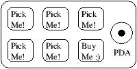
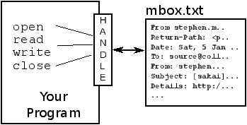
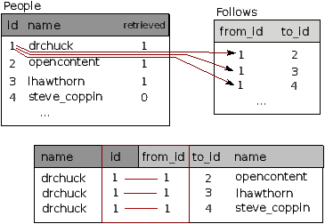

Python for Informatics: Exploring Information
Charles Severance
Version 0.0.7
Python for Informatics: Remixing an Open Book
It is quite natural for academics who are continuously told to
``publish or perish'' to want to always create something from scratch
that is their own fresh creation. This book is an
experiment in not starting from scratch, but instead ``re-mixing''
the book titled
Think Python: How to Think Like
a Computer Scientist
written by Allen B. Downey, Jeff Elkner and others.
In December of 2009, I was preparing to teach
SI502 - Networked Programming at the University of Michigan
for the fifth semester in a row and decided it was time
to write a Python textbook that focused on exploring data
instead of understanding algorithms and abstractions.
My goal in SI502 is to teach people life-long data handling
skills using Python. Few of my
students were planning to be be professional
computer programmers. Instead, they
planned be librarians, managers, lawyers, biologists, economists, etc.
who happened to want to skillfully use technology in their chosen field.
I never seemed to find the perfect data-oriented Python
book for my course so I set out
to write just such a book. Luckily at a faculty meeting three weeks
before I was about to start my new book from scratch over
the holiday break,
Dr. Atul Prakash showed me the Think Python book which he had
used to teach his Python course that semester.
It is a well-written Computer Science text with a focus on
short, direct explanations and ease of learning.
The overall book structure
has been changed to get to doing data analysis problems as quickly as
possible and have a series of running examples and exercises
about data analysis from the very beginning.
The chapters 2-10 are similar to the Think Python book
but there have been some changes. Nearly all number-oriented
exercises have been replaced with data-oriented exercises.
Topics are presented in the order to needed to build increasingly
sophisticated data analysis solutions. Some topics like try and
except are pulled forward and presented as part of the chapter
on conditionals while other concepts like functions are left until
they are needed to handle program complexity rather introduced
as an early lesson in abstraction. The word ``recursion'' does not
appear in the book at all.
In chapters 1 and 11-15, all of the material is brand new, focusing
on real-world uses and simple examples of Python for data analysis
including regular expressions for searching and parsing,
automating tasks on your computer, retrieving data across
the network, scraping web pages for data,
using web services, parsing XML data, and creating
and using databases using Structured Query Language.
The ultimate goal of all of these changes is a shift from a
Computer Science to an Informatics
focus is to only include topics into a first technology
class that can be applied even if one chooses not to
become a professional programmer.
Students who find this book interesting and want to further explore
should look at Allen B. Downey's Think Python book. Because there
is a lot of overlap between the two books,
students will quickly pick up skills in the additional
areas of computing in general and computational thinking
that are covered in Think Python.
And given that the books have a similar writing style and at times
have identical text and examples, you should be
able to move quickly through Think Python with a minimum of effort.
As the copyright holder of Think Python,
Allen has given me permission to change the book's license
on the material from his book that remains in this book
from the
GNU Free Documentation License
to the more recent
Creative Commons Attribution --- Share Alike
license.
This follows a general shift in open documentation licenses moving
from the GFDL to the CC-BY-SA (i.e. Wikipedia).
Using the CC-BY-SA license maintains the book's
strong copyleft tradition while making it even more straightforward
for new authors to reuse this material as they see fit.
I feel that this book serves an example of why open
materials are so important to the future of education,
and want to thank Allen B. Downey and Cambridge University
Press for their forward looking decision to make the book available
under an open Copyright. I hope they are pleased with the
results of my efforts and I hope that you the reader are pleased with
our collective efforts.
I would like to thank Allen B. Downey and Lauren Cowles for their help,
patience, and guidance in dealing with and resolving the copyright
issues around this book.
Charles Severance
www.dr-chuck.com
Ann Arbor, MI, USA
September 9, 2013
Charles Severance is a
Clinical Associate Professor
at the University of Michigan School of Information.
Preface for ``Think Python''
The strange history of ``Think Python''
(Allen B. Downey)
In January 1999 I was preparing to teach an introductory programming
class in Java. I had taught it three times and I was getting
frustrated. The failure rate in the class was too high and, even for
students who succeeded, the overall level of achievement was too low.
One of the problems I saw was the books.
They were too big, with too much unnecessary detail about Java, and
not enough high-level guidance about how to program. And they all
suffered from the trap door effect: they would start out easy,
proceed gradually, and then somewhere around Chapter 5 the bottom would
fall out. The students would get too much new material, too fast,
and I would spend the rest of the semester picking up the pieces.
Two weeks before the first day of classes, I decided to write my
own book.
My goals were:
- Keep it short. It is better for students to read 10 pages
than not read 50 pages.
- Be careful with vocabulary. I tried to minimize the jargon
and define each term at first use.
- Build gradually. To avoid trap doors, I took the most difficult
topics and split them into a series of small steps.
- Focus on programming, not the programming language. I included
the minimum useful subset of Java and left out the rest.
I needed a title, so on a whim I chose How to Think Like
a Computer Scientist.
My first version was rough, but it worked. Students did the reading,
and they understood enough that I could spend class time on the hard
topics, the interesting topics and (most important) letting the
students practice.
I released the book under the GNU Free Documentation License,
which allows users to copy, modify, and distribute the book.
What happened next is the cool part. Jeff Elkner, a high school
teacher in Virginia, adopted my book and translated it into
Python. He sent me a copy of his translation, and I had the
unusual experience of learning Python by reading my own book.
Jeff and I revised the book, incorporated a case study by
Chris Meyers, and in 2001 we released How to Think Like
a Computer Scientist: Learning with Python, also under
the GNU Free Documentation License.
As Green Tea Press, I published the book and started selling
hard copies through Amazon.com and college book stores.
Other books from Green Tea Press are available at
greenteapress.com.
In 2003 I started teaching at Olin College and I got to teach
Python for the first time. The contrast with Java was striking.
Students struggled less, learned more, worked on more interesting
projects, and generally had a lot more fun.
Over the last five years I have continued to develop the book,
correcting errors, improving some of the examples and
adding material, especially exercises. In 2008 I started work
on a major revision---at the same time, I was
contacted by an editor at Cambridge University Press who
was interested in publishing the next edition. Good timing!
I hope you enjoy working with this book, and that it helps
you learn to program and think, at least a little bit, like
a computer scientist.
Acknowledgements for ``Think Python''
(Allen B. Downey)
First and most importantly, I thank Jeff Elkner, who
translated my Java book into Python, which got this project
started and introduced me to what has turned out to be my
favorite language.
I also thank Chris Meyers, who contributed several sections
to How to Think Like a Computer Scientist.
And I thank the Free Software Foundation for developing
the GNU Free Documentation License, which helped make
my collaboration with Jeff and Chris possible.
I also thank the editors at Lulu who worked on
How to Think Like a Computer Scientist.
I thank all the students who worked with earlier
versions of this book and all the contributors (listed
in an Appendix) who sent in corrections and suggestions.
And I thank my wife, Lisa, for her work on this book, and Green
Tea Press, and everything else, too.
Allen B. Downey
Needham MA
Allen Downey is an Associate Professor of Computer Science at
the Franklin W. Olin College of Engineering.
Chapter 1 Why should you learn to write programs?
Writing programs (or programming) is a very creative
and rewarding activity. You can write programs for
many reasons ranging from making your living to solving
a difficult data analysis problem to having fun to helping
someone else solve a problem. This book assumes that
everyone needs to know how to program and that once
you know how to program, you will figure out what you want
to do with your newfound skills.
We are surrounded in our daily lives with computers ranging
from laptops to cell phones. We can think of these computers
as our ``personal assistants'' who can take care of many things
on our behalf. The hardware in our current-day computers
is essentially built to continuously ask us the question,
``What would you like me to do next?''.
Programmers add an operating system and a set of applications
to the hardware and we end up with a Personal Digital
Assistant that is quite helpful and capable of helping
many different things.
Our computers are fast and have vast amounts of memory and
could be very helpful to us if we only knew the language to
speak to explain to the computer what we would like it to
``do next''. If we knew this language we could tell the
computer to do tasks on our behalf that were repetitive.
Interestingly, the kinds of things computers can do best
are often the kinds of things that we humans find boring
and mind-numbing.
For example, look at the first three paragraphs of this
chapter and tell me the most commonly used word and how
many times the word is used. While you were able to read
and understand the words in a few seconds, counting them
is almost painful because it is not the kind of problem
that human minds are designed to solve. For a computer
the opposite is true, reading and understanding text
from a piece of paper is hard for a computer to do
but counting the words and telling you how many times
the most used word was used is very easy for the
computer:
python words.py
Enter file:words.txt
to 16
Our ``personal information analysis assistant'' quickly
told us that the word ``to'' was used sixteen times in the
first three paragraphs of this chapter.
This very fact that computers are good at things
that humans are not is why you need to become
skilled at talking ``computer language''. Once you learn
this new language, you can delegate mundane tasks
to your partner (the computer), leaving more time
for you to do the
things that you are uniquely suited for. You bring
creativity, intuition, and inventiveness to this
partnership.
1.1 Creativity and motivation
While this book is not intended for professional programmers, professional
programming can be a very rewarding job both financially and personally.
Building useful, elegant, and clever programs for others to use is a very
creative activity. Your computer or Personal Digital Assistant (PDA)
usually contains many different programs from many different groups of
programmers, each competing for your attention and interest. They try
their best to meet your needs and give you a great user experience in the
process. In some situations, when you choose a piece of software, the
programmers are directly compensated because of your choice.
If we think of programs as the creative output of groups of programmers,
perhaps the following figure is a more sensible version of our PDA:

For now, our primary motivation is not to make money or please end-users, but
instead for us to be more productive in handling the data and
information that we will encounter in our lives.
When you first start, you will be both the programmer and end-user of
your programs. As you gain skill as a programmer and
programming feels more creative to you, your thoughts may turn
toward developing programs for others.
1.2 Computer hardware architecture
Before we start learning the language we
speak to give instructions to computers to
develop software, we need to learn a small amount about
how computers are built. If you were to take
apart your computer or cell phone and look deep
inside, you would find the following parts:
The high-level definitions of these parts are as follows:
- The Central Processing Unit (or CPU) is
that part of the computer that is built to be obsessed
with ``what is next?''. If your computer is rated
at 3.0 Gigahertz, it means that the CPU will ask ``What next?''
three billion times per second. You are going to have to
learn how to talk fast to keep up with the CPU.
- The Main Memory is used to store information
that the CPU needs in a hurry. The main memory is nearly as
fast as the CPU. But the information stored in the main
memory vanishes when the computer is turned off.
- The Secondary Memory is also used to store
information, but it is much slower than the main memory.
The advantage of the secondary memory is that it can
store information even when there is no power to the
computer. Examples of secondary memory are disk drives
or flash memory (typically found in USB sticks and portable
music players).
- The Input and Output Devices are simply our
screen, keyboard, mouse, microphone, speaker, touchpad, etc.
They are all of the ways we interact with the computer.
- These days, most computers also have a
Network Connection to retrieve information over a network.
We can think of the network as a very slow place to store and
retrieve data that might not always be ``up''. So in a sense,
the network is a slower and at times unreliable form of
Secondary Memory
While most of the detail of how these components work is best left
to computer builders, it helps to have some terminology
so we can talk about these different parts as we write our programs.
As a programmer, your job is to use and orchestrate
each of these resources to solve the problem that you need solving
and analyze the data you need. As a programmer you will
mostly be ``talking'' to the CPU and telling it what to
do next. Sometimes you will tell the CPU to use the main memory,
secondary memory, network, or the input/output devices.
You need to be the person who answers the CPU's ``What next?''
question. But it would be very uncomfortable to shrink you
down to 5mm tall and insert you into the computer just so you
could issue a command three billion times per second. So instead,
you must write down your instructions in advance.
We call these stored instructions a program and the act
of writing these instructions down and getting the instructions to
be correct programming.
1.3 Understanding programming
In the rest of this book, we will try to turn you into a person
who is skilled in the art of programming. In the end you will be a
programmer --- perhaps not a professional programmer but
at least you will have the skills to look at a data/information
analysis problem and develop a program to solve the problem.
In a sense, you need two skills to be a programmer:
- First you need to know the programming language (Python) -
you need to know the vocabulary and the grammar. You need to be able
spell the words in this new language properly and how to construct
well-formed ``sentences'' in this new languages.
- Second you need to ``tell a story''. In writing a story,
you combine words and sentences to convey an idea to the reader.
There is a skill and art in constructing the story and skill in
story writing is improved by doing some writing and getting some
feedback. In programming, our program is the ``story'' and the
problem you are trying to solve is the ``idea''.
Once you learn one programming language such as Python, you will
find it much easier to learn a second programming language such
as JavaScript or C++. The new programming language has very different
vocabulary and grammar but once you learn problem solving skills,
they will be the same across all programming languages.
You will learn the ``vocabulary'' and ``sentences'' of Python pretty quickly.
It will take longer for you to be able to write a coherent program
to solve a brand new problem. We teach programming much like we teach
writing. We start reading and explaining programs and then we write
simple programs and then write increasingly complex programs over time.
At some point you ``get your muse'' and see the patterns on your own
and can see more naturally how to take a problem and
write a program that solves that problem. And once you get
to that point, programming becomes a very pleasant and creative process.
We start with the vocabulary and structure of Python programs. Be patient
as the simple examples remind you of when you started reading for the first
time.
1.4 Words and sentences
Unlike human languages, the Python vocabulary is actually pretty small.
We call this ``vocabulary'' the ``reserved words''. These are words that
have very special meaning to Python. When Python sees these words in
a Python program, they have one and only one meaning to Python. Later
as you write programs you will make your own words that have meaning to
you called variables. You will have great latitude in choosing
your names for your variables, but you cannot use any of Python's
reserved words as a name for a variable.
In a sense, when we train a dog, we would use special words like,
``sit'', ``stay'', and ``fetch''. Also when you talk to a dog and
don't use any of the reserved words, they just look at you with a
quizzical look on their faces until you say a reserved word.
For example, if you say,
``I wish more people would walk to improve their overall health.'',
what most dogs likely hear is,
``blah blah blah walk blah blah blah blah.''
That is because ``walk'' is a reserved word in dog language. Many
might suggest that the language between humans and cats has no
reserved words1.
The reserved words in the language where humans talk to
Python incudes the following:
and del for is raise
assert elif from lambda return
break else global not try
class except if or while
continue exec import pass yield
def finally in print
That is it, and unlike a dog, Python is already completely trained.
When you say ``try'', Python will try every time you say it without
fail.
We will learn these reserved words and how they are used in good time,
but for now we will focus on the Python equivalent of ``speak'' (in
human to dog language). The nice thing about telling Python to speak
is that we can even tell it what to say by giving it a message in quotes:
print 'Hello world!'
And we have even written our first syntactically correct Python sentence.
Our sentence starts with the reserved word print followed
by a string of text of our choosing enclosed in single quotes.
1.5 Conversing with Python
Now that we have a word and a simple sentence that we know in Python,
we need to know how to start a conversation with Python to test
our new language skills.
Before you can converse with Python, you must first install the Python
software on your computer and learn how to start Python on your
computer. That is too much detail for this chapter so I suggest
that you consult www.pythonlearn.com where I have detailed
instructions and screencasts of setting up and starting Python
on Macintosh and Windows systems. At some point, you will be in
a terminal or command window and you will type python and
the Python interpreter will start executing in interactive mode:
and appear somewhat as follows:
Python 2.6.1 (r261:67515, Jun 24 2010, 21:47:49)
[GCC 4.2.1 (Apple Inc. build 5646)] on darwin
Type "help", "copyright", "credits" or "license" for more information.
>>>
The >>> prompt is the Python interpreter's way of asking you, ``What
do you want me to do next?''. Python is ready to have a conversation with
you. All you have to know is how to speak the Python language and you
can have a conversation.
Lets say for example that you did not know even the simplest Python language
words or sentences. You might want to use the standard line that astronauts
use when they land on a far away planet and try to speak with the inhabitants
of the planet:
>>> I come in peace, please take me to your leader
File "<stdin>", line 1
I come in peace, please take me to your leader
^
SyntaxError: invalid syntax
>>>
This is not going so well. Unless you think of something quickly,
the inhabitants of the planet are likely to stab you with their spears,
put you on a spit, roast you over a fire, and eat you for dinner.
Luckily you brought a copy of this book on your travels and you thumb to
this very page and try again:
>>> print 'Hello world!'
Hello world!
This is looking much better so you try to communicate some
more:
>>> print 'You must be the legendary god that comes from the sky'
You must be the legendary god that comes from the sky
>>> print 'We have been waiting for you for a long time'
We have been waiting for you for a long time
>>> print 'Our legend says you will be very tasty with mustard'
Our legend says you will be very tasty with mustard
>>> print 'We will have a feast tonight unless you say
File "<stdin>", line 1
print 'We will have a feast tonight unless you say
^
SyntaxError: EOL while scanning string literal
>>>
The conversation was going so well for a while and then you
made the tiniest mistake using the Python language and Python
brought the spears back out.
At this point, you should also realize that while Python
is amazingly complex and powerful and very picky about
the syntax you use to communicate with it, Python is not intelligent. You are having a conversation with
yourself but using proper syntax.
In a sense when you use a program written by someone else
the conversation is between you and those other
programmers with Python acting as an intermediary. Python
is a way for the creators of programs to express how the
conversation is supposed to proceed. And
in just a few more chapters, you will be one of those
programmers using Python to talk to the users of your program.
Before we leave our first conversation with the Python
interpreter, you should probably know the proper way
to say ``good-bye'' when interacting with the inhabitants
of Planet Python:
>>> good-bye
Traceback (most recent call last):
File "<stdin>", line 1, in <module>
NameError: name 'good' is not defined
>>> if you don't mind, I need to leave
File "<stdin>", line 1
if you don't mind, I need to leave
^
SyntaxError: invalid syntax
>>> quit()
You will notice that the error is different for the first two
incorrect attempts. The second error is different because
if is a reserved word and Python saw the reserved word
and thought we were trying to say something but got the syntax
of the sentence wrong.
The proper way to say ``good-bye'' to Python is to enter
quit() at the interactive chevron >>> prompt.
It would have probably taken you quite a while to guess that
one so having a book handy probably will turn out
to be helpful.
1.6 Terminology: interpreter and compiler
Python is a high-level language intended to be relatively
straightforward for humans to read and write and for computers
to read and process. Other high-level languages include: Java, C++,
PHP, Ruby, Basic, Perl, JavaScript, and many more. The actual hardware
inside the Central Processing Unit (CPU) does not understand any
of these high level languages.
The CPU understands a language we call machine-language. Machine
language is very simple and frankly very tiresome to write because it
is represented all in zeros and ones:
01010001110100100101010000001111
11100110000011101010010101101101
...
Machine language seems quite simple on the surface given that there
are only zeros and ones, but its syntax is even more complex
and far more intricate than Python. So very few programmers ever write
machine language. Instead we build various translators to allow
programmers to write in high level languages like Python or JavaScript
and these translators convert the programs to machine language for actual
execution by the CPU.
Since machine language is tied to the computer hardware, machine language
is not portable across different types of hardware. Programs written in
high-level languages can be moved between different computers by using a
different interpreter on the new machine or re-compiling the code to create
a machine language version of the program for the new machine.
These programming language translators fall into two general categories:
(1) interpreters and (2) compilers.
An interpreter reads the source code of the program as written by the
programmer, parses the source code, and interprets the instructions on-the-fly.
Python is an interpreter and when we are running Python interactively,
we can type a line of Python (a sentence) and Python processes it immediately
and is ready for us to type another line of Python.
Some of the lines of Python tell Python that you want it to remember some
value for later. We need to pick a name for that value to be remembered and
we can use that symbolic name to retrieve the value later. We use the
term variable to refer to the labels we use to refer to this stored data.
>>> x = 6
>>> print x
6
>>> y = x * 7
>>> print y
42
>>>
In this example, we ask Python to remember the value six and use the label x
so we can retrieve the value later. We verify that Python has actually remembered
the value using print. Then we ask Python to retrieve x and multiply
it by seven and put the newly-computed value in y. Then we ask Python to print out
the value currently in y.
Even though we are typing these commands into Python one line at a time, Python
is treating them as an ordered sequence of statements with later statements able
to retrieve data created in earlier statements. We are writing our first
simple paragraph with four sentences in a logical and meaningful order.
It is the nature of an interpreter to be able to have an interactive conversation
as shown above. A compiler needs to be handed the entire program in a file, and then
it runs a process to translate the high level source code into machine language
and then the compiler puts the resulting machine language into a file for later
execution.
If you have a Windows system, often these executable machine language programs have a
suffix of ``.exe'' or ``.dll'' which stand for ``executable'' and ``dynamically loadable
library'' respectively. In Linux and Macintosh there is no suffix that uniquely marks
a file as executable.
If you were to open an executable file in a text editor, it would look
completely crazy and be unreadable:
^?ELF^A^A^A^@^@^@^@^@^@^@^@^@^B^@^C^@^A^@^@^@\xa0\x82
^D^H4^@^@^@\x90^]^@^@^@^@^@^@4^@ ^@^G^@(^@$^@!^@^F^@
^@^@4^@^@^@4\x80^D^H4\x80^D^H\xe0^@^@^@\xe0^@^@^@^E
^@^@^@^D^@^@^@^C^@^@^@^T^A^@^@^T\x81^D^H^T\x81^D^H^S
^@^@^@^S^@^@^@^D^@^@^@^A^@^@^@^A\^D^HQVhT\x83^D^H\xe8
....
It is not easy to read or write machine language so it is nice that we have
interpreters and compilers that allow us to write in a high-level
language like Python or C.
Now at this point in our discussion of compilers and interpreters, you should
be wondering a bit about the Python interpreter itself. What language is
it written in? Is it written in a compiled language? When we type
``python'', what exactly is happening?
The Python interpreter is written in a high level language called ``C''.
You can look at the actual source code for the Python interpreter by
going to www.python.org and working your way to their source code.
So Python is a program itself and it is compiled into machine code and
when you installed Python on your computer (or the vendor installed it),
you copied a machine-code copy of the translated Python program onto your
system. In Windows the executable machine code for Python itself is likely
in a file with a name like:
C:\Python27\python.exe
That is more than you really need to know to be a Python programmer, but
sometimes it pays to answer those little nagging questions right at
the beginning.
1.7 Writing a program
Typing commands into the Python interpreter is a great way to experiment
with Python’s features, but it is not recommended for solving more complex problems.
When we want to write a program,
we use a text editor to write the Python instructions into a file,
which is called a script. By
convention, Python scripts have names that end with .py.
To execute the script, you have to tell the Python interpreter
the name of the file. In a UNIX or Windows command window,
you would type python hello.py as follows:
csev$ cat hello.py
print 'Hello world!'
csev$ python hello.py
Hello world!
csev$
The ``csev$'' is the operating system prompt, and the ``cat hello.py'' is
showing us that the file ``hello.py'' has a one line Python program to print
a string.
We call the Python interpreter and tell it to read its source code from
the file ``hello.py'' instead of prompting us for lines of Python code
interactively.
You will notice that there was no need to have quit() at the end of
the Python program in the file. When Python is reading your source code
form a file, it knows to stop when it reaches the end of the file.
1.8 What is a program?
The definition of a program at its most basic is a sequence
of Python statements that have been crafted to do something.
Even our simple hello.py script is a program. It is a one-line
program and is not particularly useful, but in the strictest definition,
it is a Python program.
It might be easiest to understand what a program is by thinking about a problem
that a program might be built to solve, and then looking at a program
that would solve that problem.
Lets say you are doing Social Computing research on Facebook posts and
you are interested in the most frequently used word in a series of posts.
You could print out the stream of facebook posts and pore over the text
looking for the most common word, but that would take a long time and be very
mistake prone. You would be smart to write a Python program to handle the
task quickly and accurately so you can spend the weekend doing something
fun.
For example look at the following text about a clown and a car. Look at the
text and figure out the most common word and how many times it occurs.
the clown ran after the car and the car ran into the tent
and the tent fell down on the clown and the car
Then imagine that you are doing this task looking at millions of lines of
text. Frankly it would be quicker for you to learn Python and write a
Python program to count the words than it would be to manually
scan the words.
The even better news is that I already came up with a simple program to
find the most common word in a text file. I wrote it,
tested it, and now I am giving it to you to use so you can save some time.
name = raw_input('Enter file:')
handle = open(name, 'r')
text = handle.read()
words = text.split()
counts = dict()
for word in words:
counts[word] = counts.get(word,0) + 1
bigcount = None
bigword = None
for word,count in counts.items():
if bigcount is None or count > bigcount:
bigword = word
bigcount = count
print bigword, bigcount
You don't even need to know Python to use this program. You will need to get through
Chapter 10 of this book to fully understand the awesome Python techniques that were
used to make the program. You are the end user, you simply use the program and marvel
at its cleverness and how it saved you so much manual effort.
You simply type the code
into a file called words.py and run it or you download the source
code from http://www.pythonlearn.com/code/ and run it.
This is a good example of how Python and the Python language are acting as an intermediary
between you (the end-user) and me (the programmer). Python is a way for us to exchange useful
instruction sequences (i.e. programs) in a common language that can be used by anyone who
installs Python on their computer. So neither of us are talking to Python,
instead we are communicating with each other through Python.
1.9 The building blocks of programs
In the next few chapters, we will learn more about the vocabulary, sentence structure,
paragraph structure, and story structure of Python. We will learn about the powerful
capabilities of Python and how to compose those capabilities together to create useful
programs.
There are some low-level conceptual patterns that we use to construct programs. These
constructs are not just for Python programs, they are part of every programming language
from machine language up to the high-level languages.
- input:
- Get data from the the ``outside world''. This might be
reading data from a file, or even some kind of sensor like
a microphone or GPS. In our initial programs, our input will come from the user
typing data on the keyboard.
- output:
- Display the results of the program on a screen
or store them in a file or perhaps write them to a device like a
speaker to play music or speak text.
- sequential execution:
- Perform statements one after
another in the order they are encountered in the script.
- conditional execution:
- Check for certain conditions and
execute or skip a sequence of statements.
- repeated execution:
- Perform some set of statements
repeatedly, usually with
some variation.
- reuse:
- Write a set of instructions once and give them a name
and then reuse those instructions as needed throughout your program.
It sounds almost too simple to be true and of course it is never
so simple. It is like saying that walking is simply
``putting one foot in front of the other''. The ``art''
of writing a program is composing and weaving these
basic elements together many times over to produce something
that is useful to its users.
The word counting program above directly uses all of
these patterns except for one.
1.10 What could possibly go wrong?
As we saw in our earliest conversations with Python, we must
communicate very precisely when we write Python code. The smallest
deviation or mistake will cause Python to give up looking at your
program.
Beginning programmers often take the fact that Python leaves no
room for errors as evidence that Python is mean, hateful and cruel.
While Python seems to like everyone else, Python knows them
personally and holds a grudge against them. Because of this grudge,
Python takes our perfectly written programs and rejects them as
``unfit'' just to torment us.
>>> primt 'Hello world!'
File "<stdin>", line 1
primt 'Hello world!'
^
SyntaxError: invalid syntax
>>> primt 'Hello world'
File "<stdin>", line 1
primt 'Hello world'
^
SyntaxError: invalid syntax
>>> I hate you Python!
File "<stdin>", line 1
I hate you Python!
^
SyntaxError: invalid syntax
>>> if you come out of there, I would teach you a lesson
File "<stdin>", line 1
if you come out of there, I would teach you a lesson
^
SyntaxError: invalid syntax
>>>
There is little to be gained by arguing with Python. It is a tool,
it has no emotion and it is happy and ready to serve you whenever you
need it. Its error messages sound harsh, but they are just Python's
call for help. It has looked at what you typed, and it simply cannot
understand what you have entered.
Python is much more like a dog, loving you unconditionally, having a few
key words that it understands, looking you with a sweet look on its
face (>>>) and waiting for you to say something it understands.
When Python says ``SyntaxError: invalid syntax'', it is simply wagging
its tail and saying, ``You seemed to say something but I just don't
understand what you meant, but please keep talking to me (>>>).''
As your programs become increasingly sophisticated, you will encounter three
general types of errors:
- Syntax errors:
- These are the first errors you will make and the easiest
to fix. A syntax error means that you have violated the ``grammar'' rules of Python.
Python does its best to point right at the line and character where
it noticed it was confused. The only tricky bit of syntax errors is that sometimes
the mistake that needs fixing is actually earlier in the program than where Python
noticed it was confused. So the line and character that Python indicates in
a syntax error may just be a starting point for your investigation.
- Logic errors:
- A logic error is when your program has good syntax but there is a mistake
in the order of the statements or perhaps a mistake in how the statements relate to one another.
A good example of a logic error might be, ``take a drink from your water bottle, put it
in your backpack, walk to the library, and then put the top back on the bottle.''
- Semantic errors:
- A semantic error is when your description of the steps to take
is syntactically perfect and in the right order, but there is simply a mistake in
the program. The program is perfectly correct but it does not do what
you intended for it to do. A simple example would
be if you were giving a person directions to a restaurant and said, ``... when you reach
the intersection with the gas station, turn left and go one mile and the restaurant
is a red building on your left.''. Your friend is very late and calls you to tell you that
they are on a farm and walking around behind a barn, with no sign of a restaurant.
The you say ``did you turn left or right gas station?'' and
they say, ``I followed your directions perfectly, I have
them written down, it says turn left and go one mile at the gas station.''. Then you say,
``I am very sorry, because while my instructions were syntactically correct, they
sadly contained a small but undetected semantic error.''.
Again in all three types of errors, Python is merely trying its hardest to
do exactly what you have asked.
1.11 The learning journey
As you progress through the rest of the book, don't be afraid if the concepts
don't seem to fit together well the first time. When you were learning to speak,
it was not a problem for your first few years you just made cute gurgling noises.
And it was OK if it took six months for you to move from simple vocabulary to
simple sentences and took 5-6 more years to move from sentences to paragraphs, and a
few more years to be able to write an interesting complete short story on your own.
We want you to learn Python much more rapidly, so we teach it all at the same time
over the next few chapters.
But it is like learning a new language that takes time to absorb and understand
before it feels natural.
That leads to some confusion as we visit and revisit
topics to try to get you to see the big picture while we are defining the tiny
fragments that make up the big picture. While the book is written linearly and
if you are taking a course, it will progress in a linear fashion, don't hesitate
to be very non-linear in how you approach the material. Look forwards and backwards
and read with a light touch. By skimming more advanced material without
fully understanding the details, you can get a better understanding of the ``why?''
of programming. By reviewing previous material and even re-doing earlier
exercises, you will realize that you actually learned a lot of material even
if the material you are currently staring at seems a bit impenetrable.
Usually when you are learning your first programming language, there are a few
wonderful ``Ah-Hah!'' moments where you can look up from pounding away at some rock
with a hammer and chisel and step away and see that you are indeed building
a beautiful sculpture.
If something seems particularly hard, there is usually no value in staying up all
night and staring at it. Take a break, take a nap, have a snack, explain what you
are having a problem with to someone (or perhaps your dog), and then come back it with
fresh eyes. I assure you that once you learn the programming concepts in the book
you will look back and see that it was all really easy and elegant and it simply
took you a bit of time to absorb it.
1.12 Glossary
- bug:
- An error in a program.
- central processing unit:
- The heart of any computer. It is what
runs the software that we write; also called ``CPU'' or ``the processor''.
- compile:
- To translate a program written in a high-level language
into a low-level language all at once, in preparation for later
execution.
- high-level language:
- A programming language like Python that
is designed to be easy for humans to read and write.
- interactive mode:
- A way of using the Python interpreter by
typing commands and expressions at the prompt.
- interpret:
- To execute a program in a high-level language
by translating it one line at a time.
- low-level language:
- A programming language that is designed
to be easy for a computer to execute; also called ``machine code'' or
``assembly language.''
- machine code:
- The lowest level language for software which
is the language that is directly executed by the central processing unit
(CPU).
- main memory:
- Stores programs and data. Main memory loses
its information when the power is turned off.
- parse:
- To examine a program and analyze the syntactic structure.
- portability:
- A property of a program that can run on more
than one kind of computer.
- print statement:
- An instruction that causes the Python
interpreter to display a value on the screen.
- problem solving:
- The process of formulating a problem, finding
a solution, and expressing the solution.
- program:
- A set of instructions that specifies a computation.
- prompt:
- When a program displays a message and pauses for the
user to type some input to the program.
- secondary memory:
- Stores programs and data and retains its
information even when the power is turned off. Generally slower
than main memory. Examples of secondary memory include disk
drives and flash memory in USB sticks.
- semantics:
- The meaning of a program.
- semantic error:
- An error in a program that makes it do something
other than what the programmer intended.
- source code:
- A program in a high-level language.
1.13 Exercises
Exercise 1
What is the function of the secondary memory in a computer?
a) Execute all of the computation and logic of the program
b) Retrieve web pages over the Internet
c) Store information for the long term - even beyond a power cycle
d) Take input from the user
Exercise 2
What is a program?
Exercise 3
What is is the difference between a compiler and an interpreter?
Exercise 4
Which of the following contains "machine code"?
a) The Python interpreter
b) The keyboard
c) Python source file
d) A word processing document
Exercise 5
What is wrong with the following code:
>>> primt 'Hello world!'
File "<stdin>", line 1
primt 'Hello world!'
^
SyntaxError: invalid syntax
>>>
Exercise 6
Where in the computer is a variable such as "X" stored
after the following Python line finishes?
x = 123
a) Central processing unit
b) Main Memory
c) Secondary Memory
d) Input Devices
e) Output Devices
Exercise 7
What will the following program print out:
x = 43
x = x + 1
print x
a) 43
b) 44
c) x + 1
d) Error because x = x + 1 is not possible mathematically
Exercise 8
Explain each of the following using an example of a human capability:
(1) Central processing unit, (2) Main Memory, (3) Secondary Memory,
(4) Input Device, and
(5) Output Device.
For example, "What is the human equivalent to a Central Processing Unit"?
Exercise 9
How do you fix a "Syntax Error"?
- 1
- http://xkcd.com/231/
Chapter 2 Variables, expressions and statements
2.1 Values and types
A value is one of the basic things a program works with,
like a letter or a
number. The values we have seen so far
are 1, 2, and
'Hello, World!'.
These values belong to different types:
2 is an integer, and 'Hello, World!' is a string,
so-called because it contains a ``string'' of letters.
You (and the interpreter) can identify
strings because they are enclosed in quotation marks.
The print statement also works for integers. We use the
python command to start the interpreter.
python
>>> print 4
4
If you are not sure what type a value has, the interpreter can tell you.
>>> type('Hello, World!')
<type 'str'>
>>> type(17)
<type 'int'>
Not surprisingly, strings belong to the type str and
integers belong to the type int. Less obviously, numbers
with a decimal point belong to a type called float,
because these numbers are represented in a
format called floating-point.
>>> type(3.2)
<type 'float'>
What about values like '17' and '3.2'?
They look like numbers, but they are in quotation marks like
strings.
>>> type('17')
<type 'str'>
>>> type('3.2')
<type 'str'>
They're strings.
When you type a large integer, you might be tempted to use commas
between groups of three digits, as in 1,000,000. This is not a
legal integer in Python, but it is legal:
>>> print 1,000,000
1 0 0
Well, that's not what we expected at all! Python interprets 1,000,000 as a comma-separated sequence of integers, which it
prints with spaces between.
This is the first example we have seen of a semantic error: the code
runs without producing an error message, but it doesn't do the
``right'' thing.
2.2 Variables
One of the most powerful features of a programming language is the
ability to manipulate variables. A variable is a name that
refers to a value.
An assignment statement creates new variables and gives
them values:
>>> message = 'And now for something completely different'
>>> n = 17
>>> pi = 3.1415926535897931
This example makes three assignments. The first assigns a string
to a new variable named message;
the second assigns the integer 17 to n; the third
assigns the (approximate) value of p to pi.
To display the value of a variable, you can use a print statement:
>>> print n
17
>>> print pi
3.14159265359
The type of a variable is the type of the value it refers to.
>>> type(message)
<type 'str'>
>>> type(n)
<type 'int'>
>>> type(pi)
<type 'float'>
2.3 Variable names and keywords
Programmers generally choose names for their variables that
are meaningful---they document what the variable is used for.
Variable names can be arbitrarily long. They can contain
both letters and numbers, but they have to begin with a letter.
It is legal to use uppercase letters, but it is a good idea
to begin variable names with a lowercase letter (you'll
see why later).
The underscore character (_) can appear in a name.
It is often used in names with multiple words, such as
my_name or airspeed_of_unladen_swallow.
If you give a variable an illegal name, you get a syntax error:
>>> 76trombones = 'big parade'
SyntaxError: invalid syntax
>>> more@ = 1000000
SyntaxError: invalid syntax
>>> class = 'Advanced Theoretical Zymurgy'
SyntaxError: invalid syntax
76trombones is illegal because it does not begin with a letter.
more@ is illegal because it contains an illegal character, @. But what's wrong with class?
It turns out that class is one of Python's keywords. The
interpreter uses keywords to recognize the structure of the program,
and they cannot be used as variable names.
Python reserves 31 keywords1 for its use:
and del from not while
as elif global or with
assert else if pass yield
break except import print
class exec in raise
continue finally is return
def for lambda try
You might want to keep this list handy. If the interpreter complains
about one of your variable names and you don't know why, see if it
is on this list.
2.4 Statements
A statement is a unit of code that the Python interpreter can
execute. We have seen two kinds of statements: print
and assignment.
When you type a statement in interactive mode, the interpreter
executes it and displays the result, if there is one.
A script usually contains a sequence of statements. If there
is more than one statement, the results appear one at a time
as the statements execute.
For example, the script
print 1
x = 2
print x
produces the output
1
2
The assignment statement produces no output.
2.5 Operators and operands
Operators are special symbols that represent computations like
addition and multiplication. The values the operator is applied to
are called operands.
The operators +, -, *, / and **
perform addition, subtraction, multiplication, division and
exponentiation, as in the following examples:
20+32 hour-1 hour*60+minute minute/60 5**2 (5+9)*(15-7)
The division operator might not do what you expect:
>>> minute = 59
>>> minute/60
0
The value of minute is 59, and in conventional arithmetic 59
divided by 60 is 0.98333, not 0. The reason for the discrepancy is
that Python is performing floor division2.
When both of the operands are integers, the result is also an
integer; floor division chops off the fraction
part, so in this example it rounds down to zero.
If either of the operands is a floating-point number, Python performs
floating-point division, and the result is a float:
>>> minute/60.0
0.98333333333333328
2.6 Expressions
An expression is a combination of values, variables, and operators.
A value all by itself is considered an expression, and so is
a variable, so the following are all legal expressions
(assuming that the variable x has been assigned a value):
17
x
x + 17
If you type an expression in interactive mode, the interpreter
evaluates it and displays the result:
>>> 1 + 1
2
But in a script, an expression all by itself doesn't
do anything! This is a common
source of confusion for beginners.
Exercise 1
Type the following statements in the Python interpreter to see
what they do:
5
x = 5
x + 1
2.7 Order of operations
When more than one operator appears in an expression, the order of
evaluation depends on the rules of precedence. For
mathematical operators, Python follows mathematical convention.
The acronym PEMDAS is a useful way to
remember the rules:
- Parentheses have the highest precedence and can be used
to force an expression to evaluate in the order you want. Since
expressions in parentheses are evaluated first, 2 * (3-1) is 4,
and (1+1)**(5-2) is 8. You can also use parentheses to make an
expression easier to read, as in (minute * 100) / 60, even
if it doesn't change the result.
- Exponentiation has the next highest precedence, so
2**1+1 is 3, not 4, and 3*1**3 is 3, not 27.
- Multiplication and Division have the same precedence,
which is higher than Addition and Subtraction, which also
have the same precedence. So 2*3-1 is 5, not 4, and
6+4/2 is 8, not 5.
- Operators with the same precedence are evaluated from left to
right. So in the expression 5-3-1 is 1, not 3 because the
5-3 happens first and then 1 is subtracted from 2.
When in doubt always put parentheses in your expressions to make sure
the computations are performed in the order you intend.
2.8 Modulus operator
The modulus operator works on integers and yields the remainder
when the first operand is divided by the second. In Python, the
modulus operator is a percent sign (%). The syntax is the same
as for other operators:
>>> quotient = 7 / 3
>>> print quotient
2
>>> remainder = 7 % 3
>>> print remainder
1
So 7 divided by 3 is 2 with 1 left over.
The modulus operator turns out to be surprisingly useful. For
example, you can check whether one number is divisible by another---if
x % y is zero, then x is divisible by y.
Also, you can extract the right-most digit
or digits from a number. For example, x % 10 yields the
right-most digit of x (in base 10). Similarly x % 100
yields the last two digits.
2.9 String operations
The + operator works with strings, but it
is not addition in the mathematical sense. Instead it performs
concatenation, which means joining the strings by
linking them end-to-end. For example:
>>> first = 10
>>> second = 15
>>> print first+second
25
>>> first = '100'
>>> second = '150'
>>> print first + second
100150
The output of this program is throatwarbler.
2.10 Asking the user for input
Sometimes we would like to take the value for a variable from the user
via their keyboard.
Python provides a built-in function called raw_input that gets
input from the keyboard3. When this function is called, the program stops and
waits for the user to type something. When the user presses Return or Enter, the program resumes and raw_input
returns what the user typed as a string.
>>> input = raw_input()
Some silly stuff
>>> print input
Some silly stuff
Before getting input from the user, it is a good idea to print a
prompt telling the user what to input. You can pass a string
to raw_input to be displayed to the user before pausing
for input:
>>> name = raw_input('What is your name?\n')
What is your name?
Chuck
>>> print name
Chuck
The sequence \n at the end of the prompt represents a newline,
which is a special character that causes a line break.
That's why the user's input appears below the prompt.
If you expect the user to type an integer, you can try to convert
the return value to int using the int() function:
>>> prompt = 'What...is the airspeed velocity of an unladen swallow?\n'
>>> speed = raw_input(prompt)
What...is the airspeed velocity of an unladen swallow?
17
>>> int(speed)
17
>>> int(speed) + 5
22
But if the user types something other than a string of digits,
you get an error:
>>> speed = raw_input(prompt)
What...is the airspeed velocity of an unladen swallow?
What do you mean, an African or a European swallow?
>>> int(speed)
ValueError: invalid literal for int()
We will see how to handle this kind of error later.
2.11 Comments
As programs get bigger and more complicated, they get more difficult
to read. Formal languages are dense, and it is often difficult to
look at a piece of code and figure out what it is doing, or why.
For this reason, it is a good idea to add notes to your programs to explain
in natural language what the program is doing. These notes are called
comments, and they start with the # symbol:
# compute the percentage of the hour that has elapsed
percentage = (minute * 100) / 60
In this case, the comment appears on a line by itself. You can also put
comments at the end of a line:
percentage = (minute * 100) / 60 # percentage of an hour
Everything from the # to the end of the line is ignored---it
has no effect on the program.
Comments are most useful when they document non-obvious features of
the code. It is reasonable to assume that the reader can figure out
what the code does; it is much more useful to explain why.
This comment is redundant with the code and useless:
v = 5 # assign 5 to v
This comment contains useful information that is not in the code:
v = 5 # velocity in meters/second.
Good variable names can reduce the need for comments, but
long names can make complex expressions hard to read, so there is
a tradeoff.
2.12 Choosing mnemonic variable names
As long as you follow the simple rules of variable naming, and avoid
reserved words, you have a lot of choice when you name your variables.
In the beginning, this choice can be confusing both when you read a
program and when you write your own programs. For example, the
following three programs are identical in terms of what they accomplish,
but very different when you read them and try to understand them.
a = 35.0
b = 12.50
c = a * b
print c
hours = 35.0
rate = 12.50
pay = hours * rate
print pay
x1q3z9ahd = 35.0
x1q3z9afd = 12.50
x1q3p9afd = x1q3z9ahd * x1q3z9afd
print x1q3p9afd
The Python interpreter sees all three of these programs as exactly the
same but humans see and understand these programs quite differently.
Humans will most quickly understand the intent
of the second program because the
programmer has chosen variable names that reflect the intent of the programmer
regarding what data will be stored in each variable.
We call these wisely-chosen variable names ``mnemonic variable names''. The
word mnemonic4
means ``memory aid''.
We choose mnemonic variable names to help us remember why we created the variable
in the first place.
While this all sounds great, and it is a very good idea to use mnemonic variable
names, mnemonic variable names can get in the way of a beginning programmer's
ability to parse and understand code. This is because beginning programmers
have not yet memorized the reserved words (there are only 31 of them) and sometimes
variables which have names that are too descriptive start to look like
part of the language and not just well-chosen variable names.
Take a quick look at the following Python sample code which loops through some data.
We will cover loops soon, but for now try to just puzzle through what this means:
for word in words:
print word
What is happening here? Which of the tokens (for, word, in, etc.) are reserved words
and which are just variable names? Does Python understand at a fundamental level
the notion of words? Beginning programmers have
trouble separating what parts of the
code must be the same as this example and what parts of the code are simply
choices made by the programmer.
The following code is equivalent to the above code:
for slice in pizza:
print slice
It is easier for the beginning programmer to look at this code and know which
parts are reserved words defined by Python and which parts are simply variable
names chosen by the programmer. It is pretty clear that Python has no fundamental
understanding of pizza and slices and the fact that a pizza consists of a set
of one or more slices.
But if our program is truly about reading data and looking for words in the data,
pizza and slice are very un-mnemonic variable names. Choosing them
as variable names distracts from the meaning of the program.
After a pretty short period of time, you will know the most common reserved words
and you will start to see the reserved words jumping out at you:
for word in words:
print word
The parts of the code that are defined by
Python (for, in, print, and :) are in bold
and the programmer chosen variables (word and words) are not in bold.
Many text editors are aware of Python
syntax and will color reserved words differently to give you clues to keep
your variables and reserved words separate.
After a while you will begin to read Python and quickly determine what
is a variable and what is a reserved word.
2.13 Debugging
At this point the syntax error you are most likely to make is
an illegal variable name, like class and yield, which
are keywords, or odd~job and US$, which contain
illegal characters.
If you put a space in a variable name, Python thinks it is two
operands without an operator:
>>> bad name = 5
SyntaxError: invalid syntax
For syntax errors, the error messages don't help much.
The most common messages are SyntaxError: invalid syntax and
SyntaxError: invalid token, neither of which is very informative.
The runtime error you are most likely to make is a ``use before
def;'' that is, trying to use a variable before you have assigned
a value. This can happen if you spell a variable name wrong:
>>> principal = 327.68
>>> interest = principle * rate
NameError: name 'principle' is not defined
Variables names are case sensitive, so LaTeX is not the
same as latex.
At this point the most likely cause of a semantic error is
the order of operations. For example, to evaluate 1/2 p,
you might be tempted to write
>>> 1.0 / 2.0 * pi
But the division happens first, so you would get p / 2, which
is not the same thing! There is no way for Python
to know what you meant to write, so in this case you don't
get an error message; you just get the wrong answer.
2.14 Glossary
- assignment:
- A statement that assigns a value to a variable.
- concatenate:
- To join two operands end-to-end.
- comment:
- Information in a program that is meant for other
programmers (or anyone reading the source code) and has no effect on the
execution of the program.
- evaluate:
- To simplify an expression by performing the operations
in order to yield a single value.
- expression:
- A combination of variables, operators, and values that
represents a single result value.
- floating-point:
- A type that represents numbers with fractional
parts.
- floor division:
- The operation that divides two numbers and chops off
the fraction part.
- integer:
- A type that represents whole numbers.
- keyword:
- A reserved word that is used by the compiler to parse a
program; you cannot use keywords like if, def, and while as
variable names.
- mnemonic:
- A memory aid. We often give variables mnemonic names
to help us remember what is stored in the variable.
- modulus operator:
- An operator, denoted with a percent sign
(%), that works on integers and yields the remainder when one
number is divided by another.
- operand:
- One of the values on which an operator operates.
- operator:
- A special symbol that represents a simple computation like
addition, multiplication, or string concatenation.
- rules of precedence:
- The set of rules governing the order in which
expressions involving multiple operators and operands are evaluated.
- statement:
- A section of code that represents a command or action. So
far, the statements we have seen are assignments and print statements.
- string:
- A type that represents sequences of characters.
- type:
- A category of values. The types we have seen so far
are integers (type int), floating-point numbers (type float), and strings (type str).
- value:
- One of the basic units of data, like a number or string,
that a program manipulates.
- variable:
- A name that refers to a value.
2.15 Exercises
Exercise 2
Write a program that uses raw_input to prompt a user for their name
and then welcomes them.
Enter your name: Chuck
Hello Chuck
Exercise 3
Write a program to prompt the user for hours and rate per hour to compute
gross pay.
Enter Hours: 35
Enter Rate: 2.75
Pay: 96.25
We won't worry about making sure our pay has exactly two digits after
the decimal place for now. If you want, you can play with the
built-in Python round function to properly round the resulting pay
to two decimal places.
Exercise 4
Assume that we execute the following assignment statements:
width = 17
height = 12.0
For each of the following expressions, write the value of the
expression and the type (of the value of the expression).
- width/2
- width/2.0
- height/3
- 1 + 2 * 5
Use the Python interpreter to check your answers.
Exercise 5
Write a program which prompts the user for a Celsius temperature,
convert the temperature to Fahrenheit and print out the converted
temperature.
- 1
- In Python 3.0, exec is no
longer a keyword, but nonlocal is.
- 2
- In Python 3.0,
the result of this division is a float.
In Python 3.0, the new operator
// performs integer division.
- 3
- In Python 3.0, this function is named
input.
- 4
- See
http://en.wikipedia.org/wiki/Mnemonic
for an extended description of the word ``mnemonic''.
Chapter 3 Conditional execution
3.1 Boolean expressions
A boolean expression is an expression that is either true
or false. The following examples use the
operator ==, which compares two operands and produces
True if they are equal and False otherwise:
>>> 5 == 5
True
>>> 5 == 6
False
True and False are special
values that belong to the type bool; they are not strings:
>>> type(True)
<type 'bool'>
>>> type(False)
<type 'bool'>
The == operator is one of the comparison operators; the
others are:
x != y # x is not equal to y
x > y # x is greater than y
x < y # x is less than y
x >= y # x is greater than or equal to y
x <= y # x is less than or equal to y
x is y # x is the same as y
x is not y # x is not the same as y
Although these operations are probably familiar to you, the Python
symbols are different from the mathematical symbols. A common error
is to use a single equal sign (=) instead of a double equal sign
(==). Remember that = is an assignment operator and
== is a comparison operator. There is no such thing as
=< or =>.
3.2 Logical operators
There are three logical operators: and, or, and not. The semantics (meaning) of these operators is
similar to their meaning in English. For example,
x > 0 and x < 10
is true only if x is greater than 0
and less than 10.
n%2 == 0 or n%3 == 0 is true if either of the conditions
is true, that is, if the number is divisible by 2 or 3.
Finally, the not operator negates a boolean
expression, so not (x > y) is true if x > y is false,
that is, if x is less than or equal to y.
Strictly speaking, the operands of the logical operators should be
boolean expressions, but Python is not very strict.
Any nonzero number is interpreted as ``true.''
>>> 17 and True
True
This flexibility can be useful, but there are some subtleties to
it that might be confusing. You might want to avoid it (unless
you know what you are doing).
3.3 Conditional execution
In order to write useful programs, we almost always need the ability
to check conditions and change the behavior of the program
accordingly. Conditional statements give us this ability. The
simplest form is the if statement:
if x > 0 :
print 'x is positive'
The boolean expression after the if statement is
called the condition. We end the if
statement with a colon character (:) and the line(s)
after the if statement are indented.
If the logical condition is true, then the indented
statement gets executed. If the logical condition is
false, the indented statement is skipped.
if statements have the same structure as function definitions
or for loops. The statement consists of a header line
that ends with the colon character (:)
followed by an indented block. Statements like this are
called compound statements because they stretch
across more than one line.
There is no limit on the number of statements that can appear in
the body, but there has to be at least one.
Occasionally, it is useful to have a body with no statements (usually
as a place keeper for code you haven't written yet). In that
case, you can use the pass statement, which does nothing.
if x < 0 :
pass # need to handle negative values!
If you enter an if statement in the Python interpreter, the prompt will change
from three chevrons to three dots to indicate you are in the middle of a block of
statements as shown below:
>>> x = 3
>>> if x < 10:
... print 'Small'
...
Small
>>>
3.4 Alternative execution
A second form of the if statement is alternative execution,
in which there are two possibilities and the condition determines
which one gets executed. The syntax looks like this:
if x%2 == 0 :
print 'x is even'
else :
print 'x is odd'
If the remainder when x is divided by 2 is 0, then we
know that x is even, and the program displays a message to that
effect. If the condition is false, the second set of statements is
executed.
Since the condition must be true or false, exactly one of
the alternatives will be executed. The alternatives are called
branches, because they are branches in the flow of execution.
3.5 Chained conditionals
Sometimes there are more than two possibilities and we need more than
two branches. One way to express a computation like that is a chained conditional:
if x < y:
print 'x is less than y'
elif x > y:
print 'x is greater than y'
else:
print 'x and y are equal'
elif is an abbreviation of ``else if.'' Again, exactly one
branch will be executed.
There is no limit on the number of elif statements. If there is an else clause, it has to be
at the end, but there doesn't have to be one.
if choice == 'a':
print 'Bad guess'
elif choice == 'b':
print 'Good guess'
elif choice == 'c':
print 'Close, but not correct'
Each condition is checked in order. If the first is false,
the next is checked, and so on. If one of them is
true, the corresponding branch executes, and the statement
ends. Even if more than one condition is true, only the
first true branch executes.
3.6 Nested conditionals
One conditional can also be nested within another. We could have
written the trichotomy example like this:
if x == y:
print 'x and y are equal'
else:
if x < y:
print 'x is less than y'
else:
print 'x is greater than y'
The outer conditional contains two branches. The
first branch contains a simple statement. The second branch
contains another if statement, which has two branches of its
own. Those two branches are both simple statements,
although they could have been conditional statements as well.
Although the indentation of the statements makes the structure
apparent, nested conditionals become difficult to read very
quickly. In general, it is a good idea to avoid them when you can.
Logical operators often provide a way to simplify nested conditional
statements. For example, we can rewrite the following code using a
single conditional:
if 0 < x:
if x < 10:
print 'x is a positive single-digit number.'
The print statement is executed only if we make it past both
conditionals, so we can get the same effect with the and operator:
if 0 < x and x < 10:
print 'x is a positive single-digit number.'
3.7 Catching exceptions using try and except
Earlier we saw a code segment where we used the raw_input and
int functions to read and parse an integer number entered by
the user. We also saw how treacherous doing this could be:
>>> speed = raw_input(prompt)
What...is the airspeed velocity of an unladen swallow?
What do you mean, an African or a European swallow?
>>> int(speed)
ValueError: invalid literal for int()
>>>
When we are executing these statements in the Python interpreter,
we get a new prompt from the interpreter, think ``oops'' and move
on to our next statement.
However if this code is placed in a
Python script and this error occurs, your script immediately
stops in its tracks with a traceback.
It does not execute the following statement.
Here is a sample program to convert a Fahrenheit temperature
to a Celsius temperature:
inp = raw_input('Enter Fahrenheit Temperature:')
fahr = float(inp)
cel = (fahr - 32.0) * 5.0 / 9.0
print cel
If we execute this code and give it invalid input, it simply fails
with an unfriendly error message:
python fahren.py
Enter Fahrenheit Temperature:72
22.2222222222
python fahren.py
Enter Fahrenheit Temperature:fred
Traceback (most recent call last):
File "fahren.py", line 2, in <module>
fahr = float(inp)
ValueError: invalid literal for float(): fred
There is a conditional execution structure built into
Python to handle these types of expected and unexpected
errors called ``try / except''. The idea of try
and except is that you know that some sequence
of instruction(s) may have a problem and you want to
add some statements to be executed if an error occurs.
These extra statements (the except block) are ignored
if there is no error.
You can think of the try and except feature
in Python as an ``insurance policy'' on a sequence of
statements.
We can rewrite our temperature converter as follows:
inp = raw_input('Enter Fahrenheit Temperature:')
try:
fahr = float(inp)
cel = (fahr - 32.0) * 5.0 / 9.0
print cel
except:
print 'Please enter a number'
Python starts by executing the
sequence of statements in the
try block. If all goes
well, it skips the except block and proceeds. If an
exception occurs in the try block,
Python jumps out of the try block and
executes the sequence of statements in the except block.
python fahren2.py
Enter Fahrenheit Temperature:72
22.2222222222
python fahren2.py
Enter Fahrenheit Temperature:fred
Please enter a number
Handling an exception with a try statement is called catching an exception. In this example, the except clause
prints an error message. In general,
catching an exception gives you a chance to fix the problem, or try
again, or at least end the program gracefully.
3.8 Short circuit evaluation of logical expressions
When Python is processing a logical expression such as
x >= 2 and (x/y) > 2, it evaluates the expression
from left-to-right. Because of the definition of and,
if x is less than 2, the expression x >= 2 is
False and so the whole expression is False regardless
of whether (x/y) > 2 evaluates to True or False.
When Python detects that there is nothing to be gained by evaluating
the rest of a logical expression, it stops its evaluation and does
not do the computations in the rest of the logical expression.
When the evaluation of a logical expression stops because the overall
value is already known, it is called short-circuiting
the evaluation.
While this may seem like a fine point, the short circuit behavior
leads to a clever technique called the guardian pattern.
Consider the following code sequence in the Python interpreter:
>>> x = 6
>>> y = 2
>>> x >= 2 and (x/y) > 2
True
>>> x = 1
>>> y = 0
>>> x >= 2 and (x/y) > 2
False
>>> x = 6
>>> y = 0
>>> x >= 2 and (x/y) > 2
Traceback (most recent call last):
File "<stdin>", line 1, in <module>
ZeroDivisionError: integer division or modulo by zero
>>>
The third calculation failed because Python was evaluating (x/y)
and y was zero which causes a runtime error. But the second example
did not fail because the first part of the expression x >= 2
evaluated to False so the (x/y) was not ever executed
due to the short circuit rule and there was no error.
We can construct the logical expression to strategically place a guard
evaluation just before the evaluation that might cause an error as follows:
>>> x = 1
>>> y = 0
>>> x >= 2 and y != 0 and (x/y) > 2
False
>>> x = 6
>>> y = 0
>>> x >= 2 and y != 0 and (x/y) > 2
False
>>> x >= 2 and (x/y) > 2 and y != 0
Traceback (most recent call last):
File "<stdin>", line 1, in <module>
ZeroDivisionError: integer division or modulo by zero
>>>
In the first logical expression, x >= 2 is False so the evaluation
stops at the and. In the second logical expression x >= 2 is True
but y != 0 is False so we never reach (x/y).
In the third logical expression, the y != 0 is after the
(x/y) calculation so the expression fails with an error.
In the second expression, we say that y != 0 acts as a guard
to insure that we only execute (x/y) if y is non-zero.
3.9 Debugging
The traceback Python displays when an error occurs contains
a lot of information, but it can be overwhelming, especially
when there are many frames on the stack. The most
useful parts are usually:
- What kind of error it was, and
- Where it occurred.
Syntax errors are usually easy to find, but there are a few
gotchas. Whitespace errors can be tricky because spaces and
tabs are invisible and we are used to ignoring them.
>>> x = 5
>>> y = 6
File "<stdin>", line 1
y = 6
^
SyntaxError: invalid syntax
In this example, the problem is that the second line is indented by
one space. But the error message points to y, which is
misleading. In general, error messages indicate where the problem was
discovered, but the actual error might be earlier in the code,
sometimes on a previous line.
The same is true of runtime errors. Suppose you are trying
to compute a signal-to-noise ratio in decibels. The formula
is SNRdb = 10 log10 (Psignal / Pnoise). In Python,
you might write something like this:
import math
signal_power = 9
noise_power = 10
ratio = signal_power / noise_power
decibels = 10 * math.log10(ratio)
print decibels
But when you run it, you get an error message1:
Traceback (most recent call last):
File "snr.py", line 5, in ?
decibels = 10 * math.log10(ratio)
OverflowError: math range error
The error message indicates line 5, but there is nothing
wrong with that line. To find the real error, it might be
useful to print the value of ratio, which turns out to
be 0. The problem is in line 4, because dividing two integers
does floor division. The solution is to represent signal power
and noise power with floating-point values.
In general, error messages tell you where the problem was discovered,
but that is often not where it was caused.
3.10 Glossary
- body:
- The sequence of statements within a compound statement.
- boolean expression:
- An expression whose value is either
True or False.
- branch:
- One of the alternative sequences of statements in
a conditional statement.
- chained conditional:
- A conditional statement with a series
of alternative branches.
- comparison operator:
- One of the operators that compares
its operands: ==, !=, >, <, >=, and <=.
- conditional statement:
- A statement that controls the flow of
execution depending on some condition.
- condition:
- The boolean expression in a conditional statement
that determines which branch is executed.
- compound statement:
- A statement that consists of a header
and a body. The header ends with a colon (:). The body is indented
relative to the header.
- guardian pattern:
- Where we construct a logical expression
with additional
comparisons to take advantage of the short circuit behavior.
- logical operator:
- One of the operators that combines boolean
expressions: and, or, and not.
- nested conditional:
- A conditional statement that appears
in one of the branches of another conditional statement.
- traceback:
- A list of the functions that are executing,
printed when an exception occurs.
- short circuit:
- When Python is part-way through evaluating a
logical expression and stops the evaluation because Python
knows the final value for the expression
without needing to evaluate the rest of the expression.
3.11 Exercises
Exercise 1
Rewrite your pay computation to give the employee 1.5
times the hourly rate for
hours worked above 40 hours.
Enter Hours: 45
Enter Rate: 10
Pay: 475.0
Exercise 2
Rewrite your pay program using try and except
so that your program handles non-numeric input gracefully
by printing a message and exiting the program.
The following shows two executions of the program:
Enter Hours: 20
Enter Rate: nine
Error, please enter numeric input
Enter Hours: forty
Error, please enter numeric input
Exercise 3
Write a program to prompt for a score between 0.0 and 1.0.
If the score is out of range print an error. If the score
is between 0.0 and 1.0, print a grade using the following
table:
Score Grade
>= 0.9 A
>= 0.8 B
>= 0.7 C
>= 0.6 D
< 0.6 F
Enter score: 0.95
A
Enter score: perfect
Bad score
Enter score: 10.0
Bad score
Enter score: 0.75
C
Enter score: 0.5
F
Run the program repeatedly as shown above to test the
various different values for input.
- 1
- In Python 3.0,
you no longer get an error message; the division operator performs
floating-point division even with integer operands.
4.1 Function calls
In the context of programming, a function is a named sequence of
statements that performs a computation. When you define a function,
you specify the name and the sequence of statements. Later, you can
``call'' the function by name.
We have already seen one example of a function call:
>>> type(32)
<type 'int'>
The name of the function is type. The expression in parentheses
is called the argument of the function. The argument is
a value or variable that we are passing into the function as input
to the function.
The result, for the type function, is the type of the argument.
It is common to say that a function ``takes'' an argument and ``returns''
a result. The result is called the return value.
4.2 Built-in functions
Python provides a number of important built-in functions that
we can use without needing to provide the function definition.
The creators of Python wrote a set of functions
to solve common problems and included them in Python for us to use.
The max and min functions give us the largest and
smallest values in a list, respectively:
>>> max('Hello world')
'w'
>>> min('Hello world')
' '
>>>
The max function tells us the ``largest character'' in the
string (which turns out to be the letter ``w'') and the min
function shows us the smallest character which turns out to be a
space.
Another very common built-in function is the len function
which tells us how many items are in its argument. If the argument
to len is a string, it returns the number of characters
in the string.
>>> len('Hello world')
11
>>>
These functions are not limited to looking at strings, they can operate
on any set of values as we will see in later chapters.
You should treat the names of built-in functions as reserved words (i.e.
avoid using ``max'' as a variable name).
4.3 Type conversion functions
Python also provides built-in functions that convert values
from one type to another. The int function takes any value and
converts it to an integer, if it can, or complains otherwise:
>>> int('32')
32
>>> int('Hello')
ValueError: invalid literal for int(): Hello
int can convert floating-point values to integers, but it
doesn't round off; it chops off the fraction part:
>>> int(3.99999)
3
>>> int(-2.3)
-2
float converts integers and strings to floating-point
numbers:
>>> float(32)
32.0
>>> float('3.14159')
3.14159
Finally, str converts its argument to a string:
>>> str(32)
'32'
>>> str(3.14159)
'3.14159'
4.4 Random numbers
Given the same inputs, most computer programs generate the same
outputs every time, so they are said to be deterministic.
Determinism is usually a good thing, since we expect the same
calculation to yield the same result. For some applications, though,
we want the computer to be unpredictable. Games are an obvious
example, but there are more.
Making a program truly nondeterministic turns out to be not so easy,
but there are ways to make it at least seem nondeterministic. One of
them is to use algorithms that generate pseudorandom numbers.
Pseudorandom numbers are not truly random because they are generated
by a deterministic computation, but just by looking at the numbers it
is all but impossible to distinguish them from random.
The random module provides functions that generate
pseudorandom numbers (which I will simply call ``random'' from
here on).
The function random returns a random float
between 0.0 and 1.0 (including 0.0 but not 1.0). Each time you
call random, you get the next number in a long series. To see a
sample, run this loop:
import random
for i in range(10):
x = random.random()
print x
This program produces the following list of 10 random numbers
between 0.0 and up to but not including 1.0.
0.301927091705
0.513787075867
0.319470430881
0.285145917252
0.839069045123
0.322027080731
0.550722110248
0.366591677812
0.396981483964
0.838116437404
Exercise 1
Run the program on your system and see what numbers you get.
Run the program more than once and see what numbers you get.
The random function is only one of many
functions which handle random numbers.
The function randint takes parameters low and
high and returns an integer between low and
high (including both).
>>> random.randint(5, 10)
5
>>> random.randint(5, 10)
9
To choose an element from a sequence at random, you can use
choice:
>>> t = [1, 2, 3]
>>> random.choice(t)
2
>>> random.choice(t)
3
The random module also provides functions to generate
random values from continuous distributions including
Gaussian, exponential, gamma, and a few more.
4.5 Math functions
Python has a math module that provides most of the familiar
mathematical functions.
Before we can use the module, we have to import it:
>>> import math
This statement creates a module object named math. If
you print the module object, you get some information about it:
>>> print math
<module 'math' from '/usr/lib/python2.5/lib-dynload/math.so'>
The module object contains the functions and variables defined in the
module. To access one of the functions, you have to specify the name
of the module and the name of the function, separated by a dot (also
known as a period). This format is called dot notation.
>>> ratio = signal_power / noise_power
>>> decibels = 10 * math.log10(ratio)
>>> radians = 0.7
>>> height = math.sin(radians)
The first example computes the logarithm base 10 of the
signal-to-noise ratio. The math module also provides a
function called log that computes logarithms base e.
The second example finds the sine of radians. The name of the
variable is a hint that sin and the other trigonometric
functions (cos, tan, etc.) take arguments in radians. To
convert from degrees to radians, divide by 360 and multiply by 2
p:
>>> degrees = 45
>>> radians = degrees / 360.0 * 2 * math.pi
>>> math.sin(radians)
0.707106781187
The expression math.pi gets the variable pi from the math
module. The value of this variable is an approximation
of p, accurate to about 15 digits.
If you know
your trigonometry, you can check the previous result by comparing it to
the square root of two divided by two:
>>> math.sqrt(2) / 2.0
0.707106781187
4.6 Adding new functions
So far, we have only been using the functions that come with Python,
but it is also possible to add new functions.
A function definition specifies the name of a new function and
the sequence of statements that execute when the function is called.
Once we define a function, we can reuse the function over and over
throughout our program.
Here is an example:
def print_lyrics():
print "I'm a lumberjack, and I'm okay."
print 'I sleep all night and I work all day.'
def is a keyword that indicates that this is a function
definition. The name of the function is print_lyrics. The
rules for function names are the same as for variable names: letters,
numbers and some punctuation marks are legal, but the first character
can't be a number. You can't use a keyword as the name of a function,
and you should avoid having a variable and a function with the same
name.
The empty parentheses after the name indicate that this function
doesn't take any arguments. Later we will build functions that
take arguments as their inputs.
The first line of the function definition is called the header;
the rest is called the body. The header has to end with a colon
and the body has to be indented. By convention, the indentation is
always four spaces. The body can contain
any number of statements.
The strings in the print statements are enclosed in double
quotes. Single quotes and double quotes do the same thing;
most people use single quotes except in cases like this where
a single quote (which is also an apostrophe) appears in the string.
If you type a function definition in interactive mode, the interpreter
prints ellipses (...) to let you know that the definition
isn't complete:
>>> def print_lyrics():
... print "I'm a lumberjack, and I'm okay."
... print 'I sleep all night and I work all day.'
...
To end the function, you have to enter an empty line (this is
not necessary in a script).
Defining a function creates a variable with the same name.
>>> print print_lyrics
<function print_lyrics at 0xb7e99e9c>
>>> print type(print_lyrics)
<type 'function'>
The value of print_lyrics is a function object, which
has type 'function'.
The syntax for calling the new function is the same as
for built-in functions:
>>> print_lyrics()
I'm a lumberjack, and I'm okay.
I sleep all night and I work all day.
Once you have defined a function, you can use it inside another
function. For example, to repeat the previous refrain, we could write
a function called repeat_lyrics:
def repeat_lyrics():
print_lyrics()
print_lyrics()
And then call repeat_lyrics:
>>> repeat_lyrics()
I'm a lumberjack, and I'm okay.
I sleep all night and I work all day.
I'm a lumberjack, and I'm okay.
I sleep all night and I work all day.
But that's not really how the song goes.
4.7 Definitions and uses
Pulling together the code fragments from the previous section, the
whole program looks like this:
def print_lyrics():
print "I'm a lumberjack, and I'm okay."
print 'I sleep all night and I work all day.'
def repeat_lyrics():
print_lyrics()
print_lyrics()
repeat_lyrics()
This program contains two function definitions: print_lyrics and
repeat_lyrics. Function definitions get executed just like other
statements, but the effect is to create function objects. The statements
inside the function do not get executed until the function is called, and
the function definition generates no output.
As you might expect, you have to create a function before you can
execute it. In other words, the function definition has to be
executed before the first time it is called.
Exercise 2
Move the last line of this program
to the top, so the function call appears before the definitions. Run
the program and see what error
message you get.
Exercise 3
Move the function call back to the bottom
and move the definition of print_lyrics after the definition of
repeat_lyrics. What happens when you run this program?
4.8 Flow of execution
In order to ensure that a function is defined before its first use,
you have to know the order in which statements are executed, which is
called the flow of execution.
Execution always begins at the first statement of the program.
Statements are executed one at a time, in order from top to bottom.
Function definitions do not alter the flow of execution of the
program, but remember that statements inside the function are not
executed until the function is called.
A function call is like a detour in the flow of execution. Instead of
going to the next statement, the flow jumps to the body of
the function, executes all the statements there, and then comes back
to pick up where it left off.
That sounds simple enough, until you remember that one function can
call another. While in the middle of one function, the program might
have to execute the statements in another function. But while
executing that new function, the program might have to execute yet
another function!
Fortunately, Python is good at keeping track of where it is, so each
time a function completes, the program picks up where it left off in
the function that called it. When it gets to the end of the program,
it terminates.
What's the moral of this sordid tale? When you read a program, you
don't always want to read from top to bottom. Sometimes it makes
more sense if you follow the flow of execution.
4.9 Parameters and arguments
Some of the built-in functions we have seen require arguments. For
example, when you call math.sin you pass a number
as an argument. Some functions take more than one argument:
math.pow takes two, the base and the exponent.
Inside the function, the arguments are assigned to
variables called parameters. Here is an example of a
user-defined function that takes an argument:
def print_twice(bruce):
print bruce
print bruce
This function assigns the argument to a parameter
named bruce. When the function is called, it prints the value of
the parameter (whatever it is) twice.
This function works with any value that can be printed.
>>> print_twice('Spam')
Spam
Spam
>>> print_twice(17)
17
17
>>> print_twice(math.pi)
3.14159265359
3.14159265359
The same rules of composition that apply to built-in functions also
apply to user-defined functions, so we can use any kind of expression
as an argument for print_twice:
>>> print_twice('Spam '*4)
Spam Spam Spam Spam
Spam Spam Spam Spam
>>> print_twice(math.cos(math.pi))
-1.0
-1.0
The argument is evaluated before the function is called, so
in the examples the expressions 'Spam '*4 and
math.cos(math.pi) are only evaluated once.
You can also use a variable as an argument:
>>> michael = 'Eric, the half a bee.'
>>> print_twice(michael)
Eric, the half a bee.
Eric, the half a bee.
The name of the variable we pass as an argument (michael) has
nothing to do with the name of the parameter (bruce). It
doesn't matter what the value was called back home (in the caller);
here in print_twice, we call everybody bruce.
4.10 Fruitful functions and void functions
Some of the functions we are using, such as the math functions, yield
results; for lack of a better name, I call them fruitful
functions. Other functions, like print_twice, perform an
action but don't return a value. They are called void
functions.
When you call a fruitful function, you almost always
want to do something with the result; for example, you might
assign it to a variable or use it as part of an expression:
x = math.cos(radians)
golden = (math.sqrt(5) + 1) / 2
When you call a function in interactive mode, Python displays
the result:
>>> math.sqrt(5)
2.2360679774997898
But in a script, if you call a fruitful function and do
not store the result of the function in a variable,
the return value vanishes into the mist!
math.sqrt(5)
This script computes the square root of 5, but since it doesn't store
the result in a variable or display the result, it is not very useful.
Void functions might display something on the screen or have some
other effect, but they don't have a return value. If you try to
assign the result to a variable, you get a special value called
None.
>>> result = print_twice('Bing')
Bing
Bing
>>> print result
None
The value None is not the same as the string 'None'.
It is a special value that has its own type:
>>> print type(None)
<type 'NoneType'>
To return a result from a function, we use the return statement
in our function. For example, we could make a very
simple function called addtwo
that adds two numbers together and return a result.
def addtwo(a, b):
added = a + b
return added
x = addtwo(3, 5)
print x
When this script executes, the print statement will print out ``8''
because the addtwo function was called with 3 and 5 as arguments.
Within the function the parameters a and b were 3 and 5
respectively. The function computed the sum of the two numbers and placed
it in the local function variable named added
and used the return statement
to send the computed value back to the calling code
as the function result which was assigned
to the variable x and printed out.
4.11 Why functions?
It may not be clear why it is worth the trouble to divide
a program into functions. There are several reasons:
- Creating a new function gives you an opportunity to name a group
of statements, which makes your program easier to read, understand
and debug.
- Functions can make a program smaller by eliminating repetitive
code. Later, if you make a change, you only have
to make it in one place.
- Dividing a long program into functions allows you to debug the
parts one at a time and then assemble them into a working whole.
- Well-designed functions are often useful for many programs.
Once you write and debug one, you can reuse it.
Throughout the rest of the book, often we will use a function definition to
explain a concept. Part of the skill of creating and using functions is
to have a function properly capture an idea such as ``find the smallest
value in a list of values''. Later we will show you code that finds
the smallest in a list of values and we will present it to you as a function
named min which takes a list of values as its argument and
returns the smallest value in the list.
4.12 Debugging
If you are using a text editor to write your scripts, you might
run into problems with spaces and tabs. The best way to avoid
these problems is to use spaces exclusively (no tabs). Most text
editors that know about Python do this by default, but some
don't.
Tabs and spaces are usually invisible, which makes them
hard to debug, so try to find an editor that manages indentation
for you.
Also, don't forget to save your program before you run it. Some
development environments do this automatically, but some don't.
In that case the program you are looking at in the text editor
is not the same as the program you are running.
Debugging can take a long time if you keep running the same,
incorrect, program over and over!
Make sure that the code you are looking at is the code you are running.
If you're not sure, put something like print 'hello' at the
beginning of the program and run it again. If you don't see
hello, you're not running the right program!
4.13 Glossary
- algorithm:
- A general process for solving a category of
problems.
- argument:
- A value provided to a function when the function is called.
This value is assigned to the corresponding parameter in the function.
- body:
- The sequence of statements inside a function definition.
- composition:
- Using an expression as part of a larger expression,
or a statement as part of a larger statement.
- deterministic:
- Pertaining to a program that does the same
thing each time it runs, given the same inputs.
- dot notation:
- The syntax for calling a function in another
module by specifying the module name followed by a dot (period) and
the function name.
- flow of execution:
- The order in which statements are executed during
a program run.
- fruitful function:
- A function that returns a value.
- function:
- A named sequence of statements that performs some
useful operation. Functions may or may not take arguments and may or
may not produce a result.
- function call:
- A statement that executes a function. It
consists of the function name followed by an argument list.
- function definition:
- A statement that creates a new function,
specifying its name, parameters, and the statements it executes.
- function object:
- A value created by a function definition.
The name of the function is a variable that refers to a function
object.
- header:
- The first line of a function definition.
- import statement:
- A statement that reads a module file and creates
a module object.
- module object:
- A value created by an import statement
that provides access to the data and code defined in a module.
- parameter:
- A name used inside a function to refer to the value
passed as an argument.
- pseudorandom:
- Pertaining to a sequence of numbers that appear
to be random, but are generated by a deterministic program.
- return value:
- The result of a function. If a function call
is used as an expression, the return value is the value of
the expression.
- void function:
- A function that doesn't return a value.
4.14 Exercises
Exercise 4
What is the purpose of the "def" keyword in Python?
a) It is slang that means "the following code is really cool"
b) It indicates the start of a function
c) It indicates that the following indented section of code is to be stored for later
d) b and c are both true
e) None of the above
Exercise 5
What will the following Python program print out?
def fred():
print "Zap"
def jane():
print "ABC"
jane()
fred()
jane()
a) Zap ABC jane fred jane
b) Zap ABC Zap
c) ABC Zap jane
d) ABC Zap ABC
e) Zap Zap Zap
Exercise 6
Rewrite your pay computation with time-and-a-half for overtime
and create a function called computepay which takes
two parameters (hours and rate).
Enter Hours: 45
Enter Rate: 10
Pay: 475.0
Exercise 7
Rewrite the grade program from the previous chapter
using a function called computegrade that takes
a score as its parameter and returns a grade as a string.
Score Grade
> 0.9 A
> 0.8 B
> 0.7 C
> 0.6 D
<= 0.6 F
Program Execution:
Enter score: 0.95
A
Enter score: perfect
Bad score
Enter score: 10.0
Bad score
Enter score: 0.75
C
Enter score: 0.5
F
Run the program repeatedly to test the various different values
for input.
5.1 Updating variables
A common pattern in assignment statements is an assignment statement
that updates a variable -
where the new value of the variable depends on the old.
x = x+1
This means ``get the current value of x, add one, and then
update x with the new value.''
If you try to update a variable that doesn't exist, you get an
error, because Python evaluates the right side before it assigns
a value to x:
>>> x = x+1
NameError: name 'x' is not defined
Before you can update a variable, you have to initialize
it, usually with a simple assignment:
>>> x = 0
>>> x = x+1
Updating a variable by adding 1 is called an increment;
subtracting 1 is called a decrement.
5.2 The while statement
Computers are often used to automate repetitive tasks. Repeating
identical or similar tasks without making errors is something that
computers do well and people do poorly.
Because iteration is so common, Python provides several
language features to make it easier.
One form of iteration in Python is the while statement. Here is
a simple program that counts down from five and then says ``Blastoff!''.
n = 5
while n > 0:
print n
n = n-1
print 'Blastoff!'
You can almost read the while statement as if it were English.
It means, ``While n is greater than 0,
display the value of n and then reduce the value of
n by 1. When you get to 0, exit the while statement and
display the word Blastoff!''
More formally, here is the flow of execution for a while statement:
- Evaluate the condition, yielding True or False.
- If the condition is false, exit the while statement
and continue execution at the next statement.
- If the condition is true, execute the
body and then go back to step 1.
This type of flow is called a loop because the third step
loops back around to the top. Each time we execute the body of
the loop, we call it an iteration. For the above loop, we
would say, ``It had five iterations'' which means that the body of
of the loop was executed five times.
The body of the loop should change the value of one or more variables
so that eventually the condition becomes false and the loop
terminates.
We call the variable that changes each time the loop
executes and controls when the loop finishes the
iteration variable.
If there is no iteration variable, the loop will repeat forever,
resulting in an infinite loop.
5.3 Infinite loops
An endless source of amusement for
programmers is the observation that the directions on shampoo,
``Lather, rinse, repeat,'' are an infinite loop because
there is no iteration variable telling you how many times
to execute the loop.
In the case of countdown, we can prove that the loop
terminates because we know that the value of n is finite, and we
can see that the value of n gets smaller each time through the
loop, so eventually we have to get to 0. Other times a loop is obviously
infinite because it has no iteration variable at all.
5.4 ``Infinite loops'' and break
Sometimes you don't know it's time to end a loop until you get half
way through the body. In that case you can write an infinite loop on purpose
and then use the break statement to jump out of the loop.
This loop is obviously an infinite loop because the logical
expression on the
while statement is simply the logical constant True:
n = 10
while True:
print n,
n = n - 1
print 'Done!'
If you make the mistake and run this code, you will learn quickly how
to stop a runaway Python process on your system or find where the power-off
button is on your computer.
This program will
run forever or until your battery runs out
because the logical expression at the top of the loop
is always true by virtue of the fact that the expression is the
constant value True.
While this is a dysfunctional infinite loop, we can still use this pattern
to build useful loops as long as we carefully add code to the
body of the loop to explicitly exit the loop using break
when we have reached
the exit condition.
For example, suppose you want to take input from the user until they
type done. You could write:
while True:
line = raw_input('> ')
if line == 'done':
break
print line
print 'Done!'
The loop condition is True, which is always true, so the
loop runs repeatedly until it hits the break statement.
Each time through, it prompts the user with an angle bracket.
If the user types done, the break statement exits
the loop. Otherwise the program echoes whatever the user types
and goes back to the top of the loop. Here's a sample run:
> hello there
hello there
> finished
finished
> done
Done!
This way of writing while loops is common because you
can check the condition anywhere in the loop (not just at the
top) and you can express the stop condition affirmatively
(``stop when this happens'') rather than negatively (``keep going
until that happens.'').
5.5 Finishing iterations with continue
Sometimes you are in an iteration of a loop and want to finish the
current iteration and immediately jump to the next iteration.
In that case you can use the continue
statement to skip to the next iteration without finishing the
body of the loop for the current iteration.
Here is an example of a loop that copies its input until the user
types ``done'', but treats lines that start with the hash character
as lines not to be printed (kind of like Python comments).
while True:
line = raw_input('> ')
if line[0] == '#' :
continue
if line == 'done':
break
print line
print 'Done!'
Here is a sample run of this new program with continue added.
> hello there
hello there
> # don't print this
> print this!
print this!
> done
Done!
All the lines are printed except the one that starts with the hash
sign because when the continue is executed, it ends
the current iteration and jumps
back to the while statement to start the next iteration, thus
skipping the print statement.
5.6 Definite loops using for
Sometimes we want to loop through a set of things such
as a list of words, the lines in a file or a list of numbers.
When we have a list of things to loop through, we can
construct a definite loop using a for statement.
We call the while statement an indefinite loop
because it simply loops until some condition becomes False
whereas the for loop is looping through a known
set of items so it runs through as many iterations as there
are items in the set.
The syntax of a for loop is similar to the while loop
in that there is a for statement and a loop body:
friends = ['Joseph', 'Glenn', 'Sally']
for friend in friends:
print 'Happy New Year:', friend
print 'Done!'
In Python terms,
the variable friends is a list1
of three strings and the for
loop goes through the list and executes the body once
for each of the three strings in the list resulting in this output:
Happy New Year: Joseph
Happy New Year: Glenn
Happy New Year: Sally
Done!
Translating this for loop to English is not as direct as the
while, but if you think of friends as a set,
it goes like this: ``Run the statements in the body of the
for loop once for each friend in the set named friends.''.
Looking at the for loop, for and in are reserved
Python keywords, and friend and friends are variables.
for friend in friends:
print 'Happy New Year', friend
In particular, friend is the iteration variable for
the for loop. The variable friend changes for each iteration of
the loop and controls when the for loop completes. The
iteration variable steps successively through the
three strings stored in the friends variable.
5.7 Loop patterns
Often we use a for or while loop to go through a list of items
or the contents of a file and we are looking for something such as
the largest or smallest value of the data we scan through.
These loops are generally constructed by:
- Initializing one or more variables before the loop starts.
- Performing some computation on each item in the loop body,
possibly changing the variables in the body of the loop.
- Looking at the resulting variables when the loop completes.
We will use a list of numbers to demonstrate the concepts and construction
of these loop patterns.
5.7.1 Counting and summing loops
For example, to count the number of items
in a list, we would write the following for loop:
count = 0
for itervar in [3, 41, 12, 9, 74, 15]:
count = count + 1
print 'Count: ', count
We set the variable count to zero before the loop starts,
then we write a for loop to run through the list of numbers.
Our iteration variable is named itervar and while we do
not use itervar in the loop, it does control the loop and cause
the loop body to be executed once for each of the values in the list.
In the body of the loop, we add one to the current value of count
for each of the values in the list. While the loop is executing, the
value of count is the number of values we have seen ``so far''.
Once the loop completes, the value of count is the total number
of items. The total number ``falls in our lap'' at the end of the
loop. We construct the loop so that we have what we want when the loop
finishes.
Another similar loop that computes the total of a set of numbers
is as follows:
total = 0
for itervar in [3, 41, 12, 9, 74, 15]:
total = total + itervar
print 'Total: ', total
In this loop we do use the iteration variable.
Instead of simply adding one to the count as in the previous loop,
we add the actual number (3, 41, 12, etc.) to the running
total during each loop iteration.
If you think about the variable total, it contains the
``running total of the values so far''. So before the loop
starts total is zero because we have not yet seen any values,
during the loop total is the running total, and at the end of
the loop total is the overall total of all the values
in the list.
As the loop executes, total accumulates the sum of the
elements; a variable used this way is sometimes called an
accumulator.
Neither the counting loop nor the summing loop are particularly
useful in practice because there are built-in functions
len() and sum() that compute the number of
items in a list and the total of the items in the list
respectively.
5.7.2 Maximum and minimum loops
To find the largest value in a list or sequence, we construct the
following loop:
largest = None
print 'Before:', largest
for itervar in [3, 41, 12, 9, 74, 15]:
if largest is None or itervar > largest :
largest = itervar
print 'Loop:', itervar, largest
print 'Largest:', largest
When the program executes, the output is as follows:
Before: None
Loop: 3 3
Loop: 41 41
Loop: 12 41
Loop: 9 41
Loop: 74 74
Loop: 15 74
Largest: 74
The variable largest is best thought of as
the ``largest value we have seen so far''.
Before the loop, we set largest to the constant None.
None is a special constant value which we can
store in a variable to mark
the variable as ``empty''.
Before the loop starts, the largest value we have seen so far
is None since we have not yet seen any values. While the
loop is executing, if largest is None then we take
the first value we see as the largest so far. You can see in
the first iteration when the value of itervar is 3,
since largest is None, we immediately set
largest to be 3.
After the first iteration, largest is no longer None,
so the second part of the compound logical expression that checks
itervar > largest triggers only when we see a value that is
larger than the ``largest so far''. When we see a new ``even larger''
value we take that new value for largest. You can see in the
program output that largest progresses from 3 to 41 to 74.
At the end of the loop, we have scanned all of the values and
the variable largest now does contain the largest value
in the list.
To compute the smallest number, the code is very similar with one
small change:
smallest = None
print 'Before:', smallest
for itervar in [3, 41, 12, 9, 74, 15]:
if smallest is None or itervar < smallest:
smallest = itervar
print 'Loop:', itervar, smallest
print 'Smallest:', smallest
Again, smallest is the ``smallest so far'' before, during, and after the
loop executes. When the loop has completed, smallest contains the
minimum value in the list.
Again as in counting and summing, the built-in functions
max() and min() make writing these exact loops
unnecessary.
The following is a simple version of the Python built-in
min() function:
def min(values):
smallest = None
for value in values:
if smallest is None or value < smallest:
smallest = value
return smallest
In the function version of the smallest code, we removed all of the
print statements so as to be equivalent to the min
function which is already built-in to Python.
5.8 Debugging
As you start writing bigger programs, you might find yourself
spending more time debugging. More code means more chances to
make an error and more places for bugs to hide.
One way to cut your debugging time is ``debugging by bisection.''
For example, if there are 100 lines in your program and you
check them one at a time, it would take 100 steps.
Instead, try to break the problem in half. Look at the middle
of the program, or near it, for an intermediate value you
can check. Add a print statement (or something else
that has a verifiable effect) and run the program.
If the mid-point check is incorrect, the problem must be in the
first half of the program. If it is correct, the problem is
in the second half.
Every time you perform a check like this, you halve the number
of lines you have to search. After six steps (which is much
less than 100), you would be down to one or two lines of code,
at least in theory.
In practice it is not always clear what
the ``middle of the program'' is and not always possible to
check it. It doesn't make sense to count lines and find the
exact midpoint. Instead, think about places
in the program where there might be errors and places where it
is easy to put a check. Then choose a spot where you
think the chances are about the same that the bug is before
or after the check.
5.9 Glossary
- accumulator:
- A variable used in a loop to add up or
accumulate a result.
- counter:
- A variable used in a loop to count the number
of times something happened. We initialize a counter to
zero and then increment the counter each time we want to
``count'' something.
- decrement:
- An update that decreases the value of a variable.
- initialize:
- An assignment that gives an initial value to
a variable that will be updated.
- increment:
- An update that increases the value of a variable
(often by one).
- infinite loop:
- A loop in which the terminating condition is
never satisfied or for which there is no termination condition.
- iteration:
- Repeated execution of a set of statements using
either a recursive function call or a loop.
5.10 Exercises
Exercise 1
Write a program which repeatedly reads numbers until the user
enters ``done''.
Once ``done'' is entered, print out the total, count, and average
of the numbers. If the user enters anything other than a number,
detect their mistake using try and except and
print an error message and skip to the next number.
Enter a number: 4
Enter a number: 5
Enter a number: bad data
Invalid input
Enter a number: 7
Enter a number: done
16 3 5.33333333333
Exercise 2
Write another program that prompts for a list of numbers as above
and at the end prints out both the maximum and minimum of the numbers instead of the average.
- 1
- We will
examine lists in more detail in a later chapter
6.1 A string is a sequence
A string is a sequence of characters.
You can access the characters one at a time with the
bracket operator:
>>> fruit = 'banana'
>>> letter = fruit[1]
The second statement extracts the character at index position 1 from the
fruit variable and assigns it to letter variable.
The expression in brackets is called an index.
The index indicates which character in the sequence you
want (hence the name).
But you might not get what you expect:
>>> print letter
a
For most people, the first letter of 'banana' is b, not
a. But in Python, the index is an offset from the
beginning of the string, and the offset of the first letter is zero.
>>> letter = fruit[0]
>>> print letter
b
So b is the 0th letter (``zero-eth'') of 'banana', a
is the 1th letter (``one-eth''), and n is the 2th (``two-eth'')
letter.
You can use any expression, including variables and operators, as an
index, but the value of the index has to be an integer. Otherwise you
get:
>>> letter = fruit[1.5]
TypeError: string indices must be integers
6.2 Getting the length of a string using len
len is a built-in function that returns the number of characters
in a string:
>>> fruit = 'banana'
>>> len(fruit)
6
To get the last letter of a string, you might be tempted to try something
like this:
>>> length = len(fruit)
>>> last = fruit[length]
IndexError: string index out of range
The reason for the IndexError is that there is no letter in 'banana' with the index 6. Since we started counting at zero, the
six letters are numbered 0 to 5. To get the last character, you have
to subtract 1 from length:
>>> last = fruit[length-1]
>>> print last
a
Alternatively, you can use negative indices, which count backward from
the end of the string. The expression fruit[-1] yields the last
letter, fruit[-2] yields the second to last, and so on.
6.3 Traversal through a string with a loop
A lot of computations involve processing a string one character at a
time. Often they start at the beginning, select each character in
turn, do something to it, and continue until the end. This pattern of
processing is called a traversal. One way to write a traversal
is with a while loop:
index = 0
while index < len(fruit):
letter = fruit[index]
print letter
index = index + 1
This loop traverses the string and displays each letter on a line by
itself. The loop condition is index < len(fruit), so
when index is equal to the length of the string, the
condition is false, and the body of the loop is not executed. The
last character accessed is the one with the index len(fruit)-1,
which is the last character in the string.
Exercise 1
Write a while loop that starts at the last character in the string
and works its way backwards to the first character in the string,
printing each letter on a separate line, except backwards.
Another way to write a traversal is with a for loop:
for char in fruit:
print char
Each time through the loop, the next character in the string is assigned
to the variable char. The loop continues until no characters are
left.
6.4 String slices
A segment of a string is called a slice. Selecting a slice is
similar to selecting a character:
>>> s = 'Monty Python'
>>> print s[0:5]
Monty
>>> print s[6:13]
Python
The operator [n:m] returns the part of the string from the
``n-eth'' character to the ``m-eth'' character, including the first but
excluding the last.
If you omit the first index (before the colon), the slice starts at
the beginning of the string. If you omit the second index, the slice
goes to the end of the string:
>>> fruit = 'banana'
>>> fruit[:3]
'ban'
>>> fruit[3:]
'ana'
If the first index is greater than or equal to the second the result
is an empty string, represented by two quotation marks:
>>> fruit = 'banana'
>>> fruit[3:3]
''
An empty string contains no characters and has length 0, but other
than that, it is the same as any other string.
Exercise 2
Given that fruit is a string, what does
fruit[:] mean?
6.5 Strings are immutable
It is tempting to use the [] operator on the left side of an
assignment, with the intention of changing a character in a string.
For example:
>>> greeting = 'Hello, world!'
>>> greeting[0] = 'J'
TypeError: object does not support item assignment
The ``object'' in this case is the string and the ``item'' is
the character you tried to assign. For now, an object is
the same thing as a value, but we will refine that definition
later. An item is one of the values in a sequence.
The reason for the error is that
strings are immutable, which means you can't change an
existing string. The best you can do is create a new string
that is a variation on the original:
>>> greeting = 'Hello, world!'
>>> new_greeting = 'J' + greeting[1:]
>>> print new_greeting
Jello, world!
This example concatenates a new first letter onto
a slice of greeting. It has no effect on
the original string.
6.6 Looping and counting
The following program counts the number of times the letter a
appears in a string:
word = 'banana'
count = 0
for letter in word:
if letter == 'a':
count = count + 1
print count
This program demonstrates another pattern of computation called a counter. The variable count is initialized to 0 and then
incremented each time an a is found.
When the loop exits, count
contains the result---the total number of a's.
Exercise 3
Encapsulate this code in a function named count, and generalize it so that it accepts the string and the
letter as arguments.
6.7 The in operator
The word in is a boolean operator that takes two strings and
returns True if the first appears as a substring in the second:
>>> 'a' in 'banana'
True
>>> 'seed' in 'banana'
False
6.8 String comparison
The comparison operators work on strings. To see if two strings are equal:
if word == 'banana':
print 'All right, bananas.'
Other comparison operations are useful for putting words in alphabetical
order:
if word < 'banana':
print 'Your word,' + word + ', comes before banana.'
elif word > 'banana':
print 'Your word,' + word + ', comes after banana.'
else:
print 'All right, bananas.'
Python does not handle uppercase and lowercase letters the same way
that people do. All the uppercase letters come before all the
lowercase letters, so:
Your word, Pineapple, comes before banana.
A common way to address this problem is to convert strings to a
standard format, such as all lowercase, before performing the
comparison. Keep that in mind in case you have to defend yourself
against a man armed with a Pineapple.
6.9 string methods
Strings are an example of Python objects. An object contains
both data (the actual string itself) as well as methods, which
are effectively functions which that are built into the object and
are available to any instance of the object.
Python has a function called dir that lists the methods available
for an object. The type function shows the type of an object
and the dir function shows the available methods.
>>> stuff = 'Hello world'
>>> type(stuff)
<type 'str'>
>>> dir(stuff)
['capitalize', 'center', 'count', 'decode', 'encode',
'endswith', 'expandtabs', 'find', 'format', 'index',
'isalnum', 'isalpha', 'isdigit', 'islower', 'isspace',
'istitle', 'isupper', 'join', 'ljust', 'lower', 'lstrip',
'partition', 'replace', 'rfind', 'rindex', 'rjust',
'rpartition', 'rsplit', 'rstrip', 'split', 'splitlines',
'startswith', 'strip', 'swapcase', 'title', 'translate',
'upper', 'zfill']
>>> help(str.capitalize)
Help on method_descriptor:
capitalize(...)
S.capitalize() -> string
Return a copy of the string S with only its first character
capitalized.
>>>
While the dir function lists the methods, and you
can use help to get some simple documentation on a method,
a better source of documentation for string methods would be
docs.python.org/library/string.html.
Calling a method is similar to calling a function---it
takes arguments and
returns a value---but the syntax is different. We call a method
by appending the method name to the variable name using the period
as a delimiter.
For example, the
method upper takes a string and returns a new string with
all uppercase letters:
Instead of the function syntax upper(word), it uses
the method syntax word.upper().
>>> word = 'banana'
>>> new_word = word.upper()
>>> print new_word
BANANA
This form of dot notation specifies the name of the method, upper, and the name of the string to apply the method to, word. The empty parentheses indicate that this method takes no
argument.
A method call is called an invocation; in this case, we would
say that we are invoking upper on the word.
As it turns out, there is a string method named find that
is remarkably similar to the function we wrote:
>>> word = 'banana'
>>> index = word.find('a')
>>> print index
1
In this example, we invoke find on word and pass
the letter we are looking for as a parameter.
Actually, the find method is more general than our function;
it can find substrings, not just characters:
>>> word.find('na')
2
It can take as a second argument the index where it should start:
>>> word.find('na', 3)
4
One common task is to remove white space (spaces, tabs, or newlines) from
the beginning and end of a string using the strip method:
>>> line = ' Here we go '
>>> line.strip()
'Here we go'
Some methods such as startswith return boolean values.
>>> line = 'Please have a nice day'
>>> line.startswith('Please')
True
>>> line.startswith('p')
False
You will note that startswith requires case to match so sometimes
we take a line and map it all to lowercase before we do any checking
using the lower method.
>>> line = 'Please have a nice day'
>>> line.startswith('p')
False
>>> line.lower()
'please have a nice day'
>>> line.lower().startswith('p')
True
In the last example, the method lower is called
and then we use startswith
to check to see if the resulting lowercase string
starts with the letter ``p''. As long as we are careful
with the order, we can make multiple method calls in a
single expression.
Exercise 4
There is a string method called count that is similar
to the function in the previous exercise. Read the documentation
of this method at
docs.python.org/library/string.html
and write an invocation that counts the number of times the
letter a occurs
in 'banana'.
6.10 Parsing strings
Often, we want to look into a string and find a substring. For example
if we were presented a series of lines formatted as follows:
From stephen.marquard@ uct.ac.za Sat Jan 5 09:14:16 2008
And we wanted to pull out only the second half of the address (i.e.
uct.ac.za) from each line. We can do this by using the find
method and string slicing.
First, we will find the position of the at-sign in the string. Then we will
find the position of the first space after the at-sign. And then we
will use string slicing to extract the portion of the string which we
are looking for.
>>> data = 'From stephen.marquard@uct.ac.za Sat Jan 5 09:14:16 2008'
>>> atpos = data.find('@')
>>> print atpos
21
>>> sppos = data.find(' ',atpos)
>>> print sppos
31
>>> host = data[atpos+1:sppos]
>>> print host
uct.ac.za
>>>
We use a version of the find method which allows us to specify
a position in the string where we want find to start looking.
When we slice, we extract the characters
from ``one beyond the at-sign through up to but not including the
space character''.
The documentation for the find method is available at
docs.python.org/library/string.html.
6.11 Format operator
The format operator, %
allows us to construct strings, replacing parts of the strings
with the data stored in variables.
When applied to integers, % is the modulus operator. But
when the first operand is a string, % is the format operator.
The first operand is the format string, which contains
one or more format sequences that
specify how
the second operand is formatted. The result is a string.
For example, the format sequence '%d' means that
the second operand should be formatted as an
integer (d stands for ``decimal''):
>>> camels = 42
>>> '%d' % camels
'42'
The result is the string '42', which is not to be confused
with the integer value 42.
A format sequence can appear anywhere in the string,
so you can embed a value in a sentence:
>>> camels = 42
>>> 'I have spotted %d camels.' % camels
'I have spotted 42 camels.'
If there is more than one format sequence in the string,
the second argument has to be a tuple. Each format sequence is
matched with an element of the tuple, in order.
The following example uses '%d' to format an integer,
'%g' to format
a floating-point number (don't ask why), and '%s' to format
a string:
>>> 'In %d years I have spotted %g %s.' % (3, 0.1, 'camels')
'In 3 years I have spotted 0.1 camels.'
The number of elements in the tuple has to match the number
of format sequences in the string. Also, the types of the
elements have to match the format sequences:
>>> '%d %d %d' % (1, 2)
TypeError: not enough arguments for format string
>>> '%d' % 'dollars'
TypeError: illegal argument type for built-in operation
In the first example, there aren't enough elements; in the
second, the element is the wrong type.
The format operator is powerful, but it can be difficult to use. You
can read more about it at
docs.python.org/lib/typesseq-strings.html.
6.12 Debugging
A skill that you should cultivate as you program is always
asking yourself, ``What could go wrong here?'' or alternatively,
``What crazy thing might our user do to crash our (seemingly)
perfect program?''.
For example, look at the program which we used to demonstrate
the while loop in the chapter on iteration:
while True:
line = raw_input('> ')
if line[0] == '#' :
continue
if line == 'done':
break
print line
print 'Done!'
Look what happens when the user enters an empty line of input:
> hello there
hello there
> # don't print this
> print this!
print this!
>
Traceback (most recent call last):
File "copytildone.py", line 3, in <module>
if line[0] == '#' :
The code works fine until it is presented an empty line. Then
there is no zeroth character so we get a traceback. There are two
solutions to this to make line three ``safe'' even if the line is
empty.
One possibility is to simply use the startswith method
which returns False if the string is empty.
if line.startswith('#') :
Another way to safely write the if statement using the guardian
pattern and make sure the second logical expression is evaluated
only where there is at least one character in the string.:
if len(line) > 0 and line[0] == '#' :
6.13 Glossary
- counter:
- A variable used to count something, usually initialized
to zero and then incremented.
- empty string:
- A string with no characters and length 0, represented
by two quotation marks.
- format operator:
- An operator, %, that takes a format
string and a tuple and generates a string that includes
the elements of the tuple formatted as specified by the format string.
- format sequence:
- A sequence of characters in a format string,
like %d, that specifies how a value should be formatted.
- format string:
- A string, used with the format operator, that
contains format sequences.
- flag:
- A boolean variable used to indicate whether a condition
is true.
- invocation:
- A statement that calls a method.
- immutable:
- The property of a sequence whose items cannot
be assigned.
- index:
- An integer value used to select an item in
a sequence, such as a character in a string.
- item:
- One of the values in a sequence.
- method:
- A function that is associated with an object and called
using dot notation.
- object:
- Something a variable can refer to. For now,
you can use ``object'' and ``value'' interchangeably.
- search:
- A pattern of traversal that stops
when it finds what it is looking for.
- sequence:
- An ordered set; that is, a set of
values where each value is identified by an integer index.
- slice:
- A part of a string specified by a range of indices.
- traverse:
- To iterate through the items in a sequence,
performing a similar operation on each.
6.14 Exercises
Exercise 5
Take the following Python code that stores a string:`
str = 'X-DSPAM-Confidence: 0.8475'
Use find and string slicing to extract the portion
of the string after the colon character and then use the
float function to convert the extracted string
into a floating point number.
Exercise 6
Read the documentation of the string methods at
docs.python.org/lib/string-methods.html. You
might want to experiment with some of them to make sure
you understand how they work. strip and
replace are particularly useful.
The documentation uses a syntax that might be confusing.
For example, in find(sub[, start[, end]]), the brackets
indicate optional arguments. So sub is required, but
start is optional, and if you include start,
then end is optional.
7.1 Persistence
So far, we have learned how to write programs and communicate
our intentions to the Central Processing Unit using conditional
execution, functions, and iterations. We have learned how to
create and use data structures in the Main Memory. The CPU
and memory are where our software works and runs. It is where
all of the ``thinking'' happens.
But if you recall from our hardware architecture discussions,
once the power is turned off, anything stored in either
the CPU or main memory is erased. So up to now, our
programs have just been transient fun exercises to learn Python.

In this chapter, we start to work with Secondary Memory
(or files).
Secondary memory is not erased even when the power is turned off.
Or in the case of a USB flash drive, the
data can we write from our programs can be removed from the
system and transported to another system.
We will primarily focus on reading and writing text files such as
those we create in a text editor. Later we will see how to work
with database files which are binary files, specifically designed to be read
and written through database software.
7.2 Opening files
When we want to read or write a file (say on your hard drive), we first
must open the file. Opening the file communicates with your operating
system which knows where the data for each file is stored. When you open
a file, you are asking the operating system to find the file by name
and make sure the file exists. In this example, we open the file
mbox.txt which should be stored in the same folder that you
are in when you
start Python.
You can download this file from
www.py4inf.com/code/mbox.txt
>>> fhand = open('mbox.txt')
>>> print fhand
<open file 'mbox.txt', mode 'r' at 0x1005088b0>
If the open is successful, the operating system returns us a
file handle. The file handle is not the actual data contained
in the file, but instead it is a ``handle'' that we can use to
read the data. You are given a handle if the requested file
exists and you have the proper permissions to read the file.

If the file does not exist, open will fail with a traceback and you
will not get a handle to access the contents of the file:
>>> fhand = open('stuff.txt')
Traceback (most recent call last):
File "<stdin>", line 1, in <module>
IOError: [Errno 2] No such file or directory: 'stuff.txt'
Later we will use try and except to deal more gracefully
with the situation where we attempt to open a file that does
not exist.
7.3 Text files and lines
A text file can be thought of as a sequence of lines, much like a Python
string can be thought of as a sequence of characters. For example, this
is a sample of a text file which records mail activity from various
individuals in an open source project development team:
From stephen.marquard@uct.ac.za Sat Jan 5 09:14:16 2008
Return-Path: <postmaster@collab.sakaiproject.org>
Date: Sat, 5 Jan 2008 09:12:18 -0500
To: source@collab.sakaiproject.org
From: stephen.marquard@uct.ac.za
Subject: [sakai] svn commit: r39772 - content/branches/
Details: http://source.sakaiproject.org/viewsvn/?view=rev&rev=39772
...
The entire file of mail interactions is available from
www.py4inf.com/code/mbox.txt
and a shortened version of the file is available from
www.py4inf.com/code/mbox-short.txt.
These files are in a standard format for a file containing
multiple mail messages. The lines which start with
``From '' separate the messages and the lines which start
with ``From:'' are part of the messages.
For more information, see
en.wikipedia.org/wiki/Mbox.
To break the file into lines, there is a special character that
represents the ``end of the line'' called the newline character.
In Python, we represent the newline character as a backslash-n in
string constants. Even though this looks like two characters, it
is actually a single character. When we look at the variable by entering
``stuff'' in the interpreter, it shows us the \n in the string,
but when we use print to show the string, we see the string broken
into two lines by the newline character.
>>> stuff = 'Hello\nWorld!'
>>> stuff
'Hello\nWorld!'
>>> print stuff
Hello
World!
>>> stuff = 'X\nY'
>>> print stuff
X
Y
>>> len(stuff)
3
You can also see that the length of the string 'X\nY' is three
characters because the newline character is a single character.
So when we look at the lines in a file, we need to imagine
that there is a special invisible character at the end of each line
that marks the end of the line called the newline.
So the newline character separates the characters
in the file into lines.
7.4 Reading files
While the file handle does not contain the data for the file,
it is quite easy to construct a for loop to read through
and count each of the lines in a file:
fhand = open('mbox.txt')
count = 0
for line in fhand:
count = count + 1
print 'Line Count:', count
python open.py
Line Count: 132045
We can use the file handle as the sequence in our for loop.
Our for loop simply counts the number of lines in the
file and prints them out. The rough translation of the for
loop into English is, ``for each line in the file represented by the file
handle, add one to the count variable.''
The reason that the open function does not read the entire file
is that the file might be quite large with many gigabytes of data.
The open statement takes the same amount of time regardless of the
size of the file. The for loop actually causes the data to be
read from the file.
When the file is read using a for loop in this manner, Python
takes care of splitting the data in the file into separate lines using
the newline character. Python reads each line through
the newline and includes
the newline as the last character in the line variable for each
iteration of the for loop.
Because the for loop reads the data one line at a time, it can efficiently
read and count the lines in very large files without running
out of main memory to store the data. The above program can
count the lines in any size file using very little memory since
each line is read, counted, and then discarded.
If you know the file is relatively small compared to the size of
your main memory, you can read the whole file into one string
using the read method on the file handle.
>>> fhand = open('mbox-short.txt')
>>> inp = fhand.read()
>>> print len(inp)
94626
>>> print inp[:20]
From stephen.marquar
In this example, the entire contents (all 94,626 characters)
of the file mbox-short.txt are read directly into the
variable inp. We use string slicing to print out the first
20 characters of the string data stored in inp.
When the file is read in this manner, all the characters including
all of the lines and newline characters are one big string
in the variable inp.
Remember that this form of the open function should only be used
if the file data will fit comfortably in the main memory
of your computer.
If the file is too large to fit in main memory, you should write
your program to read the file in chunks using a for or while
loop.
7.5 Searching through a file
When you are searching through data in a file, it
is a very common pattern to read through a file, ignoring most
of the lines and only processing lines which meet a particular criteria.
We can combine the pattern for reading a file with string methods
to build simple search mechanisms.
For example, if we wanted to read a file and only print out lines
which started with the prefix ``From:'', we could use the
string method startswith to select only those lines with
the desired prefix:
fhand = open('mbox-short.txt')
for line in fhand:
if line.startswith('From:') :
print line
When this program runs, we get the following output:
From: stephen.marquard@uct.ac.za
From: louis@media.berkeley.edu
From: zqian@umich.edu
From: rjlowe@iupui.edu
...
The output looks great since the only lines we are seeing are those
which start with ``From:'', but why are we seeing the extra blank
lines? This is due to that invisible newline character.
Each of the lines ends with a newline, so the print
statement prints the string in the variable line which includes
a newline and then print adds another newline, resulting
in the double spacing effect we see.
We could use line slicing to print all but the last character, but
a simpler approach is to use the rstrip method which strips
whitespace from the right side of a string as follows:
fhand = open('mbox-short.txt')
for line in fhand:
line = line.rstrip()
if line.startswith('From:') :
print line
When this program runs, we get the following output:
From: stephen.marquard@uct.ac.za
From: louis@media.berkeley.edu
From: zqian@umich.edu
From: rjlowe@iupui.edu
From: zqian@umich.edu
From: rjlowe@iupui.edu
From: cwen@iupui.edu
...
As your file processing programs get more complicated, you may want
to structure your search loops using continue. The basic idea
of the search loop is that you are looking for ``interesting'' lines
and effectively skipping ``uninteresting'' lines. And then when we
find an interesting line, we do something with that line.
We can structure the loop to follow the
pattern of skipping uninteresting lines as follows:
fhand = open('mbox-short.txt')
for line in fhand:
line = line.rstrip()
# Skip 'uninteresting lines'
if not line.startswith('From:') :
continue
# Process our 'interesting' line
print line
The output of the program is the same. In English, the
uninteresting lines are those which do not start
with ``From:'', which we skip using continue.
For the ``interesting'' lines (i.e. those that start with ``From:'')
we perform the processing on those lines.
We can use the find string method to simulate a text editor
search which finds lines where the search string is anywhere in the line.
Since find looks for an occurrence of a string within another
string and either returns the position of the string or -1 if the string
was not found, we can write the following loop to show lines which
contain the string ``@uct.ac.za'' (i.e. they come from the University
of Cape Town in South Africa):
fhand = open('mbox-short.txt')
for line in fhand:
line = line.rstrip()
if line.find('@uct.ac.za') == -1 :
continue
print line
Which produces the following output:
From stephen.marquard@uct.ac.za Sat Jan 5 09:14:16 2008
X-Authentication-Warning: set sender to stephen.marquard@uct.ac.za using -f
From: stephen.marquard@uct.ac.za
Author: stephen.marquard@uct.ac.za
From david.horwitz@uct.ac.za Fri Jan 4 07:02:32 2008
X-Authentication-Warning: set sender to david.horwitz@uct.ac.za using -f
From: david.horwitz@uct.ac.za
Author: david.horwitz@uct.ac.za
...
7.6 Letting the user choose the file name
We really do not want to have to edit our Python code
every time we want to process a different file. It would
be more usable to ask the user to enter the file name string
each time the program runs so they can use our
program on different files without changing the Python code.
This is quite simple to do by reading the file name from
the user using raw_input as follows:
fname = raw_input('Enter the file name: ')
fhand = open(fname)
count = 0
for line in fhand:
if line.startswith('Subject:') :
count = count + 1
print 'There were', count, 'subject lines in', fname
We read the file name from the user and place it in a variable
named fname and open that file. Now we can run the program
repeatedly on different files.
python search6.py
Enter the file name: mbox.txt
There were 1797 subject lines in mbox.txt
python search6.py
Enter the file name: mbox-short.txt
There were 27 subject lines in mbox-short.txt
Before peeking at the next section, take a look at the above program
and ask yourself, ``What could go possibly wrong here?'' or ``What might our
friendly user do that would cause our nice little program to
ungracefully exit with a traceback, making us look not-so-cool
in the eyes of our users?''.
7.7 Using try, except, and open
I told you not to peek. This is your last chance.
What if our user types something that is not a file name?
python search6.py
Enter the file name: missing.txt
Traceback (most recent call last):
File "search6.py", line 2, in <module>
fhand = open(fname)
IOError: [Errno 2] No such file or directory: 'missing.txt'
python search6.py
Enter the file name: na na boo boo
Traceback (most recent call last):
File "search6.py", line 2, in <module>
fhand = open(fname)
IOError: [Errno 2] No such file or directory: 'na na boo boo'
Do not laugh, users will eventually do every possible thing they can do
to break your programs --- either on purpose or with malicious intent.
As a matter of fact, an important part of any software development
team is a person or group called Quality Assurance (or QA for short)
whose very job it is to do the craziest things possible in an attempt
to break the software that the programmer has created.
The QA team is responsible for finding the flaws in programs before
we have delivered the program to the end-users who may be purchasing the
software or paying our salary to write the software. So the QA team
is the programmer's best friend.
So now that we see the flaw in the program, we can elegantly fix it using
the try/except structure. We need to assume that the open
call might fail and add recovery code when the open fails
as follows:
fname = raw_input('Enter the file name: ')
try:
fhand = open(fname)
except:
print 'File cannot be opened:', fname
exit()
count = 0
for line in fhand:
if line.startswith('Subject:') :
count = count + 1
print 'There were', count, 'subject lines in', fname
The exit function terminates the program. It is a function
that we call that never returns. Now when our user (or
QA team) types in silliness or bad file names,
we ``catch'' them and recover gracefully:
python search7.py
Enter the file name: mbox.txt
There were 1797 subject lines in mbox.txt
python search7.py
Enter the file name: na na boo boo
File cannot be opened: na na boo boo
Protecting the open call is a good example
of the proper use of try
and except in a Python program. We use the term
``Pythonic'' when we are doing something the ``Python
way''. We might say that the above example is
the Pythonic way to open a file.
Once you become more skilled in Python, you can engage
in repartee' with other Python programmers to decide
which of two equivalent solutions to a problem is
``more Pythonic''. The goal to be ``more Pythonic''
captures the notion that programming is part engineering
and part art. We are not always interested
in just making something work, we also want
our solution to be elegant and to be appreciated as
elegant by our peers.
7.8 Writing files
To write a file, you have to open it with mode
'w' as a second parameter:
>>> fout = open('output.txt', 'w')
>>> print fout
<open file 'output.txt', mode 'w' at 0xb7eb2410>
If the file already exists, opening it in write mode clears out
the old data and starts fresh, so be careful!
If the file doesn't exist, a new one is created.
The write method of the file handle object
puts data into the file.
>>> line1 = 'This here's the wattle,\n'
>>> fout.write(line1)
Again, the file object keeps track of where it is, so if
you call write again, it adds the new data to the end.
We must make sure to manage the ends of lines as we write
to the file by explicitly inserting the newline character
when we want to end a line. The print statement
automatically appends a newline, but the write
method does not add the newline automatically.
>>> line2 = 'the emblem of our land.\n'
>>> fout.write(line2)
When you are done writing, you have to close the file
to make sure that the last bit of data is physically written
to the disk so it will not be lost if the power goes off.
>>> fout.close()
We could close the files which we open for read as well,
but we can be a little sloppy if we are only opening a few
files since Python makes sure that all open files are
closed when the program ends. When we are writing files,
we want to explicitly close the files so as to leave nothing
to chance.
7.9 Debugging
When you are reading and writing files, you might run into problems
with whitespace. These errors can be hard to debug because spaces,
tabs and newlines are normally invisible:
>>> s = '1 2\t 3\n 4'
>>> print s
1 2 3
4
The built-in function repr can help. It takes any object as an
argument and returns a string representation of the object. For
strings, it represents whitespace
characters with backslash sequences:
>>> print repr(s)
'1 2\t 3\n 4'
This can be helpful for debugging.
One other problem you might run into is that different systems
use different characters to indicate the end of a line. Some
systems use a newline, represented \n. Others use
a return character, represented \r. Some use both.
If you move files between different systems, these inconsistencies
might cause problems.
For most systems, there are applications to convert from one
format to another. You can find them (and read more about this
issue) at wikipedia.org/wiki/Newline. Or, of course, you
could write one yourself.
7.10 Glossary
- catch:
- To prevent an exception from terminating
a program using the try
and except statements.
- newline:
- A special character used in files and strings to indicate
the end of a line.
- Pythonic:
- A technique that works elegantly in Python.
``Using try and except is the Pythonic way to recover from
missing files.''.
- Quality Assurance:
- A person or team focused on insuring the
overall quality of a software product. QA is often involved
in testing a product and identifying problems before the product
is released.
- text file:
- A sequence of characters stored in permanent
storage like a hard drive.
7.11 Exercises
Exercise 1
Write a program to read through a file and print the contents
of the file (line by line) all in upper case. Executing the program
will look as follows:
python shout.py
Enter a file name: mbox-short.txt
FROM STEPHEN.MARQUARD@UCT.AC.ZA SAT JAN 5 09:14:16 2008
RETURN-PATH: <POSTMASTER@COLLAB.SAKAIPROJECT.ORG>
RECEIVED: FROM MURDER (MAIL.UMICH.EDU [141.211.14.90])
BY FRANKENSTEIN.MAIL.UMICH.EDU (CYRUS V2.3.8) WITH LMTPA;
SAT, 05 JAN 2008 09:14:16 -0500
You can download the file from
www.py4inf.com/code/mbox-short.txt
Exercise 2
Write a program
to prompt for a file name, and then read through the file
and look for lines of the form:
X-DSPAM-Confidence: 0.8475
When you encounter a line that starts with
``X-DSPAM-Confidence:'' pull apart the line to extract the
floating point number on the line. Count these
lines and the compute the total of the spam confidence
values from these lines.
When you reach the end of the file, print out the average
spam confidence.
Enter the file name: mbox.txt
Average spam confidence: 0.894128046745
Enter the file name: mbox-short.txt
Average spam confidence: 0.750718518519
Test your file on the mbox.txt and mbox-short.txt files.
Exercise 3
Sometimes when programmers get bored or want to have a bit of fun,
they add a harmless Easter Egg to their program
(en.wikipedia.org/wiki/Easter_egg_(media)). Modify the program
that prompts the user for the file name so that it prints a funny
message when the user types in the exact file name 'na na boo boo'.
The program should behave normally for all other files which exist
and don't exist. Here is a sample execution of the program:
python egg.py
Enter the file name: mbox.txt
There were 1797 subject lines in mbox.txt
python egg.py
Enter the file name: missing.tyxt
File cannot be opened: missing.tyxt
python egg.py
Enter the file name: na na boo boo
NA NA BOO BOO TO YOU - You have been punk'd!
We are not encouraging you to put Easter Eggs in your programs -
this is just an exercise.
8.1 A list is a sequence
Like a string, a list is a sequence of values. In a string, the
values are characters; in a list, they can be any type. The values in
list are called elements or sometimes items.
There are several ways to create a new list; the simplest is to
enclose the elements in square brackets ([ and ]):
[10, 20, 30, 40]
['crunchy frog', 'ram bladder', 'lark vomit']
The first example is a list of four integers. The second is a list of
three strings. The elements of a list don't have to be the same type.
The following list contains a string, a float, an integer, and
(lo!) another list:
['spam', 2.0, 5, [10, 20]]
A list within another list is nested.
A list that contains no elements is
called an empty list; you can create one with empty
brackets, [].
As you might expect, you can assign list values to variables:
>>> cheeses = ['Cheddar', 'Edam', 'Gouda']
>>> numbers = [17, 123]
>>> empty = []
>>> print cheeses, numbers, empty
['Cheddar', 'Edam', 'Gouda'] [17, 123] []
8.2 Lists are mutable
The syntax for accessing the elements of a list is the same as for
accessing the characters of a string---the bracket operator. The
expression inside the brackets specifies the index. Remember that the
indices start at 0:
>>> print cheeses[0]
Cheddar
Unlike strings, lists are mutable because you can change the order
of items in a list or reassign an item in a list.
When the bracket operator appears on the left side of an assignment,
it identifies the element of the list that will be assigned.
>>> numbers = [17, 123]
>>> numbers[1] = 5
>>> print numbers
[17, 5]
The one-eth element of numbers, which
used to be 123, is now 5.
You can think of a list as a relationship between indices and
elements. This relationship is called a mapping; each index
``maps to'' one of the elements.
List indices work the same way as string indices:
- Any integer expression can be used as an index.
- If you try to read or write an element that does not exist, you
get an IndexError.
- If an index has a negative value, it counts backward from the
end of the list.
The in operator also works on lists.
>>> cheeses = ['Cheddar', 'Edam', 'Gouda']
>>> 'Edam' in cheeses
True
>>> 'Brie' in cheeses
False
8.3 Traversing a list
The most common way to traverse the elements of a list is
with a for loop. The syntax is the same as for strings:
for cheese in cheeses:
print cheese
This works well if you only need to read the elements of the
list. But if you want to write or update the elements, you
need the indices. A common way to do that is to combine
the functions range and len:
for i in range(len(numbers)):
numbers[i] = numbers[i] * 2
This loop traverses the list and updates each element. len
returns the number of elements in the list. range returns
a list of indices from 0 to n-1, where n is the length of
the list. Each time through the loop i gets the index
of the next element. The assignment statement in the body uses
i to read the old value of the element and to assign the
new value.
A for loop over an empty list never executes the body:
for x in empty:
print 'This never happens.'
Although a list can contain another list, the nested
list still counts as a single element. The length of this list is
four:
['spam', 1, ['Brie', 'Roquefort', 'Pol le Veq'], [1, 2, 3]]
8.4 List operations
The + operator concatenates lists:
>>> a = [1, 2, 3]
>>> b = [4, 5, 6]
>>> c = a + b
>>> print c
[1, 2, 3, 4, 5, 6]
Similarly, the * operator repeats a list a given number of times:
>>> [0] * 4
[0, 0, 0, 0]
>>> [1, 2, 3] * 3
[1, 2, 3, 1, 2, 3, 1, 2, 3]
The first example repeats [0] four times. The second example
repeats the list [1, 2, 3] three times.
8.5 List slices
The slice operator also works on lists:
>>> t = ['a', 'b', 'c', 'd', 'e', 'f']
>>> t[1:3]
['b', 'c']
>>> t[:4]
['a', 'b', 'c', 'd']
>>> t[3:]
['d', 'e', 'f']
If you omit the first index, the slice starts at the beginning.
If you omit the second, the slice goes to the end. So if you
omit both, the slice is a copy of the whole list.
>>> t[:]
['a', 'b', 'c', 'd', 'e', 'f']
Since lists are mutable, it is often useful to make a copy
before performing operations that fold, spindle or mutilate
lists.
A slice operator on the left side of an assignment
can update multiple elements:
>>> t = ['a', 'b', 'c', 'd', 'e', 'f']
>>> t[1:3] = ['x', 'y']
>>> print t
['a', 'x', 'y', 'd', 'e', 'f']
8.6 List methods
Python provides methods that operate on lists. For example,
append adds a new element to the end of a list:
>>> t = ['a', 'b', 'c']
>>> t.append('d')
>>> print t
['a', 'b', 'c', 'd']
extend takes a list as an argument and appends all of
the elements:
>>> t1 = ['a', 'b', 'c']
>>> t2 = ['d', 'e']
>>> t1.extend(t2)
>>> print t1
['a', 'b', 'c', 'd', 'e']
This example leaves t2 unmodified.
sort arranges the elements of the list from low to high:
>>> t = ['d', 'c', 'e', 'b', 'a']
>>> t.sort()
>>> print t
['a', 'b', 'c', 'd', 'e']
Most list methods are void; they modify the list and return None.
If you accidentally write t = t.sort(), you will be disappointed
with the result.
8.7 Deleting elements
There are several ways to delete elements from a list. If you
know the index of the element you want, you can use
pop:
>>> t = ['a', 'b', 'c']
>>> x = t.pop(1)
>>> print t
['a', 'c']
>>> print x
b
pop modifies the list and returns the element that was removed.
If you don't provide an index, it deletes and returns the
last element.
If you don't need the removed value, you can use the del
operator:
>>> t = ['a', 'b', 'c']
>>> del t[1]
>>> print t
['a', 'c']
If you know the element you want to remove (but not the index), you
can use remove:
>>> t = ['a', 'b', 'c']
>>> t.remove('b')
>>> print t
['a', 'c']
The return value from remove is None.
To remove more than one element, you can use del with
a slice index:
>>> t = ['a', 'b', 'c', 'd', 'e', 'f']
>>> del t[1:5]
>>> print t
['a', 'f']
As usual, the slice selects all the elements up to, but not
including, the second index.
8.8 Lists and functions
There are a number of built-in functions that can be used on lists
that allow you to quickly look through a list without
writing your own loops:
>>> nums = [3, 41, 12, 9, 74, 15]
>>> print len(nums)
6
>>> print max(nums)
74
>>> print min(nums)
3
>>> print sum(nums)
154
>>> print sum(nums)/len(nums)
25
The sum() function only works when the list elements are numbers.
The other functions (max(), len(), etc.) work with lists of
strings and other types that can be comparable.
We could rewrite an earlier program that computed the average of
a list of numbers entered by the user using a list.
First, the program to compute an average without a list:
total = 0
count = 0
while ( True ) :
inp = raw_input('Enter a number: ')
if inp == 'done' : break
value = float(inp)
total = total + value
count = count + 1
average = total / count
print 'Average:', average
In this program, we have count and sum variables to
keep the number and running total of the user's numbers as
we repeatedly prompt the user for a number.
We could simply remember each number as the user entered it
and use built-in functions to compute the sum and count at
the end.
numlist = list()
while ( True ) :
inp = raw_input('Enter a number: ')
if inp == 'done' : break
value = float(inp)
numlist.append(value)
average = sum(numlist) / len(numlist)
print 'Average:', average
We make an empty list before the loop starts, and then each time we have
a number, we append it to the list. At the end of
the program, we simply compute the sum of the numbers in the
list and divide it by the count of the numbers in the
list to come up with the average.
8.9 Lists and strings
A string is a sequence of characters and a list is a sequence
of values, but a list of characters is not the same as a
string. To convert from a string to a list of characters,
you can use list:
>>> s = 'spam'
>>> t = list(s)
>>> print t
['s', 'p', 'a', 'm']
Because list is the name of a built-in function, you should
avoid using it as a variable name. I also avoid l because
it looks too much like 1. So that's why I use t.
The list function breaks a string into individual letters. If
you want to break a string into words, you can use the split
method:
>>> s = 'pining for the fjords'
>>> t = s.split()
>>> print t
['pining', 'for', 'the', 'fjords']
>>> print t[2]
the
Once you have used split to break the string into
a list of tokens, you can use the index operator (square
bracket) to look at a particular word in the list.
You can call split with
an optional argument called a delimiter specifies which
characters to use as word boundaries.
The following example
uses a hyphen as a delimiter:
>>> s = 'spam-spam-spam'
>>> delimiter = '-'
>>> s.split(delimiter)
['spam', 'spam', 'spam']
join is the inverse of split. It
takes a list of strings and
concatenates the elements. join is a string method,
so you have to invoke it on the delimiter and pass the
list as a parameter:
>>> t = ['pining', 'for', 'the', 'fjords']
>>> delimiter = ' '
>>> delimiter.join(t)
'pining for the fjords'
In this case the delimiter is a space character, so
join puts a space between words. To concatenate
strings without spaces, you can use the empty string,
'', as a delimiter.
8.10 Parsing lines
Usually when we are reading a file
we want to do something to the lines other than just
printing the whole line. Often we want to find the ``interesting
lines'' and then parse the line to find some interesting
part of the line. What if we wanted to print out the day of the
week from those lines that start with ``From ''.
From stephen.marquard@uct.ac.za Sat Jan 5 09:14:16 2008
The split method is very effective when faced with this
kind of problem.
We can write a small program that looks for lines where the
line starts with ``From '' and then split those lines
and then print out the third word in the line:
fhand = open('mbox-short.txt')
for line in fhand:
line = line.rstrip()
if not line.startswith('From ') : continue
words = line.split()
print words[2]
We also use the contracted form of the if
statement where we put the continue on the
same line as the if. This contracted form
of the if functions the same as if the
continue were on the next line and indented.
The program produces the following output:
Sat
Fri
Fri
Fri
...
Later, we will learn increasingly sophisticated techniques for
picking the lines to work on and how we pull those lines apart
to find the exact bit of information we are looking for.
8.11 Objects and values
If we execute these assignment statements:
a = 'banana'
b = 'banana'
We know that a and b both refer to a
string, but we don't
know whether they refer to the same string.
There are two possible states:
In one case, a and b refer to two different objects that
have the same value. In the second case, they refer to the same
object.
To check whether two variables refer to the same object, you can
use the is operator.
>>> a = 'banana'
>>> b = 'banana'
>>> a is b
True
In this example, Python only created one string object,
and both a and b refer to it.
But when you create two lists, you get two objects:
>>> a = [1, 2, 3]
>>> b = [1, 2, 3]
>>> a is b
False
In this case we would say that the two lists are equivalent,
because they have the same elements, but not identical, because
they are not the same object. If two objects are identical, they are
also equivalent, but if they are equivalent, they are not necessarily
identical.
Until now, we have been using ``object'' and ``value''
interchangeably, but it is more precise to say that an object has a
value. If you execute a = [1,2,3], a refers to a list
object whose value is a particular sequence of elements. If another
list has the same elements, we would say it has the same value.
8.12 Aliasing
If a refers to an object and you assign b = a,
then both variables refer to the same object:
>>> a = [1, 2, 3]
>>> b = a
>>> b is a
True
The association of a variable with an object is called a reference. In this example, there are two references to the same
object.
An object with more than one reference has more
than one name, so we say that the object is aliased.
If the aliased object is mutable,
changes made with one alias affect
the other:
>>> b[0] = 17
>>> print a
[17, 2, 3]
Although this behavior can be useful, it is error-prone. In general,
it is safer to avoid aliasing when you are working with mutable
objects.
For immutable objects like strings, aliasing is not as much of a
problem. In this example:
a = 'banana'
b = 'banana'
It almost never makes a difference whether a and b refer
to the same string or not.
8.13 List arguments
When you pass a list to a function, the function gets a reference
to the list.
If the function modifies a list parameter, the caller sees the change.
For example, delete_head removes the first element from a list:
def delete_head(t):
del t[0]
Here's how it is used:
>>> letters = ['a', 'b', 'c']
>>> delete_head(letters)
>>> print letters
['b', 'c']
The parameter t and the variable letters are
aliases for the same object.
It is important to distinguish between operations that
modify lists and operations that create new lists. For
example, the append method modifies a list, but the
+ operator creates a new list:
>>> t1 = [1, 2]
>>> t2 = t1.append(3)
>>> print t1
[1, 2, 3]
>>> print t2
None
>>> t3 = t1 + [3]
>>> print t3
[1, 2, 3]
>>> t2 is t3
False
This difference is important when you write functions that
are supposed to modify lists. For example, this function
does not delete the head of a list:
def bad_delete_head(t):
t = t[1:] # WRONG!
The slice operator creates a new list and the assignment
makes t refer to it, but none of that has any effect
on the list that was passed as an argument.
An alternative is to write a function that creates and
returns a new list. For
example, tail returns all but the first
element of a list:
def tail(t):
return t[1:]
This function leaves the original list unmodified.
Here's how it is used:
>>> letters = ['a', 'b', 'c']
>>> rest = tail(letters)
>>> print rest
['b', 'c']
Exercise 1
Write a function called chop that takes a list and modifies
it, removing the first and last elements, and returns None.
Then write a function called middle that takes a list and
returns a new list that contains all but the first and last
elements.
8.14 Debugging
Careless use of lists (and other mutable objects)
can lead to long hours of debugging. Here are some common
pitfalls and ways to avoid them:
- Don't forget that most list methods modify the argument and
return None. This is the opposite of the string methods,
which return a new string and leave the original alone.
If you are used to writing string code like this:
word = word.strip()
It is tempting to write list code like this:
t = t.sort() # WRONG!
Because sort returns None, the
next operation you perform with t is likely to fail.
Before using list methods and operators, you should read the
documentation carefully and then test them in interactive mode. The
methods and operators that lists share with other sequences (like
strings) are documented at
docs.python.org/lib/typesseq.html. The
methods and operators that only apply to mutable sequences
are documented at docs.python.org/lib/typesseq-mutable.html.
- Pick an idiom and stick with it.
Part of the problem with lists is that there are too many
ways to do things. For example, to remove an element from
a list, you can use pop, remove, del,
or even a slice assignment.
To add an element, you can use the append method or
the + operator. But don't forget that these are right:
t.append(x)
t = t + [x]
And these are wrong:
t.append([x]) # WRONG!
t = t.append(x) # WRONG!
t + [x] # WRONG!
t = t + x # WRONG!
Try out each of these examples in interactive mode to make sure
you understand what they do. Notice that only the last
one causes a runtime error; the other three are legal, but they
do the wrong thing.
- Make copies to avoid aliasing.
If you want to use a method like sort that modifies
the argument, but you need to keep the original list as
well, you can make a copy.
orig = t[:]
t.sort()
In this example you could also use the built-in function sorted,
which returns a new, sorted list and leaves the original alone.
But in that case you should avoid using sorted as a variable
name!
- Lists, split, and files
When we read and parse files, there are many opportunities
to encounter input that can crash our program so it is a good
idea to revisit the guardian pattern when it comes
writing programs that read through a file
and look for a ``needle in the haystack''.
Let's revisit our program that is looking for the day of the
week on the from lines of our file:
From stephen.marquard@uct.ac.za Sat Jan 5 09:14:16 2008
Since we are breaking this line into words, we could dispense
with the use of startswith and simply look at the
first word of the line to determine if we are interested
in the line at all. We can use continue to skip lines
that don't have ``From'' as the first word as follows:
fhand = open('mbox-short.txt')
for line in fhand:
words = line.split()
if words[0] != 'From' : continue
print words[2]
This looks much simpler and we don't even need to do the
rstrip to remove the newline at the end of the file.
But is it better?
python search8.py
Sat
Traceback (most recent call last):
File "search8.py", line 5, in <module>
if words[0] != 'From' : continue
IndexError: list index out of range
It kind of works and we see the day from the first line
(Sat) but then the program fails with a traceback error.
What went wrong? What messed-up data caused our elegant,
clever and very Pythonic program to fail?
You could stare at it for a long time and puzzle through
it or ask someone for help, but the quicker and smarter
approach is to add a print statement. The best place
to add the print statement is right before the line where
the program failed and print out the data that seems to be causing
the failure.
Now this approach may generate a lot of lines of output but at
least you will immediately have some clue as to the
problem at hand. So we add a print of the variable
words right before line five. We even
add a prefix ``Debug:'' to the line so we can keep
our regular output separate from our debug output.
for line in fhand:
words = line.split()
print 'Debug:', words
if words[0] != 'From' : continue
print words[2]
When we run the program, a lot of output scrolls off the screen
but at the end, we see our debug output and the traceback so
we know what happened just before the traceback.
Debug: ['X-DSPAM-Confidence:', '0.8475']
Debug: ['X-DSPAM-Probability:', '0.0000']
Debug: []
Traceback (most recent call last):
File "search9.py", line 6, in <module>
if words[0] != 'From' : continue
IndexError: list index out of range
Each debug line is printing the list of words which we get
when we split the line into words. When the program fails
the list of words is empty []. If we open the file in a text editor
and look at the file, at that point it looks as follows:
X-DSPAM-Result: Innocent
X-DSPAM-Processed: Sat Jan 5 09:14:16 2008
X-DSPAM-Confidence: 0.8475
X-DSPAM-Probability: 0.0000
Details: http://source.sakaiproject.org/viewsvn/?view=rev&rev=39772
The error occurs when our program encounters a blank line! Of course there
are ``zero words'' on a blank line. Why didn't we think of that
when we were writing the code. When the code looks for the first
word (word[0]) to check to see if it matches ``From'',
we get an ``index out of range'' error.
This of course is the perfect place to add some guardian code
to avoid checking the first word if the first word is not there.
There are many ways to protect this code, we will choose to
check the number of words we have before we look at the first word:
fhand = open('mbox-short.txt')
count = 0
for line in fhand:
words = line.split()
# print 'Debug:', words
if len(words) == 0 : continue
if words[0] != 'From' : continue
print words[2]
First we commented out the debug print statement instead of removing it
in case our modification fails and we need to debug again. Then we added
a guardian statement that checks to see if we have zero words, and if so,
we use continue to skip to the next line in the file.
We can think of the two continue statements as helping us refine
the set of lines which are ``interesting'' to us and which we want
to process some more. A line which has no words is ``uninteresting'' to
us so we skip to the next line. A line which does not have ``From''
as its first word is uninteresting to us so we skip it.
The program as modified runs successfully so perhaps it is correct. Our
guardian statement does make sure that the words[0] will never fail,
but perhaps it is not enough. When we are programming, we must always be
thinking, ``What might go wrong?''.
Exercise 2
Figure out which line of the above program is still not properly guarded.
See if you can construct a text file which causes the program to fail
and then modify the program so that the line is properly guarded and
test it to make sure it handles your new text file.
Exercise 3
Rewrite the guardian code in the above example without two
if statements. Instead use a compound logical expression using the
and logical operator with a single if statement.
8.15 Glossary
- aliasing:
- A circumstance where two or more variables refer to the same
object.
- delimiter:
- A character or string used to indicate where a
string should be split.
- element:
- One of the values in a list (or other sequence),
also called items.
- equivalent:
- Having the same value.
- index:
- An integer value that indicates an element in a list.
- identical:
- Being the same object (which implies equivalence).
- list:
- A sequence of values.
- list traversal:
- The sequential accessing of each element in a list.
- nested list:
- A list that is an element of another list.
- object:
- Something a variable can refer to. An object
has a type and a value.
- reference:
- The association between a variable and its value.
8.16 Exercises
Exercise 4
Download a copy of the file from
www.py4inf.com/code/romeo.txt
Write a program to open the file romeo.txt and read it
line by line. For each line, split the line into a list of
words using the split function.
For each word, check to see if the word is already in a list.
If the word is not in the list, add it to the list.
When the program completes, sort and print the resulting words
in alphabetical order.
Enter file: romeo.txt
['Arise', 'But', 'It', 'Juliet', 'Who', 'already',
'and', 'breaks', 'east', 'envious', 'fair', 'grief',
'is', 'kill', 'light', 'moon', 'pale', 'sick', 'soft',
'sun', 'the', 'through', 'what', 'window',
'with', 'yonder']
Exercise 5
Write a program to read through the mail box data and when you find
line that starts with ``From'', you will split the line into
words using the split function. We are interested in
who sent the message which is the second word on the From line.
From stephen.marquard@uct.ac.za Sat Jan 5 09:14:16 2008
You will parse the From line and print out the second word for
each From line and then you will also count the number of
From (not From:) lines and print out a count at the end.
This is a sample good output with a few lines removed:
python fromcount.py
Enter a file name: mbox-short.txt
stephen.marquard@uct.ac.za
louis@media.berkeley.edu
zqian@umich.edu
[...some output removed...]
ray@media.berkeley.edu
cwen@iupui.edu
cwen@iupui.edu
cwen@iupui.edu
There were 27 lines in the file with From as the first word
Exercise 6
Rewrite the program that prompts the user for a list of
numbers and prints out the maximum and minimum of the
numbers at the end when the user enters ``done''. Write
the program to store the numbers the user enters in a list
and use the max() and min() fuctions to
compute the maximum and minimum numbers after the
loop completes.
Enter a number: 6
Enter a number: 2
Enter a number: 9
Enter a number: 3
Enter a number: 5
Enter a number: done
Maximum: 9.0
Minimum: 2.0
A dictionary is like a list, but more general. In a list,
the positions (a.k.a. indices) have to be integers; in a dictionary
the indices can be (almost) any type.
You can think of a dictionary as a mapping between a set of indices
(which are called keys) and a set of values. Each key maps to a
value. The association of a key and a value is called a key-value pair or sometimes an item.
As an example, we'll build a dictionary that maps from English
to Spanish words, so the keys and the values are all strings.
The function dict creates a new dictionary with no items.
Because dict is the name of a built-in function, you
should avoid using it as a variable name.
>>> eng2sp = dict()
>>> print eng2sp
{}
The squiggly-brackets, {}, represent an empty dictionary.
To add items to the dictionary, you can use square brackets:
>>> eng2sp['one'] = 'uno'
This line creates an item that maps from the key
'one' to the value 'uno'. If we print the
dictionary again, we see a key-value pair with a colon
between the key and value:
>>> print eng2sp
{'one': 'uno'}
This output format is also an input format. For example,
you can create a new dictionary with three items:
>>> eng2sp = {'one': 'uno', 'two': 'dos', 'three': 'tres'}
But if you print eng2sp, you might be surprised:
>>> print eng2sp
{'one': 'uno', 'three': 'tres', 'two': 'dos'}
The order of the key-value pairs is not the same. In fact, if
you type the same example on your computer, you might get a
different result. In general, the order of items in
a dictionary is unpredictable.
But that's not a problem because
the elements of a dictionary are never indexed with integer indices.
Instead, you use the keys to look up the corresponding values:
>>> print eng2sp['two']
'dos'
The key 'two' always maps to the value 'dos' so the order
of the items doesn't matter.
If the key isn't in the dictionary, you get an exception:
>>> print eng2sp['four']
KeyError: 'four'
The len function works on dictionaries; it returns the
number of key-value pairs:
>>> len(eng2sp)
3
The in operator works on dictionaries; it tells you whether
something appears as a key in the dictionary (appearing
as a value is not good enough).
>>> 'one' in eng2sp
True
>>> 'uno' in eng2sp
False
To see whether something appears as a value in a dictionary, you
can use the method values, which returns the values as
a list, and then use the in operator:
>>> vals = eng2sp.values()
>>> 'uno' in vals
True
The in operator uses different algorithms for lists and
dictionaries. For lists, it uses a linear search algorithm.
As the list gets longer, the search time gets
longer in direct proportion to the length of the list.
For dictionaries, Python uses an
algorithm called a hash table that has a remarkable property; the
in operator takes about the same amount of time no matter how
many items there are in a dictionary. I won't explain
why hash functions are so magical,
but you can read more about it at
wikipedia.org/wiki/Hash_table.
Exercise 1
Write a function that reads the words in words.txt and
stores them as keys in a dictionary. It doesn't matter what the
values are. Then you can use the in operator
as a fast way to check whether a string is in
the dictionary.
9.1 Dictionary as a set of counters
Suppose you are given a string and you want to count how many
times each letter appears. There are several ways you could do it:
- You could create 26 variables, one for each letter of the
alphabet. Then you could traverse the string and, for each
character, increment the corresponding counter, probably using
a chained conditional.
- You could create a list with 26 elements. Then you could
convert each character to a number (using the built-in function
ord), use the number as an index into the list, and increment
the appropriate counter.
- You could create a dictionary with characters as keys
and counters as the corresponding values. The first time you
see a character, you would add an item to the dictionary. After
that you would increment the value of an existing item.
Each of these options performs the same computation, but each
of them implements that computation in a different way.
An implementation is a way of performing a computation;
some implementations are better than others. For example,
an advantage of the dictionary implementation is that we don't
have to know ahead of time which letters appear in the string
and we only have to make room for the letters that do appear.
Here is what the code might look like:
def histogram(s):
d = dict()
for c in s:
if c not in d:
d[c] = 1
else:
d[c] = d[c] + 1
return d
The name of the function is histogram, which is a statistical
term for a set of counters (or frequencies).
The first line of the
function creates an empty dictionary. The for loop traverses
the string. Each time through the loop, if the character c is
not in the dictionary, we create a new item with key c and the
initial value 1 (since we have seen this letter once). If c is
already in the dictionary we increment d[c].
Here's how it works:
>>> h = histogram('brontosaurus')
>>> print h
{'a': 1, 'b': 1, 'o': 2, 'n': 1, 's': 2, 'r': 2, 'u': 2, 't': 1}
The histogram indicates that the letters 'a' and 'b'
appear once; 'o' appears twice, and so on.
Exercise 2
Dictionaries have a method called get that takes a key
and a default value. If the key appears in the dictionary,
get returns the corresponding value; otherwise it returns
the default value. For example:
>>> h = histogram('a')
>>> print h
{'a': 1}
>>> h.get('a', 0)
1
>>> h.get('b', 0)
0
Use get to write histogram more concisely. You
should be able to eliminate the if statement.
9.2 Dictionaries and files
One of the common uses of a dictionary is to count the occurrence
of words in a file with some written text.
Let's start with a very simple file of
words taken from the text of Romeo and Juliet
thanks to
http://shakespeare.mit.edu/Tragedy/romeoandjuliet/romeo_juliet.2.2.html.
For the first set of examples, we will use a shortened and simplified version
of the text with no punctuation. Later we will work with the text of the
scene with punctuation included.
But soft what light through yonder window breaks
It is the east and Juliet is the sun
Arise fair sun and kill the envious moon
Who is already sick and pale with grief
We will write a Python program to read through the lines of the file,
break each line into a list of words, and then loop through each
of the words in the line, and count each word using a dictionary.
You will see that we have two for loops. The outer loop is reading the
lines of the file and the inner loop is iterating through each
of the words on that particular line. This is an example
of a pattern called nested loops because one of the loops
is the outer loop and the other loop is the inner
loop.
Because the inner loop executes all of its iterations each time
the outer loop makes a single iteration, we think of the inner
loop as iterating ``more quickly'' and the outer loop as iterating
more slowly.
The combination of the two nested loops ensures that we will count
every word on every line of the input file.
fname = raw_input('Enter the file name: ')
try:
fhand = open(fname)
except:
print 'File cannot be opened:', fname
exit()
counts = dict()
for line in fhand:
words = line.split()
for word in words:
if word not in counts:
counts[word] = 1
else:
counts[word] += 1
print counts
When we run the program, we see a raw dump of all of the counts in unsorted
hash order.
(the romeo.txt file is available at
www.py4inf.com/code/romeo.txt)
python count1.py
Enter the file name: romeo.txt
{'and': 3, 'envious': 1, 'already': 1, 'fair': 1,
'is': 3, 'through': 1, 'pale': 1, 'yonder': 1,
'what': 1, 'sun': 2, 'Who': 1, 'But': 1, 'moon': 1,
'window': 1, 'sick': 1, 'east': 1, 'breaks': 1,
'grief': 1, 'with': 1, 'light': 1, 'It': 1, 'Arise': 1,
'kill': 1, 'the': 3, 'soft': 1, 'Juliet': 1}
It is a bit inconvenient to look through the dictionary to find the
most common words and their counts, so we need to add some more
Python code to get us the output that will be more helpful.
9.3 Looping and dictionaries
If you use a dictionary as the sequence
in a for statement, it traverses
the keys of the dictionary. For example, print_hist
prints each key and the corresponding value:
def print_hist(h):
for c in h:
print c, h[c]
Here's what the output looks like:
>>> h = histogram('parrot')
>>> print_hist(h)
a 1
p 1
r 2
t 1
o 1
Again, the keys are in no particular order.
If you want to print the keys in alphabetical order, you first
make a list of the keys in the dictionary using the
keys method available in dictionary objects,
and then sort that list
and loop through the sorted list, looking up each
key printing out key/value pairs in sorted order as follows
as follows:
def print_sorted_hist(h):
lst = h.keys()
lst.sort()
for c in lst:
print c, h[c]
Here's what the output looks like:
>>> h = histogram('parrot')
>>> print_sorted_hist(h)
a 1
o 1
p 1
r 2
t 1
So now the keys are in alphabetical order.
9.4 Advanced text parsing
In the above example using the file romeo.txt,
we made the file as simple as possible by removing
any and all punctuation by hand. The real text
has lots of punctuation as shown below:
But, soft! what light through yonder window breaks?
It is the east, and Juliet is the sun.
Arise, fair sun, and kill the envious moon,
Who is already sick and pale with grief,
Since the Python split function looks for spaces and
treats words as tokens separated by spaces, we would treat the
words ``soft!'' and ``soft'' as different words and create
a separate dictionary entry for each word.
Also since the file has capitalization, we would treat
``who'' and ``Who'' as different words with different
counts.
We can solve both these problems by using the string
methods lower, punctuation, and translate. The
translate is the most subtle of the methods.
Here is the documentation for translate:
string.translate(s, table[, deletechars])
Delete all characters from s that are in deletechars (if present),
and then translate the characters using table, which must
be a 256-character string giving the translation for each
character value, indexed by its ordinal. If table is None,
then only the character deletion step is performed.
We will not specify the table but we will use
the deletechars parameter to delete all of the punctuation.
We will even let Python tell us the list of characters
that it considers ``punctuation'':
>>> import string
>>> string.punctuation
'!"#$%&\'()*+,-./:;<=>?@[\\]^_`{|}~'
We make the following modifications to our program:
import string # New Code
fname = raw_input('Enter the file name: ')
try:
fhand = open(fname)
except:
print 'File cannot be opened:', fname
exit()
counts = dict()
for line in fhand:
line = line.translate(None, string.punctuation) # New Code
line = line.lower() # New Code
words = line.split()
for word in words:
if word not in counts:
counts[word] = 1
else:
counts[word] += 1
print counts
We use translate to remove all punctuation and lower to
force the line to lowercase. Otherwise the program is unchanged.
Note for Python 2.5 and earlier, translate does not
accept None as the first parameter so use this code for the translate
call:
print a.translate(string.maketrans(' ',' '), string.punctuation
Part of learning the ``Art of Python'' or ``Thinking Pythonically''
is realizing that Python
often has built-in capabilities for many common data-analysis
problems. Over time, you will see enough example code and read
enough of the documentation to know where to look to see if someone
has already written something that makes your job much easier.
The following is an abbreviated version of the output:
Enter the file name: romeo-full.txt
{'swearst': 1, 'all': 6, 'afeard': 1, 'leave': 2, 'these': 2,
'kinsmen': 2, 'what': 11, 'thinkst': 1, 'love': 24, 'cloak': 1,
a': 24, 'orchard': 2, 'light': 5, 'lovers': 2, 'romeo': 40,
'maiden': 1, 'whiteupturned': 1, 'juliet': 32, 'gentleman': 1,
'it': 22, 'leans': 1, 'canst': 1, 'having': 1, ...}
Looking through this output is still unwieldy and we can use
Python to gives us exactly what we are looking for, but to do
so, we need to learn about Python tuples. We
will pick up this example once we learn about tuples.
9.5 Debugging
As you work with bigger datasets it can become unwieldy to
debug by printing and checking data by hand. Here are some
suggestions for debugging large datasets:
- Scale down the input:
- If possible, reduce the size of the
dataset. For example if the program reads a text file, start with
just the first 10 lines, or with the smallest example you can find.
You can either edit the files themselves, or (better) modify the
program so it reads only the first n lines.
If there is an error, you can reduce n to the smallest
value that manifests the error, and then increase it gradually
as you find and correct errors.
- Check summaries and types:
- Instead of printing and checking the
entire dataset, consider printing summaries of the data: for example,
the number of items in a dictionary or the total of a list of numbers.
A common cause of runtime errors is a value that is not the right
type. For debugging this kind of error, it is often enough to print
the type of a value.
- Write self-checks:
- Sometimes you can write code to check
for errors automatically. For example, if you are computing the
average of a list of numbers, you could check that the result is
not greater than the largest element in the list or less than
the smallest. This is called a ``sanity check'' because it detects
results that are ``insane.''
Another kind of check compares the results of two different
computations to see if they are consistent. This is called a
``consistency check.''
- Pretty print the output:
- Formatting debugging output
can make it easier to spot an error.
Again, time you spend building scaffolding can reduce
the time you spend debugging.
9.6 Glossary
- dictionary:
- A mapping from a set of keys to their
corresponding values.
- hashtable:
- The algorithm used to implement Python
dictionaries.
- hash function:
- A function used by a hashtable to compute the
location for a key.
- histogram:
- A set of counters.
- implementation:
- A way of performing a computation.
- item:
- Another name for a key-value pair.
- key:
- An object that appears in a dictionary as the
first part of a key-value pair.
- key-value pair:
- The representation of the mapping from
a key to a value.
- lookup:
- A dictionary operation that takes a key and finds
the corresponding value.
- nested loops:
- When there is one or more loops ``inside'' of
another loop. The inner loop runs to completion each time the outer
loop runs once.
- value:
- An object that appears in a dictionary as the
second part of a key-value pair. This is more specific than
our previous use of the word ``value.''
9.7 Exercises
Exercise 3
Write a program that categorizes each mail message by which
day of the week the commit was done. To do this look for
lines which start with ``From'', then look for the
third word and then keep a running count of each of the
days of the week. At the end of the program print out the
contents of your dictionary (order does not matter).
Sample Line:
From stephen.marquard@uct.ac.za Sat Jan 5 09:14:16 2008
Sample Execution:
python dow.py
Enter a file name: mbox-short.txt
{'Fri': 20, 'Thu': 6, 'Sat': 1}
Exercise 4
Write a program to read through a mail log, and figure
out who had the most messages in the file. The program looks
for ``From'' lines and takes the second parameter on those
lines as the person who sent the mail.
The program creates a Python dictionary that maps
the sender's address to the total number of messages for that person.
After all the data has been read the program looks
through the dictionary using a maximum loop
(see Section 5.7.2)
to find who has the most
messages and how many messages the person has.
Enter a file name: mbox-short.txt
cwen@iupui.edu 5
Enter a file name: mbox.txt
zqian@umich.edu 195
Exercise 5
This program records the domain name (instead of the address)
where the message was sent from instead of who the mail
came from (i.e. the whole e-mail address). At the end
of the program print out the contents of your dictionary.
python schoolcount.py
Enter a file name: mbox-short.txt
{'media.berkeley.edu': 4, 'uct.ac.za': 6, 'umich.edu': 7,
'gmail.com': 1, 'caret.cam.ac.uk': 1, 'iupui.edu': 8}
10.1 Tuples are immutable
A tuple1
is a sequence of values much like a list.
The values stored in a tuple can be any type, and
they are indexed by integers.
The important difference is that tuples are immutable.
Tuples are also comparable and hashable so we can
sort lists of them and use tuples as key values in Python
dictionaries.
Syntactically, a tuple is a comma-separated list of values:
>>> t = 'a', 'b', 'c', 'd', 'e'
Although it is not necessary, it is common to enclose tuples in
parentheses to help us quickly identify tuples when we look at
Python code:
>>> t = ('a', 'b', 'c', 'd', 'e')
To create a tuple with a single element, you have to include the final
comma:
>>> t1 = ('a',)
>>> type(t1)
<type 'tuple'>
Without the comma Python treats ('a') as an expression
with a string in parentheses that evaluates to a string:
>>> t2 = ('a')
>>> type(t2)
<type 'str'>
Another way to construct a tuple is the built-in function tuple.
With no argument, it creates an empty tuple:
>>> t = tuple()
>>> print t
()
If the argument is a sequence (string, list or tuple), the result
of the call to tuple
is a tuple with the elements of the sequence:
>>> t = tuple('lupins')
>>> print t
('l', 'u', 'p', 'i', 'n', 's')
Because tuple is the name of a constructor, you should
avoid using it as a variable name.
Most list operators also work on tuples. The bracket operator
indexes an element:
>>> t = ('a', 'b', 'c', 'd', 'e')
>>> print t[0]
'a'
And the slice operator selects a range of elements.
>>> print t[1:3]
('b', 'c')
But if you try to modify one of the elements of the tuple, you get
an error:
>>> t[0] = 'A'
TypeError: object doesn't support item assignment
You can't modify the elements of a tuple, but you can replace
one tuple with another:
>>> t = ('A',) + t[1:]
>>> print t
('A', 'b', 'c', 'd', 'e')
10.2 Comparing tuples
The comparison operators work with tuples and other sequences;
Python starts by comparing the first element from each
sequence. If they are equal, it goes on to the next element,
and so on, until it finds elements that differ. Subsequent
elements are not considered (even if they are really big).
>>> (0, 1, 2) < (0, 3, 4)
True
>>> (0, 1, 2000000) < (0, 3, 4)
True
The sort function works the same way. It sorts
primarily by first element, but in the case of a tie, it sorts
by second element, and so on.
This feature lends itself to a pattern called DSU for
- Decorate
- a sequence by building a list of tuples
with one or more sort keys preceding the elements from the sequence,
- Sort
- the list of tuples uring the Python built-in sort, and
- Undecorate
- by extracting the sorted elements of the sequence.
For example, suppose you have a list of words and you want to
sort them from longest to shortest:
def sort_by_length(words):
t = list()
for word in words:
t.append((len(word), word))
t.sort(reverse=True)
res = list()
for length, word in t:
res.append(word)
return res
The first loop builds a list of tuples, where each
tuple is a word preceded by its length.
sort compares the first element, length, first, and
only considers the second element to break ties. The keyword argument
reverse=True tells sort to go in decreasing order.
The second loop traverses the list of tuples and builds a list of
words in descending order of length.
10.3 Tuple assignment
One of the unique syntactic features of the Python language
is the ability to have a tuple on the left hand
side of an assignment statement. This allows you to assign
more than one variable at a time when the left hand side is a
sequence.
In this example we have a two element list (which is a sequence) and
assign the first and second elements of the sequence
to the variables x and y in a single statement.
>>> m = [ 'have', 'fun' ]
>>> x, y = m
>>> x
'have'
>>> y
'fun'
>>>
It is not magic, Python roughly translates the
tuple assignment syntax
to be the following:2
>>> m = [ 'have', 'fun' ]
>>> x = m[0]
>>> y = m[1]
>>> x
'have'
>>> y
'fun'
>>>
Stylistically when we use a tuple on the left hand side of the assignment
statement, we omit the parentheses, but the following is an equally
valid syntax:
>>> m = [ 'have', 'fun' ]
>>> (x, y) = m
>>> x
'have'
>>> y
'fun'
>>>
A particularly clever application of tuple assignment allows
us to swap the values of two variables in a single statement:
>>> a, b = b, a
Both sides of this statement are tuples, but
the left side is a tuple of variables; the right side is a tuple of
expressions. Each value on the right side
is assigned to its respective variable on the left side.
All the expressions on the right side are evaluated before any
of the assignments.
The number of variables on the left and the number of
values on the right have to be the same:
>>> a, b = 1, 2, 3
ValueError: too many values to unpack
More generally, the right side can be any kind of sequence
(string, list or tuple). For example, to split an email address
into a user name and a domain, you could write:
>>> addr = 'monty@python.org'
>>> uname, domain = addr.split('@')
The return value from split is a list with two elements;
the first element is assigned to uname, the second to
domain.
>>> print uname
monty
>>> print domain
python.org
10.4 Dictionaries and tuples
Dictionaries have a method called items that returns a list of
tuples, where each tuple is a key-value
pair3.
>>> d = {'a':10, 'b':1, 'c':22}
>>> t = d.items()
>>> print t
[('a', 10), ('c', 22), ('b', 1)]
As you should expect from a dictionary, the items are in no
particular order.
However, since the list of tuples is a list, and tuples are comparable,
we can now sort the list of tuples. Converting a dictionary
to a list of tuples is a way for us to output the contents of a
dictionary sorted by key:
>>> d = {'a':10, 'b':1, 'c':22}
>>> t = d.items()
>>> t
[('a', 10), ('c', 22), ('b', 1)]
>>> t.sort()
>>> t
[('a', 10), ('b', 1), ('c', 22)]
The new list is sorted in ascending alphabetical order by the key value.
10.5 Multiple assignment with dictionaries
Combining items, tuple assignment and for, you
can see a nice code pattern for traversing the keys and values of a dictionary
in a single loop:
for key, val in d.items():
print val, key
This loop has two iteration variables because items returns
a list of tuples and key, val is a tuple assignment
that successively iterates through each of the key/value pairs in the dictionary.
For each iteration
through the loop, both key and value are advanced to the
next key/value pair in the dictionary (still in hash order).
The output of this loop is:
0 a
2 c
1 b
Again in hash key order (i.e. no particular order).
If we combine these two techniques, we can print out the contents
of a dictionary sorted by the value stored in each key/value
pair.
To do this, we first make a list of tuples where each tuple is
(value, key). The items method would give us a list of
(key, value) tuples--but this time we want to sort by value not key.
Once we have constructed the list with the value/key tuples, it is a simple
matter to sort the list in reverse order and print out the new, sorted list.
>>> d = {'a':10, 'b':1, 'c':22}
>>> l = list()
>>> for key, val in d.items() :
... l.append( (val, key) )
...
>>> l
[(10, 'a'), (22, 'c'), (1, 'b')]
>>> l.sort(reverse=True)
>>> l
[(22, 'c'), (10, 'a'), (1, 'b')]
>>>
By hand-constructing the list of tuples to have the value as the first
element of each tuple, we can sort the list of tuples and get our dictionary
contents sorted by value.
10.6 The most common words
Coming back to our running example of the text from Romeo and Juliet
Act 2, Scene 2, we can augment our program to use this technique to
print the ten most common words in the text as follows:
import string
fhand = open('romeo-full.txt')
counts = dict()
for line in fhand:
line = line.translate(None, string.punctuation)
line = line.lower()
words = line.split()
for word in words:
if word not in counts:
counts[word] = 1
else:
counts[word] += 1
# Sort the dictionary by value
lst = list()
for key, val in counts.items():
lst.append( (val, key) )
lst.sort(reverse=True)
for key, val in lst[:10] :
print key, val
The first part of the program which reads the file and computes
the dictionary that maps each word to the count of words in the
document is unchanged. But instead of simply printing out
counts and ending the program, we construct a list
of (val, key) tuples and then sort the list in reverse order.
Since the value is first, it will be used for the comparisons and
if there is more than one tuple with the same value, it will look
at the second element (the key) so tuples where the value is the
same will be further sorted by the alphabetical order of the key.
At the end we write a nice for loop which does a multiple
assignment iteration and prints out the ten most common words
by iterating through a slice of the list (lst[:10]).
So now the output finally looks like what we want for our word
frequency analysis.
61 i
42 and
40 romeo
34 to
34 the
32 thou
32 juliet
30 that
29 my
24 thee
The fact that this complex data parsing and analysis
can be done with an easy-to-understand 19 line Python
program is one reason why Python is a good choice as a language
for exploring information.
10.7 Using tuples as keys in dictionaries
Because tuples are hashable and lists are not, if we want to
create a composite key to use in a dictionary we must use a tuple as
the key.
We would encounter a composite key if we wanted to create a
telephone directory that maps
from last-name, first-name pairs to telephone numbers. Assuming
that we have defined the variables
last, first and number, we could write
a dictionary assignment statement as follows:
directory[last,first] = number
The expression in brackets is a tuple. We could use tuple
assignment in a for loop to traverse this dictionary.
for last, first in directory:
print first, last, directory[last,first]
This loop traverses the keys in directory, which are tuples. It
assigns the elements of each tuple to last and first, then
prints the name and corresponding telephone number.
10.8 Sequences: strings, lists, and tuples--Oh My!
I have focused on lists of tuples, but almost all of the examples in
this chapter also work with lists of lists, tuples of tuples, and
tuples of lists. To avoid enumerating the possible combinations, it
is sometimes easier to talk about sequences of sequences.
In many contexts, the different kinds of sequences (strings, lists and
tuples) can be used interchangeably. So how and why do you choose one
over the others?
To start with the obvious, strings are more limited than other
sequences because the elements have to be characters. They are
also immutable. If you need the ability to change the characters
in a string (as opposed to creating a new string), you might
want to use a list of characters instead.
Lists are more common than tuples, mostly because they are mutable.
But there are a few cases where you might prefer tuples:
- In some contexts, like a return statement, it is
syntactically simpler to create a tuple than a list. In other
contexts, you might prefer a list.
- If you want to use a sequence as a dictionary key, you
have to use an immutable type like a tuple or string.
- If you are passing a sequence as an argument to a function,
using tuples reduces the potential for unexpected behavior
due to aliasing.
Because tuples are immutable, they don't provide methods
like sort and reverse, which modify existing lists.
However Python provides the built-in functions sorted
and reversed, which take any sequence as a parameter
and return a new list with the same elements in a different
order.
10.9 Debugging
Lists, dictionaries and tuples are known generically as data
structures; in this chapter we are starting to see compound data
structures, like lists of tuples, and dictionaries that contain tuples
as keys and lists as values. Compound data structures are useful, but
they are prone to what I call shape errors; that is, errors
caused when a data structure has the wrong type, size or composition
or perhaps you write some code and forget the shape of your data
and introduce an error.
For example, if you are expecting a list with one integer and I
give you a plain old integer (not in a list), it won't work.
When you are debugging a program, and especially if you are
working on a hard bug, there are four things to try:
- reading:
- Examine your code, read it back to yourself, and
check that it says what you meant to say.
- running:
- Experiment by making changes and running different
versions. Often if you display the right thing at the right place
in the program, the problem becomes obvious, but sometimes you have to
spend some time to build scaffolding.
- ruminating:
- Take some time to think! What kind of error
is it: syntax, runtime, semantic? What information can you get from
the error messages, or from the output of the program? What kind of
error could cause the problem you're seeing? What did you change
last, before the problem appeared?
- retreating:
- At some point, the best thing to do is back
off, undoing recent changes, until you get back to a program that
works and that you understand. Then you can start rebuilding.
Beginning programmers sometimes get stuck on one of these activities
and forget the others. Each activity comes with its own failure
mode.
For example, reading your code might help if the problem is a
typographical error, but not if the problem is a conceptual
misunderstanding. If you don't understand what your program does, you
can read it 100 times and never see the error, because the error is in
your head.
Running experiments can help, especially if you run small, simple
tests. But if you run experiments without thinking or reading your
code, you might fall into a pattern I call ``random walk programming,''
which is the process of making random changes until the program
does the right thing. Needless to say, random walk programming
can take a long time.
You have to take time to think. Debugging is like an
experimental science. You should have at least one hypothesis about
what the problem is. If there are two or more possibilities, try to
think of a test that would eliminate one of them.
Taking a break helps with the thinking. So does talking.
If you explain the problem to someone else (or even yourself), you
will sometimes find the answer before you finish asking the question.
But even the best debugging techniques will fail if there are too many
errors, or if the code you are trying to fix is too big and
complicated. Sometimes the best option is to retreat, simplifying the
program until you get to something that works and that you
understand.
Beginning programmers are often reluctant to retreat because
they can't stand to delete a line of code (even if it's wrong).
If it makes you feel better, copy your program into another file
before you start stripping it down. Then you can paste the pieces
back in a little bit at a time.
Finding a hard bug requires reading, running, ruminating, and
sometimes retreating. If you get stuck on one of these activities,
try the others.
- comparable:
- A type where one value can be checked to see if it is
greater than, less than or equal to another value of the same type.
Types which are comparable can be put in a list and sorted.
- data structure:
- A collection of related values, often
organized in lists, dictionaries, tuples, etc.
- DSU:
- Abbreviation of ``decorate-sort-undecorate,'' a
pattern that involves building a list of tuples, sorting, and
extracting part of the result.
- gather:
- The operation of assembling a variable-length
argument tuple.
- hashable:
- A type that has a hash function. Immutable
types like integers,
floats and strings are hashable; mutable types like lists and
dictionaries are not.
- scatter:
- The operation of treating a sequence as a list of
arguments.
- shape (of a data structure):
- A summary of the type,
size and composition of a data structure.
- singleton:
- A list (or other sequence) with a single element.
- tuple:
- An immutable sequence of elements.
- tuple assignment:
- An assignment with a sequence on the
right side and a tuple of variables on the left. The right
side is evaluated and then its elements are assigned to the
variables on the left.
Exercise 1
Revise a previous program as follows: Read and
parse the ``From'' lines and pull out the
addresses from the line. Count the number of
messages from each person using a dictionary.
After all the data has been read print
the person with the most commits by creating
a list of (count, email) tuples from the
dictionary and then sorting the list in reverse
order and print out the person who has the most
commits.
Sample Line:
From stephen.marquard@uct.ac.za Sat Jan 5 09:14:16 2008
Enter a file name: mbox-short.txt
cwen@iupui.edu 5
Enter a file name: mbox.txt
zqian@umich.edu 195
Exercise 2
This program counts the distribution of the hour of the day for
each of the messages. You can pull the hour from the ``From''
line by finding the time string and then splitting that string
into parts using the colon character. Once you have accumulated
the counts for each hour, print out the counts, one per line,
sorted by hour as shown below.
Sample Execution:
python timeofday.py
Enter a file name: mbox-short.txt
04 3
06 1
07 1
09 2
10 3
11 6
14 1
15 2
16 4
17 2
18 1
19 1
Exercise 3
Write a function called most_frequent that takes a string and
prints the letters in decreasing order of frequency. Find text
samples from several different languages and see how letter frequency
varies between languages. Compare your results with the tables at
wikipedia.org/wiki/Letter_frequencies.
- 1
- Fun fact: The word ``tuple'' comes from the names
given to seqences of numbers of varying lengths: single,
double, triple, quadruple, quituple, sextuple, septuple, etc.
- 2
- Python does not translate the
syntax literally. For example if you try this with a dictionary
it will not work as might expect.
- 3
- This behavior is slightly different in Python 3.0.
So far we have been reading through files, looking for patterns and extracting various bits of lines that we find interesting. We have been using string methods like split and find and using lists and string slicing to extract portions of the lines.
This task of searching and extracting is so common that Python has a very powerful library called regular expressions that handles many of these tasks quite elegantly. The reason we have not introduced regular expressions earlier in the book is because while they are very powerful, they are a little complicated and their syntax takes some getting used to.
Regular expressions are almost their own little programming language for searching and parsing strings. As a matter of fact, entire books have been written on the topic of regular expressions. In this chapter, we will only cover the basics of regular expressions. For more detail on regular expressions, see:
http://en.wikipedia.org/wiki/Regular_expression
http://docs.python.org/library/re.html
The regular expression library must be imported into your program before you can use it. The simplest use of the regular expression library is the search() function. The following program demonstrates a trivial use of the search function.
import re
hand = open('mbox-short.txt')
for line in hand:
line = line.rstrip()
if re.search('From:', line) :
print line
We open the file, loop through each line and use the regular expression search() to only print out lines that contain the string ``From:''. This program does not use the real power of regular expressions since we could have just as easily used line.find() to accomplish the same result.
The power of the regular expressions comes when we add to special characters to the search string that allow us to more precisely control which lines match the string. Adding these special characters to our regular expression allow us to do sophisticated matching and extraction while writing very little code.
For example, the caret character is uses in regular
expressions to match ``the beginning'' of a line.
We could change our application to only match
lines where ``From:'' was at the beginning of the line as follows:
import re
hand = open('mbox-short.txt')
for line in hand:
line = line.rstrip()
if re.search('^From:', line) :
print line
Now we will only match lines that start with the string ``From:''. This is still a very simple example that we could have done equivalently with the startswith() method from the string library. But it serves to introduce the notion that regular expressions contain special action characters that give us more control as to what will match the regular expression.
11.1 Character matching in regular expressions
There are a number of other special characters that let us build even more powerful regular expressions. The most commonly used special character is the period character which matches any character.
In the following example, the regular expression ``F..m:'' would match any of the strings ``From:'', ``Fxxm:'', ``F12m:'', or ``F!@m:'' since the period characters in the regular expression match any character.
import re
hand = open('mbox-short.txt')
for line in hand:
line = line.rstrip()
if re.search('^F..m:', line) :
print line
This is particularly powerful when combined with the ability to indicate that a character can be repeated any number of times using the ``*'' or ``+'' characters in your regular expression. These special characters mean that instead of matching a single character in the search string they match zero-or-more in the case of the asterisk or one-or-more of the characters in the case of the plus sign.
We can further narrow down the lines that we match using a repeated wild card character in the following example:
import re
hand = open('mbox-short.txt')
for line in hand:
line = line.rstrip()
if re.search('^From:.+@', line) :
print line
The search string ``^From:.+@'' will successfully match lines that start with ``From:'' followed by one or more characters ``.+'' followed by an at-sign. So this will match the following line:
From: stephen.marquard @uct.ac.za
You can think of the ``.+'' wildcard as expanding to match all the characters between the
colon character and the at-sign.
From:.+ @
It is good to think of the plus and asterisk characters as ``pushy''. For example the following string would match the last at-sign in the string as the ``.+'' pushes outwards as shown below:
From: stephen.marquard@uct.ac.za, csev@umich.edu, and cwen @iupui.edu
It is possible to tell an asterisk or plus-sign not to be so ``greedy'' by adding
another character. See the detailed documentation for information on turning off the
greedy behavior.
11.2 Extracting data using regular expressions
If we want to extract data from a string in Python we can use the findall() method to extract all of the substrings which match a regular expression. Let's use the example of wanting to extract anything that looks like an e-mail address from any line regardless of format. For example, we want to pull the e-mail addresses from each of the following lines:
From stephen.marquard@uct.ac.za Sat Jan 5 09:14:16 2008
Return-Path: <postmaster@collab.sakaiproject.org>
for <source@collab.sakaiproject.org>;
Received: (from apache@localhost)
Author: stephen.marquard@uct.ac.za
We don't want to write code for each of the types of lines, splitting and slicing differently for each line. This following program uses findall() to find the lines with e-mail addresses in them and extract one or more addresses from each of those lines.
import re
s = 'Hello from csev@umich.edu to cwen@iupui.edu about the meeting @2PM'
lst = re.findall('\S+@\S+', s)
print lst
The findall() method searches the string in the second argument and returns a list of all of the strings that look like e-mail addresses. We are using a two-character sequence
that matches a non-whitespace character (S).
The output of the program would be:
['csev@umich.edu', 'cwen@iupui.edu']
Translating the regular expression, we are looking for substrings that have at least one non-whitespace character, followed by an at-sign, followed by at least one more non-white space characters. Also, the ``S+'' matches as many non-whitespace characters as possible (this is called ``greedy'' matching in regular expressions).
The regular expression would match twice (csev@umich.edu and cwen@iupui.edu) but it would not match the string ``@2PM'' because there are no non-blank characters before the at-sign.
We can use this regular expression in a program to read all the lines in a file and print out anything that looks like an e-mail address as follows:
import re
hand = open('mbox-short.txt')
for line in hand:
line = line.rstrip()
x = re.findall('\S+@\S+', line)
if len(x) > 0 :
print x
We read each line and then extract all the substrings that match our regular expression. Since findall() returns a list, we simple check if the number of elements in our returned list is more than zero to print only lines where we found at least one substring that looks like an e-mail address.
If we run the program on mbox.txt we get the following output:
['wagnermr@iupui.edu']
['cwen@iupui.edu']
['<postmaster@collab.sakaiproject.org>']
['<200801032122.m03LMFo4005148@nakamura.uits.iupui.edu>']
['<source@collab.sakaiproject.org>;']
['<source@collab.sakaiproject.org>;']
['<source@collab.sakaiproject.org>;']
['apache@localhost)']
['source@collab.sakaiproject.org;']
Some of our E-mail addresses have incorrect characters like ``<'' or ``;'' at the beginning or end. Let's declare that we are only interested in the portion of the string that starts and ends with a letter or a number.
To do this, we use another feature of regular expressions. Square brackets are used to indicate a set of multiple acceptable characters we are willing to consider matching. In a sense, the ``S'' is asking to match the set of ``non-whitespace characters''. Now we will be a little more explicit in terms of the characters we will match.
Here is our new regular expression:
[a-zA-Z0-9]\S*@\S*[a-zA-Z]
This is getting a little complicated and you can begin to see why regular expressions are their own little language unto themselves. Translating this regular expression, we are looking for substrings that start with a single lowercase letter, upper case letter, or number ``[a-zA-Z0-9]'' followed by zero or more non blank characters ``S*'', followed by an at-sign, followed by zero or more non-blank characters ``S*'' followed by an upper or lower case letter. Note that we switched from ``+'' to ``*'' to indicate zero-or-more non-blank characters since ``[a-zA-Z0-9]'' is already one non-blank character. Remember that the ``*'' or ``+'' applies to the single character immediately to the left of the plus or asterisk.
If we use this expression in our program, our data is much cleaner:
import re
hand = open('mbox-short.txt')
for line in hand:
line = line.rstrip()
x = re.findall('[a-zA-Z0-9]\S+@\S+[a-zA-Z]', line)
if len(x) > 0 :
print x
…
['wagnermr@iupui.edu']
['cwen@iupui.edu']
['postmaster@collab.sakaiproject.org']
['200801032122.m03LMFo4005148@nakamura.uits.iupui.edu']
['source@collab.sakaiproject.org']
['source@collab.sakaiproject.org']
['source@collab.sakaiproject.org']
['apache@localhost']
Notice that on the ``source@collab.sakaiproject.org'' lines, our regular expression eliminated two letters at the end of the string (``>;''). This is because when we append ``[a-zA-Z]'' to the end of our regular expression, we are demanding that whatever string the regular expression parser finds, it must end with a letter. So when it sees the ``>'' after ``sakaiproject.org>;'' it simply stops at the last ``matching'' letter it found (i.e. the ``g'' was the last good match).
Also note that the output of the program is a Python list that has a string as the single element in the list.
11.3 Combining searching and extracting
If we want to find numbers on lines that start with the string ``X-'' such as:
X-DSPAM-Confidence: 0.8475
X-DSPAM-Probability: 0.0000
We don't just want any floating point numbers from any lines. We only to extract numbers from lines that have the above syntax.
We can construct the following regular expression to select the lines:
^X-.*: [0-9.]+
Translating this, we are saying, we want lines that start with ``X-'' followed by zero or more characters ``.*'' followed by a colon (``:'') and then a space. After the space we are looking for one or more characters that are either a digit (0-9) or a period ``[0-9.]+''. Note that in between the square braces, the period matches an actual period (i.e. it is not a wildcard between the square brackets).
This is a very tight expression that will pretty much match only the lines we are interested in as follows:
import re
hand = open('mbox-short.txt')
for line in hand:
line = line.rstrip()
if re.search('^X\S*: [0-9.]+', line) :
print line
When we run the program, we see the data nicely filtered to show
only the lines we are looking for.
X-DSPAM-Confidence: 0.8475
X-DSPAM-Probability: 0.0000
X-DSPAM-Confidence: 0.6178
X-DSPAM-Probability: 0.0000
But now we have to solve the problem of extracting the numbers using split. While it would be simple enough to use split, we can use another feature of regular expressions to both search and parse the line at the same time.
Parentheses are another special character in regular expressions. When you add parentheses to a regular expression they are ignored when matching the string, but when you are using findall(), parentheses indicate that while you want the whole expression to match, you only are interested in extracting a portion of the substring that matches the regular expression.
So we make the following change to our program:
import re
hand = open('mbox-short.txt')
for line in hand:
line = line.rstrip()
x = re.findall('^X\S*: ([0-9.]+)', line)
if len(x) > 0 :
print x
Instead of calling search(), we add parentheses around the part of the regular expression that represents the floating point number to indicate we only want findall() to give us back the floating point number portion of the matching string.
The output from this program is as follows:
['0.8475']
['0.0000']
['0.6178']
['0.0000']
['0.6961']
['0.0000']
..
The numbers are still in a list and need to be converted from strings to floating point but we have used the power of regular expressions to both search and extract the information we found interesting.
As another example of this technique, if
you look at the file there are a number of lines of the form:
Details: http://source.sakaiproject.org/viewsvn/?view=rev&rev=39772
If we wanted to extract all of the revision numbers (the integer number at the end of these lines) using the same technique as above, we could write the following program:
import re
hand = open('mbox-short.txt')
for line in hand:
line = line.rstrip()
x = re.findall('^Details:.*rev=([0-9.]+)', line)
if len(x) > 0:
print x
Translating our regular expression, we are looking for lines that start with ``Details:', followed by any any number of characters ``.*'' followed by ``rev='' and then by one or more digits. We want lines that match the entire expression but we only want to extract the integer number at the end of the line so we surround ``[0-9]+'' with parentheses.
When we run the program, we get the following output:
['39772']
['39771']
['39770']
['39769']
...
Remember that the ``[0-9]+'' is ``greedy'' and it tries to make as large a string of digits as possible before extracting those digits. This ``greedy'' behavior is why we get all five digits for each number. The regular expression library expands in both directions until it counters a non-digit, the beginning, or the end of a line.
Now we can use regular expressions to re-do an exercise from earlier in the book where we were interested in the time of day of each mail message. We looked for lines of the form:
From stephen.marquard@uct.ac.za Sat Jan 5 09:14:16 2008
And wanted to extract the hour of the day for each line. Previously we did this with two calls to split. First the line was split into words and then we pulled out the fifth word and split it again on the colon character to pull out the two characters we were interested in.
While this worked, it actually results in pretty brittle code that is assuming the lines are nicely formatted. If you were to add enough error checking (or a big try/except block) to insure that your program never failed when presented with incorrectly formatted lines, the code would balloon to 10-15 lines of code that was pretty hard to read.
We can do this far simpler with the following regular expression:
^From .* [0-9][0-9]:
The translation of this regular expression is that we are looking for lines that start with ``From '' (note the space) followed by any number of characters ``.*'' followed by a space followed by two digits ``[0-9][0-9]'' followed by a colon character. This is the definition of the kinds of lines we are looking for.
In order to pull out only the hour using findall(), we add parentheses around the two digits as follows:
^From .* ([0-9][0-9]):
This results in the following program:
import re
hand = open('mbox-short.txt')
for line in hand:
line = line.rstrip()
x = re.findall('^From .* ([0-9][0-9]):', line)
if len(x) > 0 : print x
When the program runs, it produces the following output:
['09']
['18']
['16']
['15']
…
11.4 Escape character
Since we use special characters in regular expressions to match the beginning or end of
a line or specify wild cards, we need a way to indicate that these characters are ``normal''
and we want to match the actual character such as a dollar-sign or caret.
We can indicate that we want to simply match a character by prefixing that character
with a backslash. For example, we can find money amounts with the following regular
expression.
import re
x = 'We just received $10.00 for cookies.'
y = re.findall('\$[0-9.]+',x)
Since we prefix the dollar-sign with a backslash, it actually matches the dollar-sign
in the input string instead of matching the ``end of line'' and the rest of the regular
expression matches one or more digits or the period character. Note: In between
square brackets, characters are not ``special''. So when we say ``[0-9.]'', it really
means digits or a period. Outside of square brackets, a period is the ``wild-card''
character and matches any character. In between square brackets, the period is a period.
While this only scratched the surface of regular expressions, we have learned a bit about the language of regular expressions. They are search strings that have special characters in them that communicate your wishes to the regular expression system as to what defines ``matching'' and what is extracted from the matched strings. Here are some of those special characters and character sequences:
^
Matches the beginning of the line.
$
Matches the end of the line.
.
Matches any character (a wildcard).
s
Matches a whitespace character.
S
Matches a non-whitespace character (opposite of s).
*
Applies to the immediately preceding character and indicates to match zero or more of the preceding character.
*?
Applies to the immediately preceding character and indicates to match zero or more of the preceding character in ``non-greedy mode''.
+
Applies to the immediately preceding character and indicates to match zero or more of the preceding character.
+?
Applies to the immediately preceding character and indicates to match zero or more of the preceding character in ``non-greedy mode''.
[aeiou]
Matches a single character as long as that character is in the specified set. In this example, it would match ``a'', ``e'', ``i'', ``o'' or ``u'' but no other characters.
[a-z0-9]
You can specify ranges of characters using the minus sign. This example is a single character that must be a lower case letter or a digit.
[^A-Za-z]
When the first character in the set notation is a caret, it inverts the logic. This example matches a single character that is anything other than an upper or lower case character.
( )
When parentheses are added to a regular expression, they are ignored for the purpose of matching, but allow you to extract a particular subset of the matched string rather than the whole string when using findall().
b
Matches the empty string, but only at the start or end of a word.
B
Matches the empty string, but not at the start or end of a word.
d
Matches any decimal digit; equivalent to the set [0-9].
D
Matches any non-digit character; equivalent to the set [^0-9].
11.6 Bonus section for UNIX users
Support for searching files using regular expressions was built into the UNIX operating system
since the 1960's and it is available in nearly all programming languages in one form or another.
As a matter of fact, there is a command-line program built into UNIX
called grep (Generalized Regular Expression Parser) that does pretty much
the same as the search() examples in this chapter. So if you have a
Macintosh or Linux system, you can try the following commands in your command line window.
$ grep '^From:' mbox-short.txt
From: stephen.marquard@uct.ac.za
From: louis@media.berkeley.edu
From: zqian@umich.edu
From: rjlowe@iupui.edu
This tells grep to show you lines that start with the string ``From:'' in the file mbox-short.txt. If you experiment with the grep command a bit and read the documentation for grep, you will find some subtle differences between the regular expression support in Python and the regular expression support in grep. As an example, grep does not support the non-blank character ``S'' so you will need to use the slightly more complex set notation ``[^ ]''- which simply means - match a character that is anything other than a space.
11.7 Debugging
Python has some simple and rudimentary built-in documentation that can be quite helpful if you need a quick refresher to trigger your memory about the exact name of a particular method. This documentation can be viewed in the Python interpreter in interactive mode.
You can bring up an interactive help system using help().
>>> help()
Welcome to Python 2.6! This is the online help utility.
If this is your first time using Python, you should definitely check out
the tutorial on the Internet at http://docs.python.org/tutorial/.
Enter the name of any module, keyword, or topic to get help on writing
Python programs and using Python modules. To quit this help utility and
return to the interpreter, just type "quit".
To get a list of available modules, keywords, or topics, type "modules",
"keywords", or "topics". Each module also comes with a one-line summary
of what it does; to list the modules whose summaries contain a given word
such as "spam", type "modules spam".
help> modules
If you know what module you want to use, you can use the dir() command to find the methods in the module as follows:
>>> import re
>>> dir(re)
[.. 'compile', 'copy_reg', 'error', 'escape', 'findall',
'finditer', 'match', 'purge', 'search', 'split', 'sre_compile',
'sre_parse', 'sub', 'subn', 'sys', 'template']
You can also get a small amount of documentation on a particular method using the dir command.
>>> help (re.search)
Help on function search in module re:
search(pattern, string, flags=0)
Scan through string looking for a match to the pattern, returning
a match object, or None if no match was found.
>>>
The built in documentation is not very extensive, but it can be helpful when you are in a hurry
or don't have access to a web browser or search engine.
11.8 Glossary
- brittle code:
-
Code that works when the input data is in a particular format but prone to breakage
if there is some deviation from the correct format. We call this ``brittle code''
because it is easily broken.
- greedy matching:
-
The notion that the ``+'' and ``*'' characters in a regular expression expand outward to match the largest possible string.
- grep:
-
A command available in most UNIX systems that searches through text files looking for lines that match regular expressions. The command name stands for "Generalized Regular Expression Parser".
- regular expression:
-
A language for expressing more complex search strings. A regular expression may contain special characters that indicate that a search only matches at the beginning or end of a line or many other similar capabilities.
- wild card:
-
A special character that matches any character. In regular expressions the wild card character is the period character.
11.9 Exercises
Exercise 1
Write a simple program to simulate the operation of the the grep command
on UNIX. Ask the user to enter a regular expression and count the number
of lines that matched the regular expression:
$ python grep.py
Enter a regular expression: ^Author
mbox.txt had 1798 lines that matched ^Author
$ python grep.py
Enter a regular expression: ^X-
mbox.txt had 14368 lines that matched ^X-
$ python grep.py
Enter a regular expression: java$
mbox.txt had 4218 lines that matched java$
Exercise 2
Write a program to look for lines of the form
New Revision: 39772
And extract the number from each of the lines using a regular expression
and the findall() method. Compute the average of the numbers and
print out the average.
Enter file:mbox.txt
38549.7949721
Enter file:mbox-short.txt
39756.9259259
While many of the examples in this book have focused on reading
files and looking for data in those files, there are many different
sources of information when one considers the Internet.
In this chapter we will pretend to be a web browser and retrieve web
pages using the HyperText Transport Protocol (HTTP). Then we will read
through the web page data and parse it.
12.1 HyperText Transport Protocol - HTTP
The network protocol that powers the web is actually quite simple and
there is built-in support in Python called sockets which makes it very
easy to make network connections and retrieve data over those
sockets in a Python program.
A socket is much like a file, except that it
provides a two-way connection between two
programs with a single socket.
You can both read from and write to the same socket. If you write something to
a socket it is sent to the application at the other end of the socket. If you
read from the socket, you are given the data which the other application has sent.
But if you try to read a socket when the program on the other end of the socket
has not sent any data - you just sit and wait. If the programs on both ends
of the socket simply wait for some data without sending anything, they will wait for
a very long time.
So an important part of programs that communicate over the Internet is to have some
sort of protocol. A protocol is a set of precise rules that determine who
is to go first, what they are to do, and then what are the responses to that message,
and who sends next and so on. In a sense the two applications at either end
of the socket are doing a dance and making sure not to step on each other's toes.
There are many documents which describe these network protocols. The HyperText Transport
Protocol is described in the following document:
http://www.w3.org/Protocols/rfc2616/rfc2616.txt
This is a long and complex 176 page document with a lot of detail. If you
find it interesting feel free to read it all. But if you take a look around page 36 of
RFC2616 you will find the syntax for the GET request. If you read in detail, you will
find that to request a document from a web server, we make a connection to
the www.py4inf.com server on port 80, and then send a line of the form:
GET http://www.py4inf.com/code/romeo.txt HTTP/1.0
Where the second parameter is the web page we are requesting and then
we also send a blank line. The web server will respond with some
header information about the document and a blank line
followed by the document content.
12.2 The World's Simplest Web Browser
Perhaps the easiest way to show how the HTTP protocol works is to write a very
simple Python program that makes a connection to a web server and following
the rules of the HTTP protocol, requests a document
and displays what the server sends back.
import socket
mysock = socket.socket(socket.AF_INET, socket.SOCK_STREAM)
mysock.connect(('www.py4inf.com', 80))
mysock.send('GET http://www.py4inf.com/code/romeo.txt HTTP/1.0\n\n')
while True:
data = mysock.recv(512)
if ( len(data) < 1 ) :
break
print data
mysock.close()
First the program makes a connection to port 80 on
the server www.py4inf.com.
Since our program is playing the role of the ``web browser'' the HTTP
protocol says we must send the GET command followed by a blank line.
Once we send that blank line, we write a loop that receives data
in 512 character chunks from the socket and prints the data out
until there is no more data to read (i.e. the recv() returns
an empty string).
The program produces the following output:
HTTP/1.1 200 OK
Date: Sun, 14 Mar 2010 23:52:41 GMT
Server: Apache
Last-Modified: Tue, 29 Dec 2009 01:31:22 GMT
ETag: "143c1b33-a7-4b395bea"
Accept-Ranges: bytes
Content-Length: 167
Connection: close
Content-Type: text/plain
But soft what light through yonder window breaks
It is the east and Juliet is the sun
Arise fair sun and kill the envious moon
Who is already sick and pale with grief
The output starts with headers which the web server sends
to describe the document.
For example, the Content-Type header indicated that
the document is a plain text document (text/plain).
After the server sends us the headers, it adds a blank line
to indicate the end of the headers and then sends the actual
data of the file romeo.txt.
This example shows how to make a low-level network connection
with sockets. Sockets can be used to communicate with a web
server or with a mail server or many other kinds of servers.
All that is needed is to find the document which describes
the protocol and write the code to send and receive the data
according to the protocol.
However, since the protocol that we use most commonly is
the HTTP (i.e. the web) protocol, Python has a special
library specifically designed to support the HTTP protocol
for the retrieval of
documents and data over the web.
12.3 Retrieving web pages with urllib
The urllib library makes it very easy to retrieve
web pages and process the data in Python. Using urllib
you can treat a web page much like a file. You simply
indicate which web page you would like to retrieve and
urllib handles all of the HTTP protocol details.
The equivalent code to read the romeo.txt file
from the web using urllib is as follows:
import urllib
fhand = urllib.urlopen('http://www.py4inf.com/code/romeo.txt')
for line in fhand:
print line.strip()
Once the web page has been opened with
urllib.urlopen we can treat it like
a file and read through it using a
for loop.
When the program runs, we only see the output
of the contents of the file. The headers
are still sent, but the urllib code
consumes the headers and only returns the
data to us.
But soft what light through yonder window breaks
It is the east and Juliet is the sun
Arise fair sun and kill the envious moon
Who is already sick and pale with grief
As an example, we can write
a program to retrieve the data for
romeo.txt and compute the frequency
of each word in the file as follows:
import urllib
counts = dict()
fhand = urllib.urlopen('http://www.py4inf.com/code/romeo.txt')
for line in fhand:
words = line.split()
for word in words:
counts[word] = counts.get(word,0) + 1
print counts
Again, once we have opened the web page,
we can read it like a local file.
12.4 Parsing HTML and scraping the web
One of the common uses of the urllib capability in Python is
to scrape the web. Web scraping is when we write a program
that pretends to be a web browser and retrieves pages and then
examines the data in those pages looking for patterns.
As an example, a search engine such as Google will look at the source
of one web page and extract the links to other pages and retrieve
those pages, extracting links, and so on. Using this technique,
Google spiders its way through nearly all of the pages on
the web.
Google also uses the frequency of links from pages it finds
to a particular page as one measure of how ``important''
a page is and how highly the page should appear in its search results.
12.5 Parsing HTML using Regular Expressions
One simple way to parse HTML is to use regular expressions to repeatedly
search and extract for substrings that match a particular pattern.
Here is a simple web page:
<h1>The First Page</h1>
<p>
If you like, you can switch to the
<a href="http://www.dr-chuck.com/page2.htm">
Second Page</a>.
</p>
We can construct a well-formed regular expression to match
and extract the link values from the above text as follows:
href="http://.+?"
Our regular expression looks for strings that start with
``href="http://'' followed by one or more characters
``.+?'' followed by another double quote. The question mark
added to the ``.+?'' indicates that the match is to be done
in a ``non-greedy'' fashion instead of a ``greedy'' fashion.
A non-greedy match tries to find the smallest possible matching
string and a greedy match tries to find the largest possible
matching string.
We need to add parentheses to our regular expression to indicate
which part of our matched string we would like to extract and
produce the following program:
import urllib
import re
url = raw_input('Enter - ')
html = urllib.urlopen(url).read()
links = re.findall('href="(http://.*?)"', html)
for link in links:
print link
The findall regular expression method will give us a list of all
of the strings that match our regular expression, returning only
the link text between the double quotes.
When we run the program, we get the following output:
python urlregex.py
Enter - http://www.dr-chuck.com/page1.htm
http://www.dr-chuck.com/page2.htm
python urlregex.py
Enter - http://www.py4inf.com/book.htm
http://www.greenteapress.com/thinkpython/thinkpython.html
http://allendowney.com/
http://www.py4inf.com/code
http://www.lib.umich.edu/espresso-book-machine
http://www.py4inf.com/py4inf-slides.zip
Regular expressions work very nice when your HTML is well-formatted
and predictable. But since there is a lot of ``broken'' HTML pages
out there, you might find that a solution only using
regular expressions might either miss some valid links or end up
with bad data.
This can be solved by using a robust HTML parsing library.
12.6 Parsing HTML using BeautifulSoup
There are a number of Python libraries which can help you parse
HTML and extract data from the pages. Each of the libraries
has its strengths and weaknesses and you can pick one based on
your needs.
As an example, we will simply parse some HTML input
and extract links using the BeautifulSoup library.
You can download and install the BeautifulSoup code
from:
www.crummy.com
You can download and ``install'' BeautifulSoup or you
can simply place the BeautifulSoup.py file in the
same folder as your application.
Even though HTML looks like XML and some pages are carefully
constructed to be XML, most HTML is generally broken in ways
that cause an XML parser to reject the entire page of HTML as
improperly formed. BeautifulSoup tolerates highly flawed
HTML and still lets you easily extract the data you need.
We will use urllib to read the page and then use
BeautifulSoup to extract the href attributes from the
anchor (a) tags.
import urllib
from BeautifulSoup import *
url = raw_input('Enter - ')
html = urllib.urlopen(url).read()
soup = BeautifulSoup(html)
# Retrieve all of the anchor tags
tags = soup('a')
for tag in tags:
print tag.get('href', None)
The program prompts for a web address, then opens the web
page, reads the data and passes the data to the BeautifulSoup
parser, and then retrieves all of the anchor tags and prints
out the href attribute for each tag.
When the program runs it looks as follows:
python urllinks.py
Enter - http://www.dr-chuck.com/page1.htm
http://www.dr-chuck.com/page2.htm
python urllinks.py
Enter - http://www.py4inf.com/book.htm
http://www.greenteapress.com/thinkpython/thinkpython.html
http://allendowney.com/
http://www.si502.com/
http://www.lib.umich.edu/espresso-book-machine
http://www.py4inf.com/code
http://www.pythonlearn.com/
You can use BeautifulSoup to pull out various parts of each
tag as follows:
import urllib
from BeautifulSoup import *
url = raw_input('Enter - ')
html = urllib.urlopen(url).read()
soup = BeautifulSoup(html)
# Retrieve all of the anchor tags
tags = soup('a')
for tag in tags:
# Look at the parts of a tag
print 'TAG:',tag
print 'URL:',tag.get('href', None)
print 'Content:',tag.contents[0]
print 'Attrs:',tag.attrs
This produces the following output:
python urllink2.py
Enter - http://www.dr-chuck.com/page1.htm
TAG: <a href="http://www.dr-chuck.com/page2.htm">
Second Page</a>
URL: http://www.dr-chuck.com/page2.htm
Content: [u'\nSecond Page']
Attrs: [(u'href', u'http://www.dr-chuck.com/page2.htm')]
These examples only begin to show the power of BeautifulSoup
when it comes to parsing HTML. See the documentation
and samples at
www.crummy.com
for more detail.
12.7 Reading binary files using urllib
Sometimes you want to retrieve a non-text (or binary) file such as
an image or video file. The data in these files is generally not
useful to print out but you can easily make a copy of a URL to a local
file on your hard disk using urllib.
The pattern is to open the URL and use read to download the entire
contents of the document into a string variable (img) and then write that
information to a local file as follows:
img = urllib.urlopen('http://www.py4inf.com/cover.jpg').read()
fhand = open('cover.jpg', 'w')
fhand.write(img)
fhand.close()
This program reads all of the data in at once across the network and
stores it in the variable img in the main memory of your computer
and then opens the file cover.jpg and writes the data out to your
disk. This will work if the size of the file is less than the size
of the memory of your computer.
However if this is a large audio or video file, this program may crash
or at least run extremely slowly when your computer runs out of memory.
In order to avoid running out of memory, we retrieve the data in blocks
(or buffers) and then write each block to your disk before retrieving
the next block. This way the program can read any sized file without
using up all of the memory you have in your computer.
import urllib
img = urllib.urlopen('http://www.py4inf.com/cover.jpg')
fhand = open('cover.jpg', 'w')
size = 0
while True:
info = img.read(100000)
if len(info) < 1 : break
size = size + len(info)
fhand.write(info)
print size,'characters copied.'
fhand.close()
In this example, we read only 100,000 characters at a time and then
write those characters to the cover.jpg file
before retrieving the next 100,000 characters of data from the
web.
This program runs as follows:
python curl2.py
568248 characters copied.
If you have a Unix or Macintosh computer, you probably have a command
built into your operating system that performs this operation
as follows:
curl -O http://www.py4inf.com/cover.jpg
The command curl is short for ``copy URL'' and so these two
examples are cleverly named curl1.py and curl2.py on
www.py4inf.com/code as they implement similar functionality
to the curl command. There is also a curl3.py sample
program that does this task a little more effectively in case you
actually want to use this pattern in a program you are writing.
12.8 Glossary
- BeautifulSoup:
- A Python library for parsing HTML documents
and extracting data from HTML documents
that compensates for most of the imperfections in the HTML that browsers
generally ignore.
You can download the BeautifulSoup code
from
www.crummy.com.
- port:
- A number that generally indicates which application
you are contacting when you make a socket connection to a server.
As an example, web traffic usually uses port 80 while e-mail
traffic uses port 25.
- scrape:
- When a program pretends to be a web browser and
retrieves a web page and then looks at the web page content.
Often programs are following the links in one page to find the next
page so they can traverse a network of pages or a social network.
- socket:
- A network connection between two applications
where the applications can send and receive data in either direction.
- spider:
- The act of a web search engine retrieving a page and
then all the pages linked from a page and so on until they have
nearly all of the pages on the Internet which they
use to build their search index.
12.9 Exercises
Exercise 1
Change the socket program socket1.py to prompt the user for
the URL so it can read any web page.
You can use split('/') to break the URL into its component parts
so you can extract the host name for the socket connect call.
Add error checking using try and except to handle the condition where the
user enters an improperly formatted or non-existent URL.
Exercise 2
Change your socket program so that it counts the number of characters it has received
and stops displaying any text after it has shown 3000 characters. The program
should retrieve the entire document and count the total number of characters
and display the count of the number of characters at the end of the document.
Exercise 3
Use urllib to replicate the previous exercise of (1) retrieving the document
from a URL, (2) displaying up to 3000 characters, and (3) counting the overall number
of characters in the document. Don't worry about the headers for this exercise, simply
show the first 3000 characters of the document contents.
Exercise 4
Change the urllinks.py program to extract and count
paragraph (p) tags from the retrieved HTML document and
display the count of the paragraphs as the
output of your program.
Do not display the paragraph text - only count them.
Test your program on several small web pages
as well as some larger web pages.
Exercise 5
(Advanced) Change the socket program so that it only shows data after the
headers and a blank line have been received. Remember that recv is
receiving characters (newlines and all) - not lines.
Once it became easy to retrieve documents and parse documents
over HTTP using programs, it did not take long to develop
an approach where we started producing documents that were specifically
designed to be consumed by other
programs (i.e. not HTML to be displayed in a browser).
The most common approach when two programs are exchanging data across
the web is to exchange the data in a format called the ``eXtensible Markup
Language'' or XML.
13.1 eXtensible Markup Language - XML
XML looks very similar to HTML, but XML is more structured
than HTML. Here is a sample of an XML document:
<person>
<name>Chuck</name>
<phone type="intl">
+1 734 303 4456
</phone>
<email hide="yes"/>
</person>
Often it is helpful to think of an XML document as a tree structure
where there is a top tag person and other tags such as phone
are drawn as children of their parent nodes.
13.2 Parsing XML
Here is a simple application that parses some XML
and extracts some data elements from the XML:
import xml.etree.ElementTree as ET
data = '''
<person>
<name>Chuck</name>
<phone type="intl">
+1 734 303 4456
</phone>
<email hide="yes"/>
</person>'''
tree = ET.fromstring(data)
print 'Name:',tree.find('name').text
print 'Attr:',tree.find('email').get('hide')
Calling fromstring converts the string representation
of the XML into a 'tree' of XML nodes. When the
XML is in a tree, we have a series of methods which we can call to
extract portions of data from the XML.
The find function searches through the
XML tree and retrieves a node that matches the specified tag.
Each node can have some text, some attributes (i.e. like hide) and
some ``child'' nodes. Each node can be the top of a tree of nodes.
Name: Chuck
Attr: yes
Using an XML parser such as ElementTree has the advantage
that while the XML in this example is quite simple, it turns
out there are many rules regarding valid XML and using
ElementTree allows us to extract data from XML without
worrying about the rules of XML syntax.
13.3 Looping through nodes
Often the XML has multiple nodes and we need to write a loop
to process all of the nodes. In the following program,
we loop through all of the user nodes:
import xml.etree.ElementTree as ET
input = '''
<stuff>
<users>
<user x="2">
<id>001</id>
<name>Chuck</name>
</user>
<user x="7">
<id>009</id>
<name>Brent</name>
</user>
</users>
</stuff>'''
stuff = ET.fromstring(input)
lst = stuff.findall('users/user')
print 'User count:', len(lst)
for item in lst:
print 'Name', item.find('name').text
print 'Id', item.find('id').text
print 'Attribute', item.get('x')
The findall method retrieves a Python list of sub-trees that
represent the user structures in the XML tree. Then we can
write a for loop that looks at each of the user nodes, and
prints the name and id text elements as well as the
x attribute from the user node.
User count: 2
Name Chuck
Id 001
Attribute 2
Name Brent
Id 009
Attribute 7
13.4 Application Programming Interfaces (API)
We now have the ability to exchange data between applications using HyperText
Transport Protocol (HTTP) and a way to represent complex data that we are
sending back and forth between these applications using eXtensible
Markup Language (XML).
The next step is to begin to define and document ``contracts'' between
applications using these techniques. The general name for these
application-to-application contracts is Application Program
Interfaces or APIs. When we use an API, generally one program
makes a set of services available for use by other applications
and publishes the APIs (i.e. the ``rules'') that must be followed to
access the services provided by the program.
When we begin to build our programs where the functionality of
our program includes access to services provided by other programs,
we call the approach a Service-Oriented Architecture or SOA.
A SOA approach is one where our overall application makes use of
the services of other applications. A non-SOA approach is where the
application is a single stand-alone application which contains all of the
code necessary to implement the application.
We see many examples of SOA when we use the web. We can go to a single
web site and book air travel, hotels, and automobiles all from a
single site. The data for hotels is not stored on the airline computers.
Instead, the airline computers contact the services on the hotel computers
and retrieve the hotel data and present it to the user. When the user
agrees to make a hotel reservation using the airline site, the airline site uses
another web service on the hotel systems to actually make the reservation.
And when it comes to charge your credit card for the whole transaction,
still other computers become involved in the process.

A Service-Oriented Architecture has many advantages including: (1) we
always maintain only one copy of data - this is particularly important
for things like hotel reservations where we do not want to over-commit
and (2) the owners of the data can set the rules about the use of their
data. With these advantages, a SOA system must be carefully designed
to have good performance and meet the user's needs.
When an application makes a set of services in its API available over the web,
we call these web services.
13.5 Twitter web services
Note: Since this section was written, Twitter has
dramatically changed the format and rules for the use of its API.
So the code that uses the Twitter API will no longer work. It
still shows how one would work with an XML-based API in general.
You can view the Twitter API documentation at
http://apiwiki.twitter.com/. The Twitter API is an example
of the REST style of web services.
We will focus on the Twitter API
to retrieve a list of a user's friends and their statuses. As an
example, you can visit the following URL:
http://api.twitter.com/1/statuses/friends/drchuck.xml
To see a list of the friends of the twitter account drchuck.
It may look like a mess in your browser. To see the actual XML
returned by Twitter, you can view the source of the returned
``web page''.
We can retrieve this same XML using Python using the urllib
utility:
import urllib
TWITTER_URL = 'http://api.twitter.com/l/statuses/friends/ACCT.xml'
while True:
print ''
acct = raw_input('Enter Twitter Account:')
if ( len(acct) < 1 ) : break
url = TWITTER_URL.replace('ACCT', acct)
print 'Retrieving', url
document = urllib.urlopen (url).read()
print document[:250]
The program prompts for a Twitter account and opens the URL
for the friends and statuses API and then retrieves the
text from the URL and shows us the first 250 characters of
the text.
python twitter1.py
Enter Twitter Account:drchuck
Retrieving http://api.twitter.com/l/statuses/friends/drchuck.xml
<?xml version="1.0" encoding="UTF-8"?>
<users type="array">
<user>
<id>115636613</id>
<name>Steve Coppin</name>
<screen_name>steve_coppin</screen_name>
<location>Kent, UK</location>
<description>Software developing, best practicing, agile e
Enter Twitter Account:
In this application, we have retrieved the XML exactly as if it were
an HTML web page. If we wanted to extract data from the XML, we
could use Python string functions but this would become pretty complex
as we tried to really start to dig into the XML in detail.
If we were to dump out some of the retrieved XML it would look roughly as follows:
<?xml version="1.0" encoding="UTF-8"?>
<users type="array">
<user>
<id>115636613</id>
<name>Steve Coppin</name>
<screen_name>steve_coppin</screen_name>
<location>Kent, UK</location>
<status>
<id>10174607039</id>
<source>web</source>
</status>
</user>
<user>
<id>17428929</id>
<name>davidkocher</name>
<screen_name>davidkocher</screen_name>
<location>Bern</location>
<status>
<id>10306231257</id>
<text>@MikeGrace If possible please post a detailed bug report </text>
</status>
</user>
...
The top level tag is a users and there are multiple user tags
below within the users tag. There is also a status tag below
the user tag.
13.6 Handling XML data from an API
When we receive well-formed XML data from an API, we generally use
an XML parser such as ElementTree to extract information from
the XML data.
In the program below, we retrieve the friends and statuses from
the Twitter API and then parse the returned XML to show the first
four friends and their statuses.
import urllib
import xml.etree.ElementTree as ET
TWITTER_URL = 'http://api.twitter.com/l/statuses/friends/ACCT.xml'
while True:
print ''
acct = raw_input('Enter Twitter Account:')
if ( len(acct) < 1 ) : break
url = TWITTER_URL.replace('ACCT', acct)
print 'Retrieving', url
document = urllib.urlopen (url).read()
print 'Retrieved', len(document), 'characters.'
tree = ET.fromstring(document)
count = 0
for user in tree.findall('user'):
count = count + 1
if count > 4 : break
print user.find('screen_name').text
status = user.find('status')
if status :
txt = status.find('text').text
print ' ',txt[:50]
We use the findall method to get a list of the user
nodes and loop through the list using a for loop.
For each user node, we pull out the text of the screen_name node
and then pull out the status node. If there is a status
node, we pull out the text of the text node and print the first 50
characters of the status text.
The pattern is pretty straightforward, we use findall and find
to pull out a list of nodes or a single node and then if a node is a complex
element with more sub-nodes we look deeper into the node until we reach the
text element that we are interested in.
The program runs as follows:
python twitter2.py
Enter Twitter Account:drchuck
Retrieving http://api.twitter.com/l/statuses/friends/drchuck.xml
Retrieved 193310 characters.
steve_coppin
Looking forward to some "oh no the markets closed,
davidkocher
@MikeGrace If possible please post a detailed bug
hrheingold
From today's Columbia Journalism Review, on crap d
huge_idea
@drchuck #cnx2010 misses you, too. Thanks for co
Enter Twitter Account:hrheingold
Retrieving http://api.twitter.com/l/statuses/friends/hrheingold.xml
Retrieved 208081 characters.
carr2n
RT @tysone: Saturday's proclaimation by @carr2n pr
tiffanyshlain
RT @ScottKirsner: Turning smartphones into a tool
soniasimone
@ACCompanyC Funny, smart, cute, and also nice! He
JenStone7617
Watching "Changing The Equation: High Tech Answers
Enter Twitter Account:
While the code for parsing the XML and extracting the fields
using ElementTree takes a few lines to express what
we are looking for in the XML, it is much simpler than trying
to use Python string parsing to pull apart the XML and find
the data elements.
13.7 Glossary
- API:
- Application Program Interface - A contract between
applications that defines the patterns of interaction between
two application components.
- ElementTree:
- A built-in Python library used to parse XML data.
- XML:
- eXtensible Markup Language - A format that allows for
the markup of structured data.
- REST:
- REpresentational State Transfer - A style of Web Services
that provide access to resources within an application using the HTTP
protocol.
- SOA:
- Service Oriented Architecture - when an application is
made of components connected across a network.
13.8 Exercises
Exercise 1
Change the program that retrieves twitter data
(twitter2.py) to also
print out the location for each of the friends
indented under the name by two spaces as follows:
Enter Twitter Account:drchuck
Retrieving http://api.twitter.com/l/statuses/friends/drchuck.xml
Retrieved 194533 characters.
steve_coppin
Kent, UK
Looking forward to some "oh no the markets closed,
davidkocher
Bern
@MikeGrace If possible please post a detailed bug
hrheingold
San Francisco Bay Area
RT @barrywellman: Lovely AmBerhSci Internet & Comm
huge_idea
Boston, MA
@drchuck #cnx2010 misses you, too. Thanks for co
Chapter 14 Using databases and Structured Query Language (SQL)
14.1 What is a database?
A database is a file that is organized for storing data.
Most databases are organized like a dictionary in the sense
that they map from keys to values. The biggest difference
is that the database is on disk (or other permanent storage),
so it persists after the program ends. Because a database is
stored on permanent storage, it can store far more data than
a dictionary, which is limited to the size of the memory
in the computer.
Like a dictionary, database software is designed to keep
the inserting and accessing of data very fast, even for large
amounts of data. Database software maintains its performance by
building indexes as data is added to the database
to allow the computer to jump quickly to a particular
entry.
There are many different database systems which are used for a wide
variety of purposes including: Oracle, MySQL, Microsoft SQL Server,
PostgreSQL, and SQLite. We focus on SQLite in this book because
it is a very common database and is already built into Python.
SQLite is designed to be embedded into other applications
to provide database support within the application. For example,
the Firefox browser also uses the SQLite database internally as do
many other products.
http://sqlite.org/
SQLite is well suited to some of the data manipulation problems that we
see in Informatics such as the Twitter spidering application that we
describe in this chapter.
14.2 Database concepts
When you first look at a database it looks like a
spreadsheet with multiple sheets. The primary data structures
in a database are:
tables, rows, and columns.
In technical descriptions of relational databases the concepts of
table, row, and column are more formally referred
to as relation, tuple, and attribute, respectively.
We will use the less formal terms in this chapter.
14.3 SQLite manager Firefox add-on
While this chapter will focus on using Python to work with data
in SQLite database files, many operations can be done more
conveniently using a Firefox add-on called the SQLite
Database Manager which is freely available from:
https://addons.mozilla.org/en-us/firefox/addon/sqlite-manager/
Using the browser you can easily create tables, insert data, edit data,
or run simple SQL queries on the data in the database.
In a sense, the database manager is similar to a text editor
when working with text files. When you want to do one or
very few operations on a text file, you can just open it
in a text editor and make the changes you want. When you have
many changes that you need to do to a text file, often you
will write a simple Python program. You will find the same
pattern when working with databases. You will do simple
operations in the database manager and more complex operations
will be most conveniently done in Python.
14.4 Creating a database table
Databases require more defined structure than Python lists
or dictionaries1.
When we create a database table we
must tell the database in advance the names of each of the
columns in the table and the type of data which we are
planning to store in each column. When the database software
knows the type of data in each column, it can choose the most
efficient way to store and lookup the data based on the type of
data.
You can look at the various data types supported by SQLite
at the following url:
http://www.sqlite.org/datatypes.html
Defining structure for your data up front may seem inconvenient
at the beginning, but the payoff is fast access to your data
even when the database contains a large amount of data.
The code to create a database file and a table
named Tracks with two columns in the
database is as follows:
import sqlite3
conn = sqlite3.connect('music.db')
cur = conn.cursor()
cur.execute('DROP TABLE IF EXISTS Tracks ')
cur.execute('CREATE TABLE Tracks (title TEXT, plays INTEGER)')
conn.close()
The connect operation makes a ``connection'' to the database
stored in the file music.db in the current directory. If
the file does not exist, it will be created. The reason this
is called a ``connection'' is that sometimes the database is stored
on a separate ``database server'' from the server on which we
are running our application. In our simple examples
the database will just be a local file in the same directory
as the Python code we are running.
A cursor is like a file handle that we can use to perform
operations on the data stored in the database. Calling
cursor() is very similar conceptually to calling
open() when dealing with text files.

Once we have the cursor, we can begin to execute
commands on the contents of the database using the execute()
method.
Database commands are expressed in a special language that has
been standardized across many different database vendors
to allow us to learn a single database language. The database
language is called Structured Query Language or SQL
for short.
http://en.wikipedia.org/wiki/SQL
In our example, we are executing two SQL commands in our database.
As a convention, we will show the SQL keywords in uppercase
and the parts of the command that we are adding (such as the
table and column names) will be shown in lowercase.
The first SQL command removes the Tracks table from the
database if it exists. This pattern is simply to allow us to
run the same program to create the Tracks table over
and over again without causing an error. Note that the
DROP TABLE command deletes the table and all of its contents
from the database (i.e. there is no ``undo'').
cur.execute('DROP TABLE IF EXISTS Tracks ')
The second command creates a table named
Tracks with a text column named title
and an integer column named plays.
cur.execute('CREATE TABLE Tracks (title TEXT, plays INTEGER)')
Now that we have created a table named Tracks, we can put some data
into that table using the SQL INSERT operation. Again, we begin
by making a connection to the database and obtaining the cursor.
We can then execute SQL commands using the cursor.
The SQL INSERT command indicates which table we are using
and then defines a new row by listing the fields we want to
include (title, plays) followed by the VALUES we want
placed in the new row in the table. We specify the values
as question marks (?, ?) to indicate that the actual
values are passed in as a tuple ( 'My Way', 15 ) as the
second parameter to the execute() call.
import sqlite3
conn = sqlite3.connect('music.db')
cur = conn.cursor()
cur.execute('INSERT INTO Tracks (title, plays) VALUES ( ?, ? )',
( 'Thunderstruck', 20 ) )
cur.execute('INSERT INTO Tracks (title, plays) VALUES ( ?, ? )',
( 'My Way', 15 ) )
conn.commit()
print 'Tracks:'
cur.execute('SELECT title, plays FROM Tracks')
for row in cur :
print row
cur.execute('DELETE FROM Tracks WHERE plays < 100')
conn.commit()
cur.close()
First we INSERT two rows into our table and use commit()
to force the data to be written to the database file.
Then we use the SELECT command
to retrieve the rows we just inserted from the table.
On the
SELECT command, we indicate which columns we would like (title, plays)
and indicate which table we want to retrieve the data from. After we
execute the SELECT statement, the cursor is something we can loop through
in a for statement. For efficiency,
the cursor does not read all of the data from the
database when we execute the SELECT statement.
Instead, the data is read on-demand
as we loop through the rows in the for statement.
The output of the program is as follows:
Tracks:
(u'Thunderstruck', 20)
(u'My Way', 15)
Our for loop finds two rows, and each row is a Python tuple with the
first value as the title and the second value as the number of plays.
Do not be concerned that the title strings are shown starting with
u'. This is an indication that the strings are Unicode strings
that are capable of storing non-Latin character sets.
At the very end of the program, we execute an SQL command to DELETE
the rows we have just created so we can run the program over and over.
The DELETE command shows the use of a WHERE clause that
allows us to express a selection criterion so that we can ask the database
to apply the command to only the rows that match the criterion. In this example
the criterion happens to apply to all the rows so we empty the table
out so we can run the program repeatedly. After the DELETE is performed
we also call commit() to force the data to be removed from the database.
14.5 Structured Query Language (SQL) summary
So far, we have been using the Structured Query Language in our Python
examples and have covered many of the basics of the SQL commands.
In this section, we look at the SQL language in particular
and give an overview of SQL syntax.
Since there are so many different database vendors, the Structured Query
Language (SQL) was standardized so we could communicate in a portable
manner to database systems from multiple vendors.
A relational database is made up of tables, rows, and columns. The columns
generally have a type such as text, numeric, or date data. When we create
a table, we indicate the names and types of the columns:
CREATE TABLE Tracks (title TEXT, plays INTEGER)
To insert a row into a table, we use the SQL INSERT command:
INSERT INTO Tracks (title, plays) VALUES ('My Way', 15)
The INSERT statement specifies the table name, and then a list of
the fields/columns that you would like to set in the new row, and then
the keyword VALUES and then a list of corresponding values
for each of the fields.
The SQL SELECT command is used to retrieve rows and columns from a database.
The SELECT statement lets you specify which columns you would
like to retrieve as well as a WHERE clause to select which
rows you would like to see. It also allows an optional
ORDER BY clause to control the sorting of the returned rows.
SELECT * FROM Tracks WHERE title = 'My Way'
Using * indicates that you want the database to return all of
the columns for each row that matches the WHERE clause.
Note, unlike in Python, in a SQL WHERE clause
we use a single equal sign
to indicate a test for equality rather than a double equal sign.
Other logical operations allowed in a WHERE clause include
<,
>,
<=,
>=,
!=,
as well as AND and OR and parentheses
to build your logical expressions.
You can request that the returned rows be sorted by one of
the fields as follows:
SELECT title,plays FROM Tracks ORDER BY title
To remove a row, you need a WHERE clause on an SQL DELETE
statement. The WHERE clause determines which rows are to be deleted:
DELETE FROM Tracks WHERE title = 'My Way'
It is possible to UPDATE a column or columns within one or more rows
in a table using the SQL UPDATE statement as follows:
UPDATE Tracks SET plays = 16 WHERE title = 'My Way'
The UPDATE statement specifies a table and
then a list of fields and values to change after the SET
keyword and then an optional WHERE clause to select
the rows that are to be updated. A single UPDATE statement
will change all of the rows that match the WHERE clause, or if
a WHERE clause is not specified, it performs the UPDATE
on all of the rows in the table.
These four basic SQL commands (INSERT, SELECT, UPDATE, and DELETE) allow
the four basic operations needed to create and maintain data.
14.6 Spidering Twitter using a database
In this section, we will create a simple spidering program that will
go through Twitter accounts and build a database of them.
Note: Be very careful when running this program. You do not
want to pull too much data or run the program for too long and
end up having your Twitter access shut off.
One of the problems of any kind of spidering program is that it
needs to be able to be stopped and restarted many times and
you do not want to lose the data that you have retrieved so far.
You don't want to always restart your data retrieval at the
very beginning so we want to store data as we retrieve it so our
program can start back up and pick up where it left off.
We will start by retrieving one person's Twitter friends and their
statuses, looping through the list of friends, and adding each
of the friends to a database to be retrieved in the future. After
we process one person's Twitter friends, we check in our database
and retrieve one of the friends of the friend. We do this over and
over, picking an ``unvisited'' person, retrieving their friend list
and adding friends we have not seen to our list for a future visit.
We also track how many times we have seen a particular friend in the
database to get some sense of ``popularity''.
By storing our list of known accounts and whether
we have retrieved the account or not,
and how popular the account is in a database on the disk
of the computer, we can stop and
restart our program as many times as we like.
This program is a bit complex. It is based on the code
from the exercise earlier in the book that uses
the Twitter API.
Here is the source code for our Twitter spidering application:
import sqlite3
import urllib
import xml.etree.ElementTree as ET
TWITTER_URL = 'http://api.twitter.com/l/statuses/friends/ACCT.xml'
conn = sqlite3.connect('twdata.db')
cur = conn.cursor()
cur.execute('''
CREATE TABLE IF NOT EXISTS
Twitter (name TEXT, retrieved INTEGER, friends INTEGER)''')
while True:
acct = raw_input('Enter a Twitter account, or quit: ')
if ( acct == 'quit' ) : break
if ( len(acct) < 1 ) :
cur.execute('SELECT name FROM Twitter WHERE retrieved = 0 LIMIT 1')
try:
acct = cur.fetchone()[0]
except:
print 'No unretrieved Twitter accounts found'
continue
url = TWITTER_URL.replace('ACCT', acct)
print 'Retrieving', url
document = urllib.urlopen (url).read()
tree = ET.fromstring(document)
cur.execute('UPDATE Twitter SET retrieved=1 WHERE name = ?', (acct, ) )
countnew = 0
countold = 0
for user in tree.findall('user'):
friend = user.find('screen_name').text
cur.execute('SELECT friends FROM Twitter WHERE name = ? LIMIT 1',
(friend, ) )
try:
count = cur.fetchone()[0]
cur.execute('UPDATE Twitter SET friends = ? WHERE name = ?',
(count+1, friend) )
countold = countold + 1
except:
cur.execute('''INSERT INTO Twitter (name, retrieved, friends)
VALUES ( ?, 0, 1 )''', ( friend, ) )
countnew = countnew + 1
print 'New accounts=',countnew,' revisited=',countold
conn.commit()
cur.close()
Our database is stored in the file twdata.db and it has one
table named Twitter and each row in the Twitter table
has a column for the account name, whether we have retrieved the friends
of this account, and how many times this account has been ``friended''.
In the main loop of the program, we prompt the user for a Twitter
account name or ``quit'' to exit the program.
If the user enters a Twitter account, we retrieve the
list of friends and statuses
for that user and add each friend to the database if
not already in the database. If the friend is already in the list,
we add one to the friends field in the row in the database.
If the user presses enter, we look in the database for the next
Twitter account that we have not yet retrieved and retrieve the
friends and statuses for that account, add them to the database
or update them and increase their friends count.
Once we retrieve the list of friends and statuses, we loop
through all of the user items in the returned XML
and retrieve the screen_name for each user. Then we use
the SELECT statement to see if we already have stored this
particular screen_name in the database and retrieve the
friend count (friends) if the record exists.
countnew = 0
countold = 0
for user in tree.findall('user'):
friend = user.find('screen_name').text
cur.execute('SELECT friends FROM Twitter WHERE name = ? LIMIT 1',
(friend, ) )
try:
count = cur.fetchone()[0]
cur.execute('UPDATE Twitter SET friends = ? WHERE name = ?',
(count+1, friend) )
countold = countold + 1
except:
cur.execute('''INSERT INTO Twitter (name, retrieved, friends)
VALUES ( ?, 0, 1 )''', ( friend, ) )
countnew = countnew + 1
print 'New accounts=',countnew,' revisited=',countold
conn.commit()
Once the cursor executes the SELECT statement,
we must retrieve the rows. We could do this with a for
statement, but since we are only retrieving
one row (LIMIT 1), we can use the fetchone() method to fetch the
first (and only) row that is the result of the SELECT operation.
Since fetchone() returns the row as a tuple (even though there is only
one field), we take the first value from the tuple using [0] to get the
current friend count into the variable count.
If this retrieval is successful, we use the SQL UPDATE statement with a
WHERE clause to add one to the friends column for the row that
matches the friend's account. Notice that there are two placeholders (i.e.
question marks) in the SQL, and the second parameter to the execute() is
a two-element tuple which holds the values to be substituted into the SQL
in place of the question marks.
If the code in the try block fails it is probably because no record
matched the WHERE name = ? clause on the SELECT statement. So in the
except block, we use the SQL INSERT statement to add the friend's
screen_name to the table with an indication that we have not yet
retrieved the screen_name and setting the friend count to zero.
So the first time the program runs and we enter a Twitter account, the program
runs as follows:
Enter a Twitter account, or quit: drchuck
Retrieving http://api.twitter.com/l/statuses/friends/drchuck.xml
New accounts= 100 revisited= 0
Enter a Twitter account, or quit: quit
Since this is the first time we have run the program, the database
is empty and we create the database in the file twdata.db and
add a table named Twitter to the database. Then we retrieve
some friends and add them all to the database since the database is
empty.
At this point, we might want to write a simple database dumper
to take a look at what is in our twdata.db file:
import sqlite3
conn = sqlite3.connect('twdata.db')
cur = conn.cursor()
cur.execute('SELECT * FROM Twitter')
count = 0
for row in cur :
print row
count = count + 1
print count, 'rows.'
cur.close()
This program simply opens the database and selects all of the
columns of all of the rows in the table Twitter, then
loops through the rows and prints out each row.
If we run this program after the first execution of our Twitter
spider above, its output will be as follows:
(u'opencontent', 0, 1)
(u'lhawthorn', 0, 1)
(u'steve_coppin', 0, 1)
(u'davidkocher', 0, 1)
(u'hrheingold', 0, 1)
...
100 rows.
We see one row for each screen_name, that we
have not retrieved the data for that screen_name and
everyone in the database has one friend.
Now our database reflects the retrieval of the friends of
our first Twitter account (drchuck). We can run the program
again and tell it to retrieve the friends of the next
``unprocessed'' account by simply pressing enter instead of
a Twitter account as follows:
Enter a Twitter account, or quit:
Retrieving http://api.twitter.com/l/statuses/friends/opencontent.xml
New accounts= 98 revisited= 2
Enter a Twitter account, or quit:
Retrieving http://api.twitter.com/l/statuses/friends/lhawthorn.xml
New accounts= 97 revisited= 3
Enter a Twitter account, or quit: quit
Since we pressed enter (i.e. we did not specify a Twitter account),
the following code is executed:
if ( len(acct) < 1 ) :
cur.execute('SELECT name FROM Twitter WHERE retrieved = 0 LIMIT 1')
try:
acct = cur.fetchone()[0]
except:
print 'No unretrieved twitter accounts found'
continue
We use the SQL SELECT statement to retrieve the name of the first
(LIMIT 1) user who still has their ``have we retrieved this user''
value set to zero. We also use the fetchone()[0] pattern within
a try/except block to either extract a screen_name from the retrieved
data or put out an error message and loop back up.
If we successfully retrieved an unprocessed screen_name, we retrieve
their data as follows:
url = TWITTER_URL.replace('ACCT', acct)
print 'Retrieving', url
document = urllib.urlopen (url).read()
tree = ET.fromstring(document)
cur.execute('UPDATE Twitter SET retrieved=1 WHERE name = ?', (acct, ) )
Once we retrieve the data successfully, we use the UPDATE statement
to set the retrieved column to one to indicate that we have completed
the retrieval of the friends of this account. This keeps us from re-retrieving
the same data over and over and keeps us progressing forward through the network
of Twitter friends.
If we run the friend program and press enter twice to retrieve the next
unvisited friend's friends,
then run the dumping program, it will give us the following output:
(u'opencontent', 1, 1)
(u'lhawthorn', 1, 1)
(u'steve_coppin', 0, 1)
(u'davidkocher', 0, 1)
(u'hrheingold', 0, 1)
...
(u'cnxorg', 0, 2)
(u'knoop', 0, 1)
(u'kthanos', 0, 2)
(u'LectureTools', 0, 1)
...
295 rows.
We can see that we have properly recorded that we have visited
lhawthorn and opencontent. Also the accounts
cnxorg and kthanos already have two followers.
Since we now have retrieved the friends of three people
(drchuck, opencontent and lhawthorn) our table has 295 rows
of friends to retrieve.
Each time we run the program and press enter, it will pick the next
unvisited account (e.g. the next account will be steve_coppin),
retrieve their friends, mark them as retrieved and for each of the
friends of steve_coppin, either add them to the end of the
database, or update their friend count if they are already in the
database.
Since the program's data is all stored on disk in a database,
the spidering activity can be suspended and resumed as many times as you
like with no loss of data.
Note: One more time before we leave this topic,
be very careful when running this Twitter spidering program.
You do not want to pull too much data or run the program for
too long and end up having your Twitter access shut off.
14.7 Basic data modeling
The real power of a relational database is when we make multiple tables
and make links between those tables. The act of deciding how to break
up your application data into multiple tables and establishing the
relationships between the two tables is called data modeling. The
design document that shows the tables and their relationships
is called a data model.
Data modeling is a relatively sophisticated skill and we will only introduce
the most basic concepts of relational data modeling in this section. For more
detail on data modeling you can start with:
http://en.wikipedia.org/wiki/Relational_model
Let's say for our Twitter spider application, instead of just
counting a person's friends, we wanted to keep a list of
all of the incoming relationships so we could find a list of
everyone who is following a particular account.
Since everyone will potentially have many accounts that follow
them, we cannot simply add a single column to our Twitter table.
So we create a new table that keeps track of pairs of friends.
The following is a simple way of making such a table:
CREATE TABLE Pals (from_friend TEXT, to_friend TEXT)
Each time we encounter a person who drchuck is following, we
would insert a row of the form:
INSERT INTO Pals (from_friend,to_friend) VALUES ('drchuck', 'lhawthorn')
As we are processing the 100 friends from the drchuck
Twitter feed, we will insert 100 records with ``drchuck''
as the first parameter so we will end up duplicating the
string many times in the database.
This duplication of string data violates the best practices
for database normalization which basically states that
we should never put the same string data in the database more than once.
If we need the data more than once, we create a
numeric key for the data and reference the actual data
using this key.
In practical terms, a string takes up a lot more
space than an integer on the disk
and in the memory of our computer and takes more processor time
to compare and sort. If we only have a few hundred entries
the storage and processor time hardly matters. But if we have
a million people in our database and a possibility of 100 million
friend links, it is important to be able to scan data as quickly
as possible.
We will store our Twitter accounts in a table named People
instead of the Twitter table used in the previous example.
The People table has an additional column
to store the numeric key associated with the
row for this Twitter user.
SQLite has a feature that automatically adds the key value
for any row we insert into a table using a special type of
data column (INTEGER PRIMARY KEY).
We can create the People table with this additional
id column as follows:
CREATE TABLE People
(id INTEGER PRIMARY KEY, name TEXT UNIQUE, retrieved INTEGER)
Notice that we are no longer maintaining a friend count in each row
of the People table.
When we select INTEGER PRIMARY KEY as the type of our id column,
we are indicating that we would like SQLite to manage this column and
assign a unique numeric key to each row we insert automatically.
We also add the keyword UNIQUE to indicate that we will not
allow SQLite to insert two rows with the same value for name.
Now instead of creating the table Pals above, we create
a table called Follows with two integer columns
from_id and to_id and a constraint on the table that
the combination of from_id and to_id must be unique
in this table (i.e. we cannot insert duplicate rows) in our database.
CREATE TABLE Follows
(from_id INTEGER, to_id INTEGER, UNIQUE(from_id, to_id) )
When we add UNIQUE clauses to our tables, we are communicating a set
of rules that we are asking the database to enforce when we attempt to insert
records. We are creating these rules as a convenience in our programs as we
will see in a moment. The rules both keep us from making mistakes and make
it simpler to write some of our code.
In essence, in creating this Follows table, we are modelling a
"relationship" where one person "follows" someone else
and representing it with a pair of numbers indicating that (a) the people are
connected and (b) the direction of the relationship.
14.8 Programming with multiple tables
We will now re-do the Twitter spider program using two tables, the primary
keys, and the key references as described above. Here is the code for
the new version of the program:
import sqlite3
import urllib
import xml.etree.ElementTree as ET
TWITTER_URL = 'http://api.twitter.com/l/statuses/friends/ACCT.xml'
conn = sqlite3.connect('twdata.db')
cur = conn.cursor()
cur.execute('''CREATE TABLE IF NOT EXISTS People
(id INTEGER PRIMARY KEY, name TEXT UNIQUE, retrieved INTEGER)''')
cur.execute('''CREATE TABLE IF NOT EXISTS Follows
(from_id INTEGER, to_id INTEGER, UNIQUE(from_id, to_id))''')
while True:
acct = raw_input('Enter a Twitter account, or quit: ')
if ( acct == 'quit' ) : break
if ( len(acct) < 1 ) :
cur.execute('''SELECT id,name FROM People
WHERE retrieved = 0 LIMIT 1''')
try:
(id, acct) = cur.fetchone()
except:
print 'No unretrieved Twitter accounts found'
continue
else:
cur.execute('SELECT id FROM People WHERE name = ? LIMIT 1',
(acct, ) )
try:
id = cur.fetchone()[0]
except:
cur.execute('''INSERT OR IGNORE INTO People
(name, retrieved) VALUES ( ?, 0)''', ( acct, ) )
conn.commit()
if cur.rowcount != 1 :
print 'Error inserting account:',acct
continue
id = cur.lastrowid
url = TWITTER_URL.replace('ACCT', acct)
print 'Retrieving', url
document = urllib.urlopen (url).read()
tree = ET.fromstring(document)
cur.execute('UPDATE People SET retrieved=1 WHERE name = ?', (acct, ) )
countnew = 0
countold = 0
for user in tree.findall('user'):
friend = user.find('screen_name').text
cur.execute('SELECT id FROM People WHERE name = ? LIMIT 1',
(friend, ) )
try:
friend_id = cur.fetchone()[0]
countold = countold + 1
except:
cur.execute('''INSERT OR IGNORE INTO People (name, retrieved)
VALUES ( ?, 0)''', ( friend, ) )
conn.commit()
if cur.rowcount != 1 :
print 'Error inserting account:',friend
continue
friend_id = cur.lastrowid
countnew = countnew + 1
cur.execute('''INSERT OR IGNORE INTO Follows
(from_id, to_id) VALUES (?, ?)''', (id, friend_id) )
print 'New accounts=',countnew,' revisited=',countold
conn.commit()
cur.close()
This program is starting to get a bit complicated, but it illustrates
the patterns that we need to use when we are
using integer keys to link tables. The basic patterns are:
- Creating tables with primary keys and constraints.
- When we have a logical key for a person (i.e. account
name) and we need the id value for the person.
Depending on whether or not the person is already
in the People table, we either need to:
(1) look up the person in the People table and
retrieve the id value for the person
or (2) add the person the the People table and get the
id value for the newly added row.
- Insert the row that captures the ``follows'' relationship.
We will cover each of these in turn.
14.8.1 Constraints in database tables
As we design our table structures, we can tell the database system
that we would like it to enforce a few rules on us. These rules
help us from making mistakes and introducing incorrect data into
out tables. When we create our tables:
cur.execute('''CREATE TABLE IF NOT EXISTS People
(id INTEGER PRIMARY KEY, name TEXT UNIQUE, retrieved INTEGER)''')
cur.execute('''CREATE TABLE IF NOT EXISTS Follows
(from_id INTEGER, to_id INTEGER, UNIQUE(from_id, to_id))''')
We indicate that the name column in the People table must be
UNIQUE. We also indicate that the combination of the two numbers
in each row of the Follows table must be unique. These constraints
keep us from making mistakes such as adding the same relationship more than
once.
We can take advantage of these constraints in the following code:
cur.execute('''INSERT OR IGNORE INTO People (name, retrieved)
VALUES ( ?, 0)''', ( friend, ) )
We add the OR IGNORE clause to our INSERT statement to indicate
that if this particular INSERT would cause a violation of the
``name must be unique'' rule, the database system is allowed to ignore the
INSERT. We are using the database constraint as a safety net
to make sure we don't inadvertently do something incorrect.
Similarly, the following code ensures that we don't add the
exact same Follows relationship twice.
cur.execute('''INSERT OR IGNORE INTO Follows
(from_id, to_id) VALUES (?, ?)''', (id, friend_id) )
Again we simply tell the database to ignore our attempted
INSERT if it would violate the uniqueness constraint
that we specified for the Follows rows.
14.8.2 Retrieve and/or insert a record
When we prompt the user for a Twitter account, if the account
exists, we must look up its id value. If the account
does not yet exist in the People table, we must insert
the record and get the id value from the inserted
row.
This is a very common pattern and is done twice in the program above.
This code shows how we look up the id for a
friend's account when we have extracted a screen_name
from a user node in the retrieved Twitter XML.
Since over time it will be increasingly likely that the account
will already be in the database, we first check to see if the
People record exists using a SELECT statement.
If all goes well2 inside the try section, we retrieve the
record using fetchone() and then retrieve the
first (and only) element of the returned tuple and store it in
friend_id.
If the SELECT fails, the fetchone()[0] code will fail
and control will transfer into the except section.
friend = user.find('screen_name').text
cur.execute('SELECT id FROM People WHERE name = ? LIMIT 1',
(friend, ) )
try:
friend_id = cur.fetchone()[0]
countold = countold + 1
except:
cur.execute('''INSERT OR IGNORE INTO People (name, retrieved)
VALUES ( ?, 0)''', ( friend, ) )
conn.commit()
if cur.rowcount != 1 :
print 'Error inserting account:',friend
continue
friend_id = cur.lastrowid
countnew = countnew + 1
If we end up in the except code, it simply means that the row
was not found so we must insert the row. We use INSERT OR
IGNORE just to avoid errors and then call commit() to
force the database to really be updated. After the write is done, we can
check the cur.rowcount to see how many rows were affected. Since
we are attempting to insert a single row, if the number of
affected rows is something other than one, it is an error.
If the INSERT is successful, we can look at cur.lastrowid
to find out what value the database assigned to the id column in
our newly created row.
14.8.3 Storing the friend relationship
Once we know the key value for both the Twitter user
and the friend in the XML, it is a simple matter to insert
the two numbers into the Follows table
with the following code:
cur.execute('INSERT OR IGNORE INTO Follows (from_id, to_id) VALUES (?, ?)',
(id, friend_id) )
Notice that we let the database take care of keeping us from ``double-inserting''
a relationship by creating the table with a uniqueness constraint and then
adding OR IGNORE to our INSERT statement.
Here is a sample execution of this program:
Enter a Twitter account, or quit:
No unretrieved Twitter accounts found
Enter a Twitter account, or quit: drchuck
Retrieving http://api.twitter.com/l/statuses/friends/drchuck.xml
New accounts= 100 revisited= 0
Enter a Twitter account, or quit:
Retrieving http://api.twitter.com/l/statuses/friends/opencontent.xml
New accounts= 97 revisited= 3
Enter a Twitter account, or quit:
Retrieving http://api.twitter.com/l/statuses/friends/lhawthorn.xml
New accounts= 97 revisited= 3
Enter a Twitter account, or quit: quit
We started with the drchuck account and then let the program
automatically pick the next two accounts to retrieve and add to
our database.
The following is the first few rows in the People
and Follows tables after this run is completed:
People:
(1, u'drchuck', 1)
(2, u'opencontent', 1)
(3, u'lhawthorn', 1)
(4, u'steve_coppin', 0)
(5, u'davidkocher', 0)
295 rows.
Follows:
(1, 2)
(1, 3)
(1, 4)
(1, 5)
(1, 6)
300 rows.
You can see the id, name, and visited fields in the
People table and you see the numbers of both ends of
the relationship Follows table.
In the People table, we can see that the first three people
have been visited and their data has been retrieved.
The data in the Follows table indicates that
drchuck (user 1) is a friend to all of the people shown in the first
five rows. This makes sense because
the first data we retrieved and stored was the Twitter friends of
drchuck. If you were to print more rows from the Follows table,
you would see the friends of user two and three as well.
14.9 Three kinds of keys
Now that we have started building a data model putting our
data into multiple linked tables, and linking the rows in those
tables using keys, we need to look at some terminology
around keys. There are generally three kinds of keys used
in a database model.
- A logical key is a key that the ``real world'' might use
to look up a row. In our example data model, the name
field is a logical key. It is the screen name for the user
and we indeed look up a user's row several times in the program
using the name field. You will often find that it makes
sense to add a UNIQUE constraint to a logical key. Since the
logical key is how we look up a row from the outside world, it makes
little sense to allow multiple rows with the same value in the table.
- A primary key is usually a number that is assigned
automatically by the database. It generally has no meaning outside
the program and is only used to link rows from different tables
together. When we want to look up a row in a table, usually
searching for the row using the primary key is the fastest
way to find a row. Since primary keys are integer numbers, they
take up very little storage and can be compared or sorted very quickly.
In our data model, the id field is an example of a primary key.
- A foreign key is usually a number that points to the primary key
of an associated row in a different table. An example of a foreign
key in our data model is the
from_id.
We are using a
naming convention of always calling the primary key field name
id and appending the suffix _id to any field name
that is a foreign key.
14.10 Using JOIN to retrieve data
Now that we have followed the rules of database normalization
and have data separated into two tables, linked together using
primary and foreign keys, we need to be able to build a
SELECT that re-assembles the data across the tables.
SQL uses the JOIN clause to re-connect these tables.
In the JOIN clause you specify the fields that are used
to re-connect the rows between the tables.
The following is an example of a SELECT with a
JOIN clause:
SELECT * FROM Follows JOIN People
ON Follows.to_id = People.id WHERE Follows.from_id = 2
The JOIN clause indicates that the fields we are selecting
cross both the Follows and People tables. The ON
clause indicates how the two tables are to be joined. Take the rows
from Follows and append the row from People where the
field from_id in Follows is the same the id value
in the People table.

The result of the JOIN is to create extra-long ``meta-rows'' which have both
the fields from People and the matching fields from Follows.
Where there is more than one match between the id field from People
and the from_id from People, then JOIN creates a meta-row
for each of the matching pairs of rows, duplicating data as needed.
The following code demonstrates the data that we will have in the
database after the multi-table Twitter spider program (above) has
been run several times.
import sqlite3
conn = sqlite3.connect('twdata.db')
cur = conn.cursor()
cur.execute('SELECT * FROM People')
count = 0
print 'People:'
for row in cur :
if count < 5: print row
count = count + 1
print count, 'rows.'
cur.execute('SELECT * FROM Follows')
count = 0
print 'Follows:'
for row in cur :
if count < 5: print row
count = count + 1
print count, 'rows.'
cur.execute('''SELECT * FROM Follows JOIN People
ON Follows.to_id = People.id WHERE Follows.from_id = 2''')
count = 0
print 'Connections for id=2:'
for row in cur :
if count < 5: print row
count = count + 1
print count, 'rows.'
cur.close()
In this program, we first dump out the People
and Follows and then dump out a subset of the
data in the tables joined together.
Here is the output of the program:
python twjoin.py
People:
(1, u'drchuck', 1)
(2, u'opencontent', 1)
(3, u'lhawthorn', 1)
(4, u'steve_coppin', 0)
(5, u'davidkocher', 0)
295 rows.
Follows:
(1, 2)
(1, 3)
(1, 4)
(1, 5)
(1, 6)
300 rows.
Connections for id=2:
(2, 1, 1, u'drchuck', 1)
(2, 28, 28, u'cnxorg', 0)
(2, 30, 30, u'kthanos', 0)
(2, 102, 102, u'SomethingGirl', 0)
(2, 103, 103, u'ja_Pac', 0)
100 rows.
You see the columns from the People and Follows tables and the last
set of rows is the result of the SELECT with the JOIN clause.
In the last select, we are looking for accounts that are friends of
``opencontent'' (i.e. People.id=2).
In each of the ``meta-rows'' in the last select, the first two columns are
from the Follows
table followed by columns three through five from the People table. You can also
see that the second column (Follows.to_id) matches the third column
(People.id) in each of the joined-up ``meta-rows''.
This chapter has covered a lot of ground to give you an overview of the basics
of using a database in Python. It is more complicated to write the code to use
a database to store data than Python dictionaries or flat files so there is
little reason to use a database unless your application truly needs the capabilities
of a database. The situations where a database can be quite useful are:
(1) when your application needs to make small many random updates within a large data set,
(2) when your data is so large it cannot fit in a dictionary and you need to
look up information repeatedly, or
(3) you have a long-running process that you want to be able to stop
and restart and retain the data from one run to the next.
You can build a simple database with a single table to suit many application
needs, but most problems will require several tables and links/relationships
between rows in different tables. When you start making links between
tables, it is important to do some thoughtful design and follow the
rules of database normalization to make the best use of the database's
capabilities. Since the primary motivation for using a database
is that you have a large amount of data to deal with, it is important
to model your data efficiently so your programs run as fast as possible.
One common pattern when you are developing a Python program to connect to
an SQLite database will be to run a Python program and check the
results using the SQLite Database Browser. The browser allows you
to quickly check to see if your program is working properly.
You must be careful because SQLite takes care to keep two programs
from changing the same data at the same time. For example, if
you open a database in the browser and make a change to the database
and have not yet pressed the ``save'' button in the browser, the
browser ``locks'' the database file and keeping any other program
from accessing the file. In particular, your Python program
will not be able to access the file if it is locked.
So a solution is to make sure to either close the database browser
or use the File menu to close the database in the browser
before you attempt to access the database from Python to avoid
the problem of your Python code failing because the database is
locked.
- attribute:
- One of the values within a tuple. More commonly
called a ``column'' or ``field''.
- constraint:
-
When we tell the database to enforce a rule on a field or a row
in a table. A common constraint is to insist that there can be no
duplicate values in a particular field (i.e. all the values must be unique).
- cursor:
- A cursor allows you to execute SQL commands in a database
and retrieve data from the database. A cursor is similar to
a socket or file handle for network connections and files respectively.
- database browser:
-
A piece of software that allows you to directly connect to a database
and manipulate the database directly without writing a program.
- foreign key:
- A numeric key that points to the primary key of
a row in another table. Foreign keys establish relationships between rows
stored in different tables.
- index:
- Additional data that the database software maintains as rows
are inserted into a table designed to make lookups very fast.
- logical key:
- A key that the ``outside world'' uses to look up a particular
row. For example in a table of user accounts, a person's e-mail address
might be a good candidate as the logical key for the user's data.
- normalization:
- Designing a data model so that no data
is replicated. We store each item of data at one place in the database
and reference it elsewhere using a foreign key.
- primary key:
- A numeric key assigned to each row that is used to
refer to one row in a table from another table. Often the database
is configured to automatically assign primary keys as rows are inserted.
- relation:
- An area within a database that contains tuples and
attributes. More typically called a ``table''.
- tuple:
- A single entry in a database table that is a set
of attributes. More typically called ``row''.
- 1
- SQLite actually does allow some
flexibility in the type of data stored in a column,
but we will keep our data types strict in this chapter
so the concepts apply equally to other database systems
such as MySQL.
- 2
- In general, when a sentence starts
with ``if all goes well'' you will find that the code needs
to use try/except.
Chapter 15 Automating common tasks on your computer
We have been reading data from files, networks, services,
and databases. Python can also go through all of the
directories and folders on your computers and read those files
as well.
In this chapter, we will write programs that scan
scan through your computer and
perform some operation on each file.
Files are organized into directories (also called ``folders'').
Simple Python scripts
can make short work of simple tasks that must be done to
hundreds or thousands of files
spread across a directory tree or your entire computer.
To walk through all the directories and files in a tree we use
os.walk and a for loop. This is similar to how
open allows us to write a loop to read the contents of a file,
socket allows us to write a loop to read the contents of a network connection, and
urllib allows us to open a web document and loop through its contents.
15.1 File names and paths
Every running program has a ``current directory,'' which is the
default directory for most operations.
For example, when you open a file for reading, Python looks for it in the
current directory.
The os module provides functions for working with files and
directories (os stands for ``operating system''). os.getcwd
returns the name of the current directory:
>>> import os
>>> cwd = os.getcwd()
>>> print cwd
/Users/csev
cwd stands for current working directory. The result in
this example is /Users/csev, which is the home directory of a
user named csev.
A string like cwd that identifies a file is called a path.
A relative path starts from the current directory;
an absolute path starts from the topmost directory in the
file system.
The paths we have seen so far are simple file names, so they are
relative to the current directory. To find the absolute path to
a file, you can use os.path.abspath:
>>> os.path.abspath('memo.txt')
'/Users/csev/memo.txt'
os.path.exists checks
whether a file or directory exists:
>>> os.path.exists('memo.txt')
True
If it exists, os.path.isdir checks whether it's a directory:
>>> os.path.isdir('memo.txt')
False
>>> os.path.isdir('music')
True
Similarly, os.path.isfile checks whether it's a file.
os.listdir returns a list of the files (and other directories)
in the given directory:
>>> os.listdir(cwd)
['music', 'photos', 'memo.txt']
15.2 Example: Cleaning up a photo directory
Some time ago, I built a bit of Flickr-like software that
received photos from my cell phone and stored those photos
on my server. I wrote this before Flickr existed and kept
using it after Flickr existed because
I wanted to keep original copies of my images forever.
I would also send a simple one-line text description in the MMS message
or the subject line of the e-mail message. I stored these messages
in a text file in the same directory as the image file. I came up
with a directory structure based on the month, year, day and time the
photo was taken. The following would be an example of the naming for
one photo and its existing description:
./2006/03/24-03-06_2018002.jpg
./2006/03/24-03-06_2018002.txt
After seven years, I had a lot of photos and captions. Over the years
as I switched cell phones, sometimes my code to extract the caption from the message
would break and add a bunch of useless data on my server instead of a caption.
I wanted to go through these files and figure out which of the
text files were really captions and which were junk and then delete the bad
files. The first thing to do was to get a simple inventory of
how many text files I had in of the sub-folders
using the following program:
import os
count = 0
for (dirname, dirs, files) in os.walk('.'):
for filename in files:
if filename.endswith('.txt') :
count = count + 1
print 'Files:', count
python txtcount.py
Files: 1917
The key bit of code that makes this possible is the os.walk
library in Python. When we call os.walk and give it a starting
directory, it will ``walk'' through all of the directories
and sub-directories recursively. The string ``.'' indicates
to start in the current directory and walk downward.
As it encounters each directory,
we get three values in a tuple in the body of the for loop.
The first value is the current
directory name, the second value is the list of sub-directories
in the current directory, and the third value is a list of files
in the current directory.
We do not have to explicitly look into each of the sub-directories
because we can count on os.walk to visit every
folder eventually. But we do want to look at each file, so
we write a simple for loop to examine each of the files
in the current directory. We check each file to see if
it ends with ``.txt'' and then count the number of
files through the whole directory tree that end with the
suffix ``.txt''.
Once we have a sense of how many files end with ``.txt'', the next
thing to do is try to automatically
determine in Python which files are bad and which files
are good. So we write a simple program to print out the
files and the size of each file:
import os
from os.path import join
for (dirname, dirs, files) in os.walk('.'):
for filename in files:
if filename.endswith('.txt') :
thefile = os.path.join(dirname,filename)
print os.path.getsize(thefile), thefile
Now instead of just counting the files, we create
a file name by concatenating the directory name with
the name of the file within the directory using
os.path.join. It is important to use
os.path.join instead of string concatenation
because on Windows we use a backslash
(\) to construct file paths and on Linux
or Apple we use a forward slash (/)
to construct file paths. The os.path.join
knows these differences and knows what system
we are running on and it does the proper concatenation
depending on the system. So the same Python code
runs on either Windows or UNIX-style systems.
Once we have the full file name with directory
path, we use the os.path.getsize utility
to get the size and print it out, producing the
following output:
python txtsize.py
...
18 ./2006/03/24-03-06_2303002.txt
22 ./2006/03/25-03-06_1340001.txt
22 ./2006/03/25-03-06_2034001.txt
...
2565 ./2005/09/28-09-05_1043004.txt
2565 ./2005/09/28-09-05_1141002.txt
...
2578 ./2006/03/27-03-06_1618001.txt
2578 ./2006/03/28-03-06_2109001.txt
2578 ./2006/03/29-03-06_1355001.txt
...
Scanning the output, we notice that some files are pretty short and
a lot of the files are pretty large and the same size (2578 and 2565).
When we take a look at a few of these larger files by hand,
it looks like the large
files are nothing but a generic bit of identical HTML that came
in from mail sent to my system from my T-Mobile phone:
<html>
<head>
<title>T-Mobile</title>
...
Skimming through the file, it looks like there is no good information
in these files so we can probably delete them.
But before we delete the files, we will write a program to look for files
that are more than one line long and show the contents of the file.
We will not bother showing ourselves those files that are exactly
2578 or 2565 characters long since we know that these files have no useful
information.
So we write the following program:
import os
from os.path import join
for (dirname, dirs, files) in os.walk('.'):
for filename in files:
if filename.endswith('.txt') :
thefile = os.path.join(dirname,filename)
size = os.path.getsize(thefile)
if size == 2578 or size == 2565:
continue
fhand = open(thefile,'r')
lines = list()
for line in fhand:
lines.append(line)
fhand.close()
if len(lines) > 1:
print len(lines), thefile
print lines[:4]
We use a continue to skip files with the two
``bad sizes'', then open the rest of the files
and read the lines of the file into a Python list
and if the file has more than one line we print
out how many lines are in the file and print out
the first three lines.
It looks like filtering out those two bad file sizes, and assuming
that all one-line files are correct, we are down to some pretty clean
data:
python txtcheck.py
3 ./2004/03/22-03-04_2015.txt
['Little horse rider\r\n', '\r\n', '\r']
2 ./2004/11/30-11-04_1834001.txt
['Testing 123.\n', '\n']
3 ./2007/09/15-09-07_074202_03.txt
['\r\n', '\r\n', 'Sent from my iPhone\r\n']
3 ./2007/09/19-09-07_124857_01.txt
['\r\n', '\r\n', 'Sent from my iPhone\r\n']
3 ./2007/09/20-09-07_115617_01.txt
...
But there is one more annoying pattern of files:
there are some three-line files that consist of
two blank lines followed by a line that says
``Sent from my iPhone'' that have slipped
into my data. So we make the following change
to the program to deal with these files as well.
lines = list()
for line in fhand:
lines.append(line)
if len(lines) == 3 and lines[2].startswith('Sent from my iPhone'):
continue
if len(lines) > 1:
print len(lines), thefile
print lines[:4]
We simply check if we have a three-line file, and if the third
line starts with the specified text, we skip it.
Now when we run the program, we only see four remaining
multi-line files and all of those files look pretty reasonable:
python txtcheck2.py
3 ./2004/03/22-03-04_2015.txt
['Little horse rider\r\n', '\r\n', '\r']
2 ./2004/11/30-11-04_1834001.txt
['Testing 123.\n', '\n']
2 ./2006/03/17-03-06_1806001.txt
['On the road again...\r\n', '\r\n']
2 ./2006/03/24-03-06_1740001.txt
['On the road again...\r\n', '\r\n']
If you look at the overall pattern of this program,
we have successively refined how we accept or reject
files and once we found a pattern that was ``bad'' we used
continue to skip the bad files so we could refine
our code to find more file patterns that were bad.
Now we are getting ready to delete the files, so
we are going to flip the logic and instead of printing out
the remaining good files, we will print out the ``bad''
files that we are about to delete.
import os
from os.path import join
for (dirname, dirs, files) in os.walk('.'):
for filename in files:
if filename.endswith('.txt') :
thefile = os.path.join(dirname,filename)
size = os.path.getsize(thefile)
if size == 2578 or size == 2565:
print 'T-Mobile:',thefile
continue
fhand = open(thefile,'r')
lines = list()
for line in fhand:
lines.append(line)
fhand.close()
if len(lines) == 3 and lines[2].startswith('Sent from my iPhone'):
print 'iPhone:', thefile
continue
We can now see a list of candidate files that we are about
to delete and why these files are up for deleting.
The program produces the following output:
python txtcheck3.py
...
T-Mobile: ./2006/05/31-05-06_1540001.txt
T-Mobile: ./2006/05/31-05-06_1648001.txt
iPhone: ./2007/09/15-09-07_074202_03.txt
iPhone: ./2007/09/15-09-07_144641_01.txt
iPhone: ./2007/09/19-09-07_124857_01.txt
...
We can spot-check these files to make sure that we did not inadvertently
end up introducing a bug in our program or perhaps our logic
caught some files we did not want to catch.
Once we are satisfied that this is the list of files we want to delete,
we make the following change to the program:
if size == 2578 or size == 2565:
print 'T-Mobile:',thefile
os.remove(thefile)
continue
...
if len(lines) == 3 and lines[2].startswith('Sent from my iPhone'):
print 'iPhone:', thefile
os.remove(thefile)
continue
In this version of the program, we will both print the file out
and remove the bad files
using os.remove.
python txtdelete.py
T-Mobile: ./2005/01/02-01-05_1356001.txt
T-Mobile: ./2005/01/02-01-05_1858001.txt
...
Just for fun, run the program a second time and it will produce no output
since the bad files are already gone.
If we rerun txtcount.py we can see that we have removed
899 bad files:
python txtcount.py
Files: 1018
In this section, we have followed a sequence where we use Python
to first look through directories and files seeking
patterns. We slowly use Python to help determine what we
want to do to clean up our directories. Once we
figure out which files are good and which files are
not useful, we use Python to delete the files and
perform the cleanup.
The problem you may need to solve can either be quite simple
and might only depend on looking at the names of files,
or perhaps you need to read every single file and
look for patterns within the files. Sometimes
you will need to read all the files and make a change
to some of the files. All of these are pretty
straightforward once you understand how os.walk
and the other os utilities can be used.
15.3 Command line arguments
In earlier chapters, we had a number of programs that prompted
for a file name using raw_input and then read data
from the file and processed the data as follows:
name = raw_input('Enter file:')
handle = open(name, 'r')
text = handle.read()
...
We can simplify this program a bit by taking the file name
from the command line when we start Python. Up to now,
we simply run our Python programs and respond to the
prompts as as follows:
python words.py
Enter file: mbox-short.txt
...
We can place additional strings after the Python file and access
those command line arguments in our Python program. Here is a simple program
that demonstrates reading arguments from the command line:
import sys
print 'Count:', len(sys.argv)
print 'Type:', type(sys.argv)
for arg in sys.argv:
print 'Argument:', arg
The contents of sys.argv are a list of strings where the first string
is the name of the Python program and the remaining strings are the arguments
on the command line after the Python file.
The following shows our program reading several command line arguments from the command
line:
python argtest.py hello there
Count: 3
Type: <type 'list'>
Argument: argtest.py
Argument: hello
Argument: there
There are three arguments are passed into our program as a three-element list.
The first element of the list is the file name (argtest.py) and the others are
the two command line arguments after the file name.
We can rewrite our program to read the file, taking the file name
from the command line argument as follows:
import sys
name = sys.argv[1]
handle = open(name, 'r')
text = handle.read()
print name, 'is', len(text), 'bytes'
We take the second command line argument as the name of the file (skipping past
the program name in the [0] entry). We open the file and read
the contents as follows:
python argfile.py mbox-short.txt
mbox-short.txt is 94626 bytes
Using command line arguments as input can make it easier to reuse your Python programs
especially when you only need to input one or two strings.
Most operating systems provide a command-line interface,
also known as a shell. Shells usually provide commands
to navigate the file system and launch applications. For
example, in Unix, you can change directories with cd,
display the contents of a directory with ls, and launch
a web browser by typing (for example) firefox.
Any program that you can launch from the shell can also be
launched from Python using a pipe. A pipe is an object
that represents a running process.
For example, the Unix command1
ls -l normally displays the
contents of the current directory (in long format). You can
launch ls with os.popen:
>>> cmd = 'ls -l'
>>> fp = os.popen(cmd)
The argument is a string that contains a shell command. The
return value is a file pointer that behaves just like an open
file. You can read the output from the ls process one
line at a time with readline or get the whole thing at
once with read:
>>> res = fp.read()
When you are done, you close the pipe like a file:
>>> stat = fp.close()
>>> print stat
None
The return value is the final status of the ls process;
None means that it ended normally (with no errors).
15.5 Glossary
- absolute path:
- A string that describes where a file or
directory is stored that starts at the ``top of the tree of directories''
so that it can be used to access the file or directory, regardless
of the current working directory.
- checksum:
- See also hashing. The term ``checksum''
comes from the need to verify if data was garbled as it was
sent across a network or written to a backup medium and then
read back in. When the data is written or sent, the sending system
computes a checksum and also sends the checksum. When the
data is read or received, the receiving system re-computes
the checksum from the received data and compares it to the
received checksum. If the checksums do not match, we must
assume that the data was garbled as it was transferred.
- command line argument:
- Parameters on the command line after the Python file name.
- current working directory:
- The current directory that you
are ``in''. You can change your working directory using the
cd command on most systems in their command-line interfaces.
When you open a file in Python using just the file name with no path
information the file must be in the current working directory
where you are running the program.
- hashing:
- Reading through a potentially large amount of data
and producing a unique checksum for the data. The best hash functions
produce very few ``collisions'' where you can give two different
streams of data to the hash function and get back the same hash.
MD5, SHA1, and SHA256 are examples of commonly used hash functions.
- pipe:
- A pipe is a connection to a running program. Using
a pipe, you can write a program to send data to another program
or receive data from that program. A pipe is similar to a
socket except that a pipe can only be used to
connect programs running on the same computer (i.e. not
across a network).
- relative path:
- A string that describes where a file or
directory is stored relative to the current working
directory.
- shell:
- A command-line interface to an operating system.
Also called a ``terminal program'' in some systems. In this interface
you type a command and parameters on a line and press ``enter''
to execute the command.
- walk:
- A term we use to describe the notion of visiting
the entire tree of directories, sub-directories, sub-sub-directories,
until we have visited the all of the directories. We call this
``walking the directory tree''.
15.6 Exercises
Exercise 1
In a large collection of MP3 files there may be more than one
copy of the same song, stored in different directories or with
different file names. The goal of this exercise is to search for
these duplicates.
- Write a program that walks a directory and all of its
sub-directories for all files with a given suffix (like .mp3)
and lists pairs of files with that are the same size.
Hint: Use a dictionary where the key of the dictionary is the size
of the file from os.path.getsize and the value in the
dictionary is the path name concatenated with the file name.
As you encounter each file check to see if you already have a
file that has the same size as the current file.
If so, you have a duplicate
size file and print out the file size and the two files names
(one from the hash and the other file you are looking at).
- Adapt the previous program to look for files that
have duplicate content using a hashing or checksum
algorithm. For example,
MD5 (Message-Digest algorithm 5) takes an arbitrarily-long
``message'' and returns a 128-bit ``checksum.'' The probability
is very small that two files with different contents will
return the same checksum.
You can read about MD5 at wikipedia.org/wiki/Md5. The
following code snippet opens a file, reads it and computes
its checksum.
import hashlib
...
fhand = open(thefile,'r')
data = fhand.read()
fhand.close()
checksum = hashlib.md5(data).hexdigest()
You should create a dictionary where the checksum is the key
and the file name is the value. When you compute a checksum
and it is already in the dictionary as a key, you have two files with
duplicate content so print out the file in the dictionary
and the file you just read. Here is some sample output
from a run in a folder of image files:
./2004/11/15-11-04_0923001.jpg ./2004/11/15-11-04_1016001.jpg
./2005/06/28-06-05_1500001.jpg ./2005/06/28-06-05_1502001.jpg
./2006/08/11-08-06_205948_01.jpg ./2006/08/12-08-06_155318_02.jpg
Apparently I sometimes sent the same photo more than once
or made a copy of a photo from time to time without deleting
the original.
- 1
- When using pipes to talk
to operating system commands like ls, it is important
for you to know which operating system you are using and only
open pipes to commands that are supported on your operating system.
Appendix A Python Programming on Windows
In this appendix, we walk through a series of steps
so you can run Python on Windows. There are many different
approaches you can take, and this is just one
approach to keep things simple.
First, you need to install a programmer editor. You
do not want to use Notepad or Microsoft Word to edit
Python programs. Programs must be in "flat-text" files
and so you need an editor that is good at
editing text files.
Our recommended editor for Windows is NotePad++ which
can be downloaded and installed from:
http://sourceforge.net/projects/notepad-plus/files/
Then download a recent version of Python 2 from the
www.python.org web site.
http://www.python.org/download/releases/2.7.5/
Once you have installed Python, you should have a new
folder on your computer like C:Python27.
To create a Python program, run NotePad++ from the Start Menu
and save the file with a suffix of ``.py''. For this
exercise, put a folder on your Desktop named
py4inf. It is best to keep your folder names short
and not to have any spaces in your folder or file name.
Lets make our first Python program be:
print 'Hello Chuck'
Except that you should change it to be your name. Lets
save the file into Desktoppy4infprog1.py.
The run the command line. Different versions of Windows
do this differently:
-
Windows Vista and Windows-7: Press Start
and then in the command search window enter the word
command and press enter.
- Windows-XP: Press Start, then Run, and
then enter cmd in the dialog box and press OK.
You will find yourself in a text window with a prompt that
tells you what folder you are currently ``in''.
Windows Vista and Windows-7: C:Userscsev
Windows XP: C:Documents and Settingscsev
This is your ``home directory''. Now we need to move into
the folder where you have saved your Python program using
the following commands:
C:\Users\csev\> cd Desktop
C:\Users\csev\Desktop> cd py4inf
Then type
C:\Users\csev\Desktop\py4inf> dir
To list your files. You should see the prog1.py when
you type the dir command.
To run your program, simply type the name of your file at the
command prompt and press enter.
C:\Users\csev\Desktop\py4inf> prog1.py
Hello Chuck
C:\Users\csev\Desktop\py4inf>
You can edit the file in NotePad++, save it and then switch back
to the command line and execute the program again by typing
the file name again at the command line prompt.
If you get confused in the command line window - just close it
and start a new one.
Hint: You can also press the ``up-arrow'' in the command line to
scroll back and run a previously entered command again.
You should also look in the preferences for NotePad++ and set it
to expand tab characters to be four spaces. It will save you lots
of effort looking for indentation errors.
You can also find further information on editing and running
Python programs at www.py4inf.com.
Appendix B Python Programming on Macintosh
In this appendix, we walk through a series of steps
so you can run Python on Macintosh. Since Python is
already included in the Macintosh Operating system, we need to
learn how to edit Python files and run Python programs
in the terminal window.
There approaches you can take to editing and running
Python programs, and this is just one
approach we have found to be very simple.
First, you need to install a programmer editor. You
do not want to use TextEdit or Microsoft Word to edit
Python programs. Programs must be in "flat-text" files
and so you need an editor that is good at
editing text files.
Our recommended editor for Macintosh is TextWrangler which
can be downloaded and installed from:
http://www.barebones.com/products/TextWrangler/
To create a Python program, run from
TextWrangler from your Applications folder.
Lets make our first Python program be:
print 'Hello Chuck'
Except that you should change it to be your name.
Lets save the file in a folder on your Desktop named
py4inf. It is best to keep your folder names short
and not to have any spaces in your folder or file name.
Once you have made the folder, save the file
into Desktoppy4infprog1.py.
The run the Terminal program. The easiest way is to
press the Spotlight icon (the magnifying glass) in the upper
right of your screen and enter ``terminal'' and launch the
application that comes up.
You start in your ``home directory''. You can see the current
directory by typing the pwd command in the terminal window.
67-194-80-15:~ csev$ pwd
/Users/csev
67-194-80-15:~ csev$
We must be in the folder that contains your Python program
to run the program. We user the cd command to move to a new
folder and then the ls command to list the files in the
folder.
67-194-80-15:~ csev$ cd Desktop
67-194-80-15:Desktop csev$ cd py4inf
67-194-80-15:py4inf csev$ ls
prog1.py
67-194-80-15:py4inf csev$
To run your program, simply type the python command followed
by the name of your file at the
command prompt and press enter.
67-194-80-15:py4inf csev$ python prog1.py
Hello Chuck
67-194-80-15:py4inf csev$
You can edit the file in TextWrangler, save it and then switch back
to the command line and execute the program again by typing
the file name again at the command line prompt.
If you get confused in the command line window - just close it
and start a new one.
Hint: You can also press the ``up-arrow'' in the command line to
scroll back and run a previously entered command again.
You should also look in the preferences for TextWrangler and set it
to expand tab characters to be four spaces. It will save you lots
of effort looking for indentation errors.
You can also find further information on editing and running
Python programs at www.py4inf.com.
Contributor List for ``Python for Informatics''
Bruce Shields for copy editing early drafts,
Sarah Hegge,
Steven Cherry,
Sarah Kathleen Barbarow,
Andrea Parker,
Radaphat Chongthammakun,
Megan Hixon,
Kirby Urner,
Sarah Kathleen Barbrow,
Katie Kujala,
Noah Botimer,
Emily Alinder,
Mark Thompson-Kular,
James Perry,
Eric Hofer,
Eytan Adar,
Peter Robinson,
Deborah J. Nelson,
Jonathan C. Anthony,
Eden Rassette,
Jeannette Schroeder,
Justin Feezell,
Chuanqi Li,
Gerald Gordinier,
Gavin Thomas Strassel,
Ryan Clement,
Alissa Talley,
Caitlin Holman,
Yong-Mi Kim,
Karen Stover,
Cherie Edmonds,
Maria Seiferle,
Romer Kristi D. Aranas (RK),
Contributor List for ``Think Python''
(Allen B. Downey)
More than 100 sharp-eyed and thoughtful readers have sent in
suggestions and corrections over the past few years. Their
contributions, and enthusiasm for this project, have been a
huge help.
For the detail on the nature of each of the contributions from
these individuals, see the ``Think Python'' text.
Lloyd Hugh Allen,
Yvon Boulianne,
Fred Bremmer,
Jonah Cohen,
Michael Conlon,
Benoit Girard,
Courtney Gleason and Katherine Smith,
Lee Harr,
James Kaylin,
David Kershaw,
Eddie Lam,
Man-Yong Lee,
David Mayo,
Chris McAloon,
Matthew J. Moelter,
Simon Dicon Montford,
John Ouzts,
Kevin Parks,
David Pool,
Michael Schmitt,
Robin Shaw,
Paul Sleigh,
Craig T. Snydal,
Ian Thomas,
Keith Verheyden,
Peter Winstanley,
Chris Wrobel,
Moshe Zadka,
Christoph Zwerschke,
James Mayer,
Hayden McAfee,
Angel Arnal,
Tauhidul Hoque and Lex Berezhny,
Dr. Michele Alzetta,
Andy Mitchell,
Kalin Harvey,
Christopher P. Smith,
David Hutchins,
Gregor Lingl,
Julie Peters,
Florin Oprina,
D. J. Webre,
Ken,
Ivo Wever,
Curtis Yanko,
Ben Logan,
Jason Armstrong,
Louis Cordier,
Brian Cain,
Rob Black,
Jean-Philippe Rey at Ecole Centrale Paris,
Jason Mader at George Washington University made a number
Jan Gundtofte-Bruun,
Abel David and Alexis Dinno,
Charles Thayer,
Roger Sperberg,
Sam Bull,
Andrew Cheung,
C. Corey Capel,
Alessandra,
Wim Champagne,
Douglas Wright,
Jared Spindor,
Lin Peiheng,
Ray Hagtvedt,
Torsten H�bsch,
Inga Petuhhov,
Arne Babenhauserheide,
Mark E. Casida,
Scott Tyler,
Gordon Shephard,
Andrew Turner,
Adam Hobart,
Daryl Hammond and Sarah Zimmerman,
George Sass,
Brian Bingham,
Leah Engelbert-Fenton,
Joe Funke,
Chao-chao Chen,
Jeff Paine,
Lubos Pintes,
Gregg Lind and Abigail Heithoff,
Max Hailperin,
Chotipat Pornavalai,
Stanislaw Antol,
Eric Pashman,
Miguel Azevedo,
Jianhua Liu,
Nick King,
Martin Zuther,
Adam Zimmerman,
Ratnakar Tiwari,
Anurag Goel,
Kelli Kratzer,
Mark Griffiths,
Roydan Ongie,
Patryk Wolowiec,
Mark Chonofsky,
Russell Coleman,
Wei Huang,
Karen Barber,
Nam Nguyen,
St�phane Morin,
and
Paul Stoop.
This work is licensed under a
Creative Common
Attribution-NonCommercial-ShareAlike 3.0 Unported License.
This license is
available at
creativecommons.org/licenses/by-nc-sa/3.0/.
I would have preferred to license the book under the less
restrictive CC-BY-SA license. But unfortunately there are
a few unscrupulous
organizations who search for and find freely licensed books,
and then publish and sell virtually unchanged copies of the books on a
print on demand service such as LuLu or CreateSpace. CreateSpace
has (thankfully) added a policy that gives the wishes of the actual
copyright holder preference over a non-copyright holder attempting
to publish a freely licensed work. Unfortunately there are many
print-on-demand services and very few have as well-considered a policy
as CreateSpace.
Regretfully, I added the NC element to the license
this book to give me recourse in case someone tries to clone this
book and sell it commercially. Unfortunately, adding NC limits uses
of this material that I would like to permit. So I have added this
section of the document to describe specific situations where
I am giving my permission in advance to use the material in this book
in situations that some might consider commercial.
-
If you are printing a limited number of copies of all or part of
this book for use in a course (e.g. like a coursepack), then
you are granted CC-BY license to these materials for that purpose.
- If you translate this book into a language other than English, then
you are granted a CC-BY-SA license to these materials with respect to
the publication of your translation. In particular you are permitted
to sell the resulting translated book commercially.
If you are intending to translate the book, you may want to contact me
so we can make sure that you have all of the related course materials so
you can translate them as well.
Of course, you are welcome to contact me and ask for permission if these
clauses are not sufficient. In all cases, permission to reuse and
remix this material will be granted as long as there is clear added value
or benefit to students or teachers that will accrue as a result of the
new work.
Charles Severance
www.dr-chuck.com
Ann Arbor, MI, USA
September 9, 2013
Index
-
API, 13.7
- absolute path, 15.1
- access, 8.2
- accumulator, 5.9
- algorithm, 4.13
- aliasing, 8.11, 8.12, 8.15
- alternative execution, 3.4
- and operator, 3.2
- append method, 8.6, 8.13
- argument, 4.1, 4.6, 4.9, 4.9, 4.13, 8.13
- arguments, 15.3
- arithmetic operator, 2.5
- assignment, 2.14, 8.1
- assignment statement, 2.2
- attribute, 14.13
- BeautifulSoup, 12.6, 12.6, 12.8
- BY-SA, 0
- binary file, 12.7
- bisection, debugging by, 5.8
- body, 3.10, 4.6, 4.13, 5.2
- bool type, 3.1
- boolean expression, 3.1, 3.10
- boolean operator, 6.7
- bracket
- bracket operator, 6.1, 8.2, 10.1
- branch, 3.4, 3.10
- break statement, 5.4
- bug, 1.12
- CC-BY-SA, 0
- CPU, 1.12
- Creative Commons License, 0
- case-sensitivity, variable names, 2.13
- catch, 7.10
- celsius, 3.7
- central processing unit, 1.12
- chained conditional, 3.5, 3.10
- character, 6.1
- checksum, 15.5, 1
- choice function, 4.4
- close method, 7.8, 15.4
- colon, 4.6
- comment, 2.11, 2.14
- comparable, 10.1, 10.10
- comparison
- comparison operator, 3.1
- compile, 1.12
- composition, 4.9, 4.13
- compound statement, 3.3, 3.10
- concatenation, 2.9, 2.14, 6.5, 8.9
- condition, 3.3, 3.10, 5.2
- conditional
- conditional execution, 3.3
- conditional statement, 3.3, 3.10
- connect function, 14.4
- consistency check, 9.5
- constraint, 14.13
- continue statement, 5.5
- contributors, C
- conversion
- copy
-
slice, 2, 8.5
- to avoid aliasing, 3
- count method, 4
- counter, 5.9, 6.6, 6.13, 7.4, 9.1
- counting and looping, 6.6
- curl, 12.7
- cursor, 14.13
- cursor function, 14.4
- DSU pattern, 10.2, 10.10
- data structure, 10.9, 10.10
- database, 14.1
- database browser, 14.13
- database normalization, 14.13
- debugging, 2.13, 3.9, 4.12, 6.12, 7.9, 8.14, 9.5, 10.9
- decorate-sort-undecorate pattern, 10.2
- decrement, 5.1, 5.9
- def keyword, 4.6
- definition
- del operator, 8.7
- deletion, element of list, 8.7
- delimiter, 8.9, 8.15
- deterministic, 4.4, 4.13
- development plan
-
random walk programming, 10.9
- dict function, 9
- dictionary, 9, 9, 9.6, 10.4
- directory, 15.1
- divisibility, 2.8
- division
- dot notation, 4.5, 4.13, 6.9
- duplicate, 1
- ElementTree, 13.2, 13.7, 13.7
- element, 8.1, 8.15
- element deletion, 8.7
- elif keyword, 3.5
- ellipses, 4.6
- else keyword, 3.4
- email address, 10.3
- empty list, 8.1
- empty string, 6.13, 8.9
- encapsulation, 3
- end of line character, 7.9
- equivalence, 8.11
- equivalent, 8.15
- error
- error message, 2.1, 2.13
- evaluate, 2.6
- eXtensible Markup Language, 13.7
- exception, 2.13
-
IndexError, 6.2, 8.2
- IOError, 7.7
- KeyError, 9
- OverflowError, 3.9
- TypeError, 6.1, 6.5, 6.11, 10.1
- ValueError, 2.10, 10.3
- exists function, 15.1
- experimental debugging, 10.9
- expression, 2.5, 2.6, 2.14
- extend method, 8.6
- False special value, 3.1
- Free Documentation License, GNU, 0, 0
- fahrenheit, 3.7
- file, 7
- file handle, 7.2
- file name, 15.1
- filter pattern, 7.5
- findall, 11.2
- flag, 6.13
- float function, 4.3
- float type, 2.1
- floating-point, 2.14
- floating-point division, 2.5
- floor division, 2.5, 2.14, 3.9
- flow of execution, 4.8, 4.13, 5.2
- folder, 15.1
- for loop, 6.3, 8.3
- for statement, 5.6
- foreign key, 14.13
- format operator, 6.11, 6.13
- format sequence, 6.11, 6.13
- format string, 6.11, 6.13
- frequency, 9.1
- fruitful function, 4.10, 4.13
- function, 4.6, 4.13
-
choice, 4.4
- connect, 14.4
- cursor, 14.4
- dict, 9
- exists, 15.1
- float, 4.3
- getcwd, 15.1
- int, 4.3
- len, 6.2, 9
- list, 8.9
- log, 4.5
- open, 7.2, 7.7
- popen, 15.4
- randint, 4.4
- random, 4.4
- raw_input, 2.10
- repr, 7.9
- reversed, 10.8
- sorted, 10.8
- sqrt, 4.5
- str, 4.3
- tuple, 10.1
- function argument, 4.9
- function call, 4.1, 4.13
- function definition, 4.6, 4.7, 4.13, 4.13
- function object, 4.6
- function parameter, 4.9
- function, fruitful, 4.10
- function, math, 4.5
- function, reasons for, 4.11
- function, trigonometric, 4.5
- function, void, 4.10
- GNU Free Documentation License, 0, 0
- gather, 10.10
- get method, 2
- getcwd function, 15.1
- greedy, 11.1, 11.8, 12.5
- greedy matching, 11.8
- grep, 11.8
- guardian pattern, 3.8, 3.10, 6.12
- HTML, 12.6
- hardware, 1.2
- hash function, 9.6
- hash table, 9
- hashable, 10.1, 10.7, 10.10
- hashing, 15.5
- hashtable, 9.6
- header, 4.6, 4.13
- high-level language, 1.12
- histogram, 9.1, 9.1, 9.6
- IndexError, 6.2, 8.2
- IOError, 7.7
- identical, 8.15
- identity, 8.11
- if statement, 3.3
- immutability, 6.5, 6.5, 6.13, 8.12, 10.1, 10.8
- implementation, 9.1, 9.6
- import statement, 4.13
- in operator, 6.7, 8.2, 9
- increment, 5.1, 5.9
- indentation, 4.6
- index, 6.1, 6.1, 6.13, 8.2, 8.15, 9, 14.13
- infinite loop, 5.3, 5.9
- initialization (before update), 5.1
- int function, 4.3
- int type, 2.1
- integer, 2.14
- interactive mode, 1.5, 1.12, 2.4, 4.10
- interpret, 1.12
- invocation, 6.9, 6.13
- is operator, 8.11
- item, 6.13, 8.1
- item assignment, 6.5, 8.2, 10.1
- item update, 8.3
- items method, 10.4
- iteration, 5, 5.2, 5.9
- join method, 8.9
- KeyError, 9
- key, 9, 9.6
- key-value pair, 9, 9.6, 10.4
- keyboard input, 2.10
- keys method, 9.3
- keyword, 2.3, 2.3, 2.14
- keyword argument, 10.2
- language
- len function, 6.2, 9
- letter frequency, 3
- list, 8, 8.9, 8.15, 10.8
-
as argument, 8.13
- concatenation, 8.4, 8.13
- copy, 8.5
- element, 8.2
- empty, 8.1
- function, 8.9
- index, 8.2
- membership, 8.2
- method, 8.6
- nested, 8.1, 8.3
- operation, 8.4
- repetition, 8.4
- slice, 8.5
- traversal, 8.3, 8.15
|
- log function, 4.5
- logical key, 14.13
- logical operator, 3.1, 3.2
- lookup, 9.6
- loop, 5.2
- looping
-
with dictionaries, 9.3
- with indices, 8.3
- with strings, 6.6
- looping and counting, 6.6
- low-level language, 1.12
- ls (Unix command), 15.4
- MD5 algorithm, 1
- MP3, 1
- machine code, 1.12
- main memory, 1.12
- math function, 4.5
- membership
-
dictionary, 9
- list, 8.2
- set, 1
- method, 6.9, 6.13
-
append, 8.6, 8.13
- close, 7.8, 15.4
- count, 4
- extend, 8.6
- get, 2
- items, 10.4
- join, 8.9
- keys, 9.3
- pop, 8.7
- read, 15.4
- readline, 15.4
- remove, 8.7
- sort, 8.6, 1, 10.2
- split, 8.9, 10.3
- string, 6
- values, 9
- void, 8.6
- method, list, 8.6
- mnemonic, 2.12, 2.14
- module, 4.5, 4.13
- module object, 4.5
- modulus operator, 2.8, 2.14
- mutability, 6.5, 8.2, 8.5, 8.12, 10.1, 10.8
- None special value, 4.10, 5.7.2, 8.6, 8.7
- negative index, 6.2
- nested conditional, 3.6, 3.10
- nested list, 8.1, 8.3, 8.15
- nested loops, 9.2, 9.6
- newline, 2.10, 7.3, 7.8, 7.10
- non-greedy, 12.5
- normalization, 14.13
- not operator, 3.2
- number, random, 4.4
- OverflowError, 3.9
- object, 6.5, 6.13, 8.11, 8.11, 8.15
- open function, 7.2, 7.7
- operand, 2.5, 2.14
- operator, 2.14
-
and, 3.2
- boolean, 6.7
- bracket, 6.1, 8.2, 10.1
- comparison, 3.1
- del, 8.7
- format, 6.11, 6.13
- in, 6.7, 8.2, 9
- is, 8.11
- logical, 3.1, 3.2
- modulus, 2.8, 2.14
- not, 3.2
- or, 3.2
- slice, 6.4, 8.5, 8.13, 10.1
- string, 2.9
- operator, arithmetic, 2.5
- optional argument, 6.9, 8.9
- or operator, 3.2
- order of operations, 2.7, 2.13
- os module, 15.1
- PEMDAS, 2.7
- Python 3.0, 2.5, 2.10
- Pythonic, 7.7, 7.10
- parameter, 4.9, 4.13, 8.13
- parentheses
- parse, 1.12
- parsing
- parsing HTML, 12.4
- pass statement, 3.3
- path, 15.1
- pattern
- persistence, 7.1
- pi, 4.5
- pipe, 15.4, 15.5
- pop method, 8.7
- popen function, 15.4
- port, 12.8
- portability, 1.12
- precedence, 2.14
- primary key, 14.13
- print statement, 1.12
- problem solving, 1.3, 1.12
- program, 1.8, 1.12
- programming language, 1.4
- prompt, 1.12, 2.10
- pseudorandom, 4.4, 4.13
- QA, 7.7, 7.10
- Quality Assurance, 7.7, 7.10
- quotation mark, 2.1, 2.1, 6.4
- radian, 4.5
- randint function, 4.4
- random function, 4.4
- random module, 4.4
- random number, 4.4
- random walk programming, 10.9
- raw_input function, 2.10
- re module, 11
- read method, 15.4
- readline method, 15.4
- reference, 8.12, 8.13, 8.15
- regex, 11
- regular expressons, 11
- relation, 14.13
- relative path, 15.1
- remove method, 8.7
- repetition
- repr function, 7.9
- return value, 4.1, 4.13
- reversed function, 10.8
- rules of precedence, 2.7, 2.14
- runtime error, 2.13, 3.9
- Service Oriented Architecture, 13.7
- SOA, 13.7
- sanity check, 9.5
- scaffolding, 9.5
- scatter, 10.10
- script, 1.7
- script mode, 2.4, 4.10
- search pattern, 6.13
- secondary memory, 1.12, 7.1
- semantic error, 1.12, 2.1, 2.13
- semantics, 1.12
- sequence, 6.1, 6.13, 8.1, 8.9, 10.1, 10.8
- set membership, 1
- shape, 10.10
- shape error, 10.9
- shell, 15.4, 15.5
- short circuit, 3.8, 3.10
- sine function, 4.5
- singleton, 10.1, 10.10
- slice, 6.13
- slice operator, 6.4, 8.5, 8.13, 10.1
- socket, 12.8, 12.8
- sort method, 8.6, 1, 10.2
- sorted function, 10.8
- source code, 1.12
- special value
- spider, 12.8
- split method, 8.9, 10.3
- sqlite3 module, 14.4
- sqrt function, 4.5
- squiggly bracket, 9
- statement, 2.4, 2.14
-
assignment, 2.2
- break, 5.4
- compound, 3.3
- conditional, 3.3, 3.10
- continue, 5.5
- for, 5.6, 6.3, 8.3
- if, 3.3
- import, 4.13
- pass, 3.3
- print, 1.12
- try, 7.7
- while, 5.2
- str function, 4.3
- string, 2.1, 2.14, 8.9, 10.8
- string method, 6
- string representation, 7.9
- string type, 2.1
- swap pattern, 10.3
- syntax error, 2.13
- True special value, 3.1
- TypeError, 6.1, 6.5, 6.11, 10.1
- temperature conversion, 3.7
- text file, 7.10
- traceback, 3.7, 3.9, 3.10
- traversal, 6.3, 6.3, 6.13, 9.1, 9.3, 10.2
- traverse
- trigonometric function, 4.5
- try statement, 7.7
- tuple, 10.1, 10.8, 10.10, 14.13
- tuple assignment, 10.10
- tuple function, 10.1
- type, 2.1, 2.1, 2.14
- type conversion, 4.3
- typographical error, 10.9
- Unicode, 14.4
- Unix command
- underscore character, 2.3
- update, 5.1
- use before def, 2.13, 4.7
- ValueError, 2.10, 10.3
- value, 2.1, 2.14, 8.11, 8.11, 9.6
- values method, 9
- variable, 2.2, 2.14
- void function, 4.10, 4.13
- void method, 8.6
- walk, 15.5
- web
- while loop, 5.2
- whitespace, 3.9, 4.12, 7.9
- wild card, 11.1, 11.8
- working directory, 15.1
- XML, 13.7
- zero, index starting at, 6.1, 8.2
|
This document was translated from LATEX by
HEVEA.